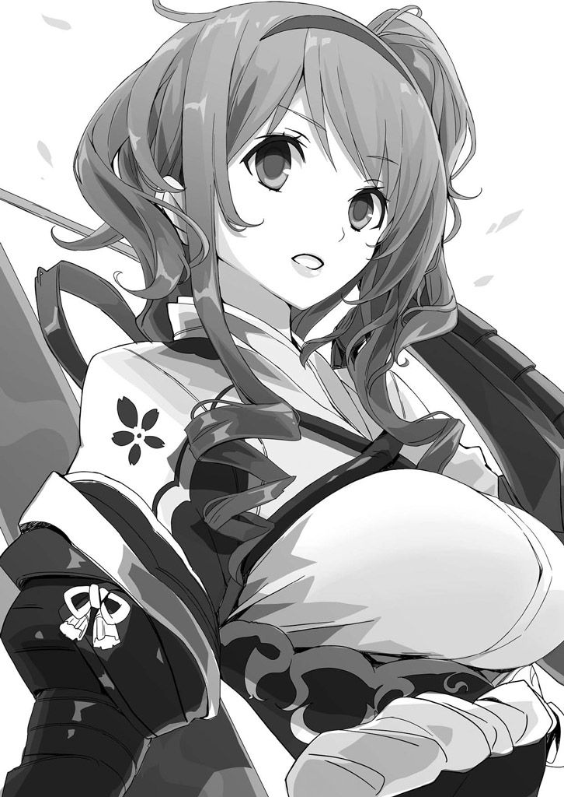
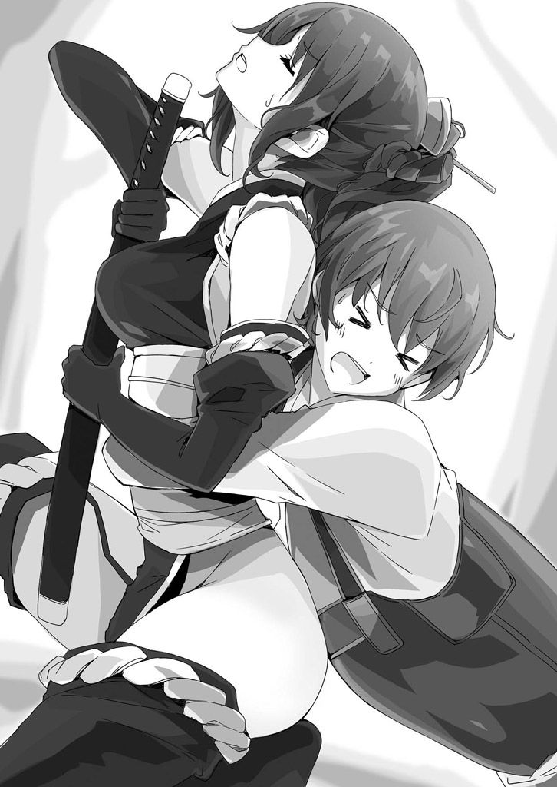

| 桜ノ杜ぶんこ 戦国ぼっち3 | |
| 瀧津孝 | |
| (2014) | |
桜ノ杜ぶんこ
戦国ぼっち ３
The tank army corps of fear
瀧津 孝

一章 道 後
視界はすこぶる悪い。
一メートル先が、ちゃんと見えるか見えないか......。それにすごく暑い。顔中からしたたり落ちる汗が目の中にも入って、視界がますます悪くなっていく。
ふぅ〜、何だか頭の中がぼぉーっとしてきた。この空間の中にいるのは俺だけ。
俺は今、確かに一人ぼっちでいる......。
とはいえ、今の〝ぼっち状態〟は、これまで戦国時代で過ごした日々の中でも最高に心地よいひとときと言っても大げさじゃない。俺がいるのは、伊 予 （愛媛県）にある道 後 温泉の岩風呂だ。
俺は 高杉 一郎 太 。本当なら、周りから〝戦国オタク〟なんて呼ばれつつ、東京で平凡かつ平和な暮らしを送ってるはずの高校二年生だった。それがどういった運命なのか、訪れた群馬県で戦国時代の小城にタイムスリップ。しかも籠城戦に巻き込まれ、何度も殺されそうになり、命からがら現代に戻ったと思ったら......。
今度は、 東京・秋葉原の古い神社から戦国時代に舞い戻り、風 魔 忍者からの有 貴 姫 救出、紅 一座によるかどわかし、関白 ・羽 柴 秀吉との出会い、そして巨大戦艦・九 頭 竜丸 を巡る瀬戸内での激しい戦い......心が安まる時なんてほとんどなく、この間まともに風呂なんて入っていない。
九 頭 竜丸 に潜入する直前、一度だけ今 治 の石風呂に入らせてはもらったけど、あの時はのぼせて気を失ったうえに、のぞき見の嫌 疑 まで麗 たちにかけられてしまったんだから、スッキリしたとか、疲労回復できたとか、そんなことを優雅に感じてる状況じゃなかった。
俺が住んでいた現代と戦国時代とを繋ぐ祠 を建てた謎の巫 女 が、伊 予 の道 後 に現れた。来 島 村上水軍の若き頭領・村上通 総 からその情報を得た俺は、今 治 の国 府 城 から西南約四〇キロの場所にある道 後 、つまり現在の愛媛県松山市に向け、海沿いの街道を徒歩で急いだ。
俺が元の時代に戻るまで「お付きを果たす」と宣言してくれた麗 だけじゃなく、有 貴 姫 、りよ、風 葉 、それに九 頭 竜丸 の戦いでたった一人の肉親である兄を失った能 島 村上水軍の沙 希 も加わっての道中だ。
りよは風呂敷に包んだ大きな柳行 李 （ヤナギで編んだ箱形の収納・荷物入れ）と矢筒を背負っている。何が入っているのか聞いたら、「おっ父が持たせてくれたお土産」ということだった。
途中でお腹が空いた時に食べる、魚の干物みたいなものだろうか。それにしてもこんな大量に。手に半弓 を持ってなかったら、行商人と間違われそうな格好だ。
俺が現代の日本からやってきた未来人であることを知っているのは、この中で麗 だけ。沙 希 は最初から俺を秀吉の忍び目 付 だと思ってるし、有 貴 姫 に風 葉 、それに多分りよも、俺が元々信州（長野県）・真 田 家の忍者でないことは知りつつ、厚い信頼を寄せてくれてるんだけど、まさか同じ時代の人間じゃないなんてことは想像もしていないだろう。
その俺が、どうしてそんなに急いで巫 女 に会わなければならないのか、有 貴 姫 たちはしきりに聞いてくるので、取りあえず秀吉から九 頭 竜丸 の件とは別に探るよう命じられた極秘事項、ということにしてごまかしている。
茂 平 が持たせてくれた握 り飯をわずかな休憩時間に喉 の奥へ流し込んで歩き続ける強行軍だったけど、沙 希 が先頭に立って道案内をしてくれたお陰で、国 府 城 を早朝に出発してから日暮れ前には道 後 にたどり着くことができた。
ここには、伊 予 守 護 ・河 野 氏の居城・湯 築 城がある。
秀吉の天下統一事業はすでに四国征伐 の段階に来てるんだけど、河 野 氏の当主・通 直 は家中の意見をまとめることができずに籠城 。今や秀吉の臣 として重要な戦力となっている毛利家の重鎮 ・小 早 川 隆 景 の伊 予 攻略軍に包囲されていた。
俺たちは道 後 に到着してすぐに、その攻略部隊の本陣を訪ねることにした。
九 頭 竜丸 鎮圧のために、自 ら小 早 川 水軍を伴 って芸 予 諸島にまでやってきた隆 景 は、事件が落着した後、俺たちを国 府 城 まで送り届けてから、急ぎ最前線の道 後 に戻っていった。別れ際、隆 景 は俺にこう言ってくれたんだ。
「高 杉 、その方がしてのけた快刀 乱 麻 のごとき謎解き、実に見事であった。またいずれどこかで会うこともあろうが、何か困ったことがあれば、いつでも訪ねてまいれ。力になってつかわす」
海路Ｕターンした隆 景 は、俺たちよりも先に道 後 に着いているはず。ならば、その言葉に甘えて、本陣にいるであろう彼の力を借り、道 後 にいる巫 女 を捜し出してもらえれば手っ取り早い。
チョンマゲも結 っていない男一人と、武装した女四人。
はた目から見れば無茶苦茶怪 しい一行なんだけど、先々で出くわす伊 予 攻略軍の地上部隊には沙 希 が能 島 村上水軍の一員であることを説明すると、簡単に道を通してくれるばかりか、本陣までの行き方までも教えてくれた。
味方なんだから当然と言えば当然だけど、どの兵士たちの表情もとても明るくて、緊張した様子が全くない。
大軍で小勢の城を囲んでるせいで、全軍に気の緩みが生じているのかと思っていたら、どうやら河 野 通 直 は俺たちがここにやってくる少し前に降伏 、開城したことがわかった。
ようやく探し当てた攻略軍の本陣も戦勝ムード一色で、隆 景 は俺たちの目 通 りを気さくに許してくれた。
「おおっ、お前たち、早速わしを訪ねてきたのか」
笑顔で迎えた隆 景 に、俺は今 治 沖でのお礼の挨拶もそこそこに、この地で逗留 しているらしい巫 女 について尋ねた。
そもそも巫 女 の情報を村上通 総 に教えたのは隆 景 だ。しかし、そんな彼も巫 女 の詳しい消息までは知らなかった。
巫 女 の居場所を探す手助けを願い出ようとした時、隆 景 の後ろに控えていた重臣の鵜 飼 主水 が口を差し挟んだ。
こいつは、九 頭 竜丸 が沈んだ後、俺たちを反逆者たちの一味と勘違いして捕らえようとした横柄な武将だ。
でも、俺が秀吉直属の忍び目 付 であり、真 田 家の御曹司である幸村 も一緒だったことを知ってからは態度が一変し、とても親切にしてくれる。
「その巫 女 ならば、今朝この道 後 に近い三津浜の港より、船で豊 後 （大分県中南部）に渡ったと聞いております。一時は領民どもが長い行列を作って巫 女 の加持 祈 祷 を受けておりましたが、それもようやく一段落したらしく、豊 後 で流行り病が民を苦しめていると聞いて急に思い立ったようで」
何と一足違いだった。しかも本来ならここに祠 を建てて、参拝する人たちにご利益を授けようとしてたらしいんだけど、豊 後 で疫病が発生したというニュースが彼女を突き動かし、祠 の建設を後回しにして船に飛び乗らせた。奉仕精神にあふれ、すごくフットワークの軽い女性なんだろうな。
すぐにでも海を越えて九州に渡りたかったんだけど、もう夜になってしまったから船は出ない。それに伊 予 の最有力拠点である湯 築 城を落としたとはいえ、隆 景 の率 いる伊 予 攻略軍の作戦が終わった訳じゃない。
まだ南 予 と呼ばれる伊 予 南部の平定が残っているんだから、巫 女 を追っかけるためだけに「軍船を一隻割いて、俺たちを豊 後 まで送ってくれませんか？」なんていう厚かましい要請はなかなか言い出しにくい。
俺がモゴモゴと話しにくそうにしているのを見て全て察した隆 景 は、主水 に命じて三津浜に停泊している商船の中に、豊 後 へ向かう船がないかを調べてくれた。
すると、一艘 の廻船 （貨物船）が、伊 予 の名物になっている道 後 酒 の樽を満載して明朝豊 後 に向けて出港することがわかった。
俺たちは隆 景 の口利きによって、その船に乗せてもらえることになり、道 後 に一泊することになった。
出港までの時間は自由になる。せっかく自由にできるのなら...... 道 後 と言えば、温泉だ！ もしできることなら、温泉でこれまでの疲れを癒 したい！ そんな感覚は、何とこの時代でも通用した。
道 後 温泉は、俺がいた時代から遡 ると三〇〇〇年もの歴史がある、日本最古級の温泉だと言われている。昔、足にケガを負ったシラサギが岩の間から流れる湯に浸して傷を治したのを見た村人が温泉の効能を発見し、以来周辺から湯 治 に訪れる人が引きも切らないようになったという。
俺がテレビや雑誌で知ってる道 後 温泉は、夏目漱石の小説「坊ちゃん」にも登場した和風建築の道 後 温泉本館や、その周りに大きなホテルや旅館が軒を連ね、浴衣姿の観光客が小振りで三色の坊ちゃん団子を頬 張ったり、みかんジュースや地ビールで喉 を潤したりしてるにぎやかな観光名所だ。もちろん戦国時代にそんな代物は一切ない。
当時の風呂というのは、今 治 で体験した石風呂みたいに、蒸気で体を蒸らすサウナ風呂みたいなもののことを指す。
浴槽にお湯を張って全身で浸かる、俺の時代では当たり前の風呂が一般化したのは、江戸時代以降だとネットか何かの本に書いてあった。
でも温泉の場合は、患部を直接浸すことでシラサギの例みたいに傷を治したり、病気を癒 したりする効能が認められたから、湯 殿 で体を浸ける入浴法も取り入れられたようだ。
実際この道 後 でも、源泉から湯を引き込んだ湯 殿 が数一〇カ所もあり、蒸気を小屋の中に引いた蒸し風呂と、地面を掘って湯船を作り、お湯に浸かれるようにした露天の岩風呂の割合がほぼ半々だった。
どの湯 殿 にも、ムシロで作られた幔幕 （特定の場所を囲んで用いる遮へい具）が周囲に巡らされていて、入浴する人は幔幕 の中で着物を脱ぐようになっている。
ちなみに、この頃の風呂は男性用、女性用なんて分かれていない。どれも混浴だ。
ということで......俺と一緒に入浴するという有 貴 姫 と、それを止めようとする麗 との間でまたもや一悶着が起こり、りよ、風 葉 、沙 希 を巻き込んでの言い争いが延々と続くもんだから、俺はこっそりみんなから抜け出した。
で、誰も入っていない岩風呂を見つけて 、 今こうやって 湯 殿 の中でくつろいでるって訳だ。
幔幕 の内側に干してあった入浴者用の手ぬぐいを一つ拝借 して、頭の上に乗せてるから、これぞまさしく温泉気分！ 溜まってた疲れが、じわじわと体の外へ溶け出して行くような心地よさを感じる。
明かりは端の方に小さなかがり火が一つあるだけだから、湯 殿 の中は暗くてよく見えない。俺の入ってる湯船はバドミントンコートくらいの大きさで、露天ではあるんだけど、周りの大木の枝が屋根みたいに出っ張ってきていて、幔幕 との相乗効果で湯気が逃げにくくなってるから半分サウナみたいなもんだ。
お湯の温度も結構熱めで、湯船から出ている首から上は汗が止まらない。
あの石風呂の時みたいにまたのぼせそうになってきたから、そろそろ上がろうと思った時だ。誰かが幔幕 の内側に入ってきた。
一人だけなのはわかるけど、暗さと湯気ではっきり見えない。
着物を脱いだそいつが湯 殿 に入り、こっちに近付いてきた。
湯 殿 の深さは膝 くらいまでだから、全身のシルエットがおぼろげながらわかる......小柄で、そこそこの細身......って、まさか、お、女？
俺とそいつとの距離は、もう一メートルくらいにまで狭まった。
すらりとした体型、ショートヘアの小顔......その大きくてつぶらな瞳が俺を真っすぐに見て、ますます大きく開いた。
「さ、沙 希 さん！！！！！！？？」
素 っ頓狂 な声を上げたのは俺の方だ。
沙 希 は、俺が頭の上に乗せているのと同じ手ぬぐいを胸のところで両手に持って垂 らし、へそ、さらにその下の大事な部分を隠している。
「高 杉 氏はこんなところにいたのか！ 今頃は麗 殿たちが心配して探し回っておるぞ」
沙 希 も俺を見て驚いてはいる。しかも真っ裸で俺の前に立っているんだけど、それほど動揺はしていない。
「君はどうして一人でここに？」
「最初のうちは麗 殿と有貴殿の言い分を黙って聞いておったのだが、話が堂々巡りになって、一向にラチがあかぬ。それに、いつの間 にか高 杉 氏がいなくなっていることに気付いたゆえ、恐らくどこかの湯 殿 に逃げ込んだのであろうとあたしも抜け出した。
温泉は久しぶりゆえ、早くひとっぷろ浴びたくなってな。たまたま入った場所に、高 杉 氏がいた」
沙 希 はにっこりと微笑んで、躊躇 することなく俺の隣に来て体を湯船に浸けた。
心臓が急にドキドキしてきたのは、のぼせてきたせいだけじゃない。
裸の女子と、もうほとんど肌が触れ合うくらいの距離で風呂に入ってるこの状況......あり得ないってば。
チラッと横を見た。沙 希 は目を閉じている。
キリッとした眉、高めの鼻、薄い唇の右下にあるほくろ。
現代のファッションモデルみたいな顔立ち......すごく可愛い。
わわわ、黙ってると、何だか変な気分になっちゃうよ。とにかく何かしゃべらなきゃ。
「沙 希 さんは、俺と一緒に風呂に入ることに抵抗はないの？」
沙 希 は目を開き、俺を見た。
「そもそも風呂などというものは、男も女も共に入るものであろう？ それに戦さの後ともなれば、血や汗の汚れを落とすために一緒になって戦こうた仲間と裸になって水浴びもする。
まあ、あたしの場合は水軍の中で誰も女扱いしてくれなかったから、余計無頓着なのかもしれぬが......高 杉 氏は、あたしと一緒なのが嫌なのか？」
「ま、まさか！ でも俺......女の子と一緒に風呂に入るなんて、初めてだし」
沙 希 は一瞬意外そうな顔をした後、少し気恥ずかしそうに視線をそらした。
「高 杉 氏は、あたしを女だと見てくれているんだな......」
「当たり前じゃないか！ 君みたいな可愛い子が女じゃなかったら、この世の中どうなっちゃうんだよ」
「可愛い？......あたしが？......」
沙 希 はそうつぶやいた後、穏やかな表情でゆっくりと俺に寄り掛かってきた。
そ、そんなことされたら、俺の理性が崩壊しちゃうじゃないか！
俺の肩と、沙 希 の肩が密着してる。
もうちょっとだけ俺が首を傾げれば、沙 希 の頭が俺の頬 にくっつく。
固まってしまった体を、首だけ少し動かそうとした時、今まで何度も聞かされてきた怒声が響いた。
「お待ちなさーーーーーい！！！」
幔幕 をはね除けるようにして湯 殿 へ乱入してきた数人が、湯船に飛び込んでそのままジャブジャブと俺たちの方に向かってきた。
その先頭に立っているのは......やっぱりさっきの声の主・麗 だ。
その後から続いて有 貴 姫 、風 葉 、りよ。みんな白い長 襦 袢 姿のまま、俺たちの前にまるで壁みたいにして立ち塞 がった。
麗 と有 貴 姫 の怖そうな顔、りよはふくれっ面、風 葉 はじと〜っと呆 れたような半目で俺を見ている。
「どういうつもりですか！ 一 郎 太 様！」
「どういうつもりもなにも、俺はただ風呂に入ってたら......」
「またいつもののぞきの癖が出て、沙 希 殿が入っている湯 殿 に忍び込んで、あろうことか同じ湯船に」
「ば、馬鹿なこと言うなって！ そんなことする訳ないだろ！」
「馬鹿とは何よ!! 」
ますます激昂する麗 を有 貴 姫 が手で制する。
「麗 、それは違うと思うぞ」
「姫様、何 故 ？」
「高 杉 殿が左 様 なマネをするはずがない。わらわが思うに、高 杉 殿がこの湯 殿 に入っているのを見つけた沙 希 が自 ら忍び入ったのであろう」
「あたしは高 杉 氏が先に入っていることなど知らなんだのだ」
「やはり、高 杉 殿の後を自 ら入っていったことを白状したな」
「だから、あたしが入ったら、たまたま高 杉 氏が湯船にいたんだ！」
「もう、わかりました！」
有 貴 姫 と沙 希 の間に麗 が割って入った。
「いずれにせよ、先ほどの話し合いにて、このような湯に入る場合、一 郎 太 様と、我らおなご衆は分かれて入浴することに決しました。ゆえに、沙 希 殿も和を乱さぬよう、従うてもらわねば困ります」
「あたしは別にこのままでもいいんだけど......」
「わらわが折れてつかわしたのだ。豊かな胸を持つわらわや、わらわには一段落ちるが、まあそこそこの胸を持っておるりよや風 葉 や沙 希 がいる中で、一人だけ貧しい胸を高 杉 殿にさらさねばならぬ苦 衷 （苦しい胸の内）をおもんばかってやってな」
「誰が貧しい胸ですか!! 」
「もうそのあたりで」
ここで風 葉 が収拾 に乗り出した。
「ひとまずここは、退きあげましょう。さあ、沙 希 殿、隣の湯 殿 に参りますぞ」
「えーっ !? どうしてあたしまで従わねばならぬ？ それは関東勢の皆々だけで取り決めればよいではないか......」
ぐずる沙 希 は、半ば強制的に四人に抱きかかえられるようにして湯 殿 から出て行った。
ふぅ～～～、何だったんだよ。妙に疲れがぶり返してきた。
クックックッ......。
ん？ 人の笑い声？ かがり火の明かりが届かない湯船の端から聞こえてくる。
その方向に目を凝らすと、ザバッと人が湯船から立ち上がるのがわかった。
俺以外にも入浴してる人が？ 先客がいたのか？
その人物はゆっくりとこちらに歩いてくる。男だ。若い。俺より二、三歳上だろうか。すごく爽やかな風貌 のイケメンだ。
「すまんすまん。盗み聞きするつもりはなかったのだが、わざわざ名乗り出るのもどうかと思うてな」
えっ！ さっきから俺たちの会話や様子をずっと見られてたのかと思うと、何だかすごく気恥かしい。
「あっ、あの...他の人が入ってるの全然わからなくて...騒がしくしちゃって、すみません」
取りあえず俺も立って、男に頭を下げた。
「あっはっは、お主には悪いが、久々に面白いものを見せて、いや、よく見えなんだゆえ聞かせてもろうた。決して馬鹿にしているのではないぞ。旅に出てから、なかなか思うようにいかぬことばかりでな。少々心がすさんでおった。
だが、お主のお陰で、胸の内のもやもやが少しは晴れたような気がする。おっと、まだ名乗ってもおらなんだな。わしは吉 弘 弥 七 郎 。九州生まれの浪人だ。故 あって、人探しの旅を続けている」
へえ～、まだ若いのに、浪人なのか......。
ぱっと見だけで本当のところはよくわからないけど、たくましい体つきでいかにも強そうだし、話し方によどみがなくて頭の回転も速そうだし、こんな若武者ならどこの戦国大名でも引く手数多だろうに。
それより、相手が身分まで含めて名乗ってるんだから、俺も相応の挨拶をしなくちゃいけない。でも、俺の公 の身分、関白 ・秀吉の忍び目 付 だっていうことは、あんまり大っぴらにしない方がいいだろう。
「俺は、高 杉 一 郎 太 と言います。俺たち、さっきの女性たちも仲間なんですけど......武芸修練のため一緒に旅してるんです。この伊 予 では、湯 築 城を攻めていた小 早 川 隆 景 様の庇 護 を受けることができて、明日は豊 後 に渡ります」
「あのおなごたちは、武芸者なのか？」
「ええ、みんな得意な武器は違うけど、腕前は抜群なんですよ......俺が一番弱くて、足手まといなくらいで......」
言わなくてもいいような事までペラペラしゃべってしまったのは、弥 七 郎 の醸し出すほんわかとした人柄の良さのせいかもしれない。
「話を聞いていると、どうも他人のような気がせん。高 杉 殿、いや、お主は俺より年若であろう、ならばこれからは一 郎 太 と呼ぶぞ。わしのことは弥 七 郎 と呼べ。で、 一 郎 太 、お主はわしと同じで、女 難 の相が出ておる」
「じょ、女 難 ですか？」
「ああ、女に苦労させられる相だ......というか、先ほどのお主とおなごたちのやり取りを聞いていれば、相を見ずとも一目瞭然だがな。アッハッハッハ」
トホホホ......情けない。あれっ？ でも「俺と同じ」ってことは......。
「じゃあ、弥 七 郎 さんも女に苦労させられてるとか？」
「ああ、苦労も苦労、大苦労だ。といっても、俺は精々 一人だけ。一 郎 太 のように、気の強そうなおなごばかりを何人も相手にしているのではない」
「はあ、いつの間 にかこんなことになっちゃって......でも、そうすると、弥 七 郎 さん の人探しというのは、その苦労させられてる女性を探しての旅ってことなんですか？」
「うん、まあな......」
探し人のことになると、弥 七 郎 は急に口調をトーンダウンして、話をはぐらかした。
「......そうじゃ、豊 後 に渡るとなると、府 内 もまだ今は平穏だが、九州はやがて大きな戦乱に巻き込まれるだろう。お主ら、よくよく気を付けた方が良い」
「大 友 家と島 津 家の全面戦争ですね」
そう、戦国時代の九州でこれから起こる、地元勢力の最終決戦だ。弥 七 郎 の口ぶりからすると、彼は大 友 家に近い武士ということになるんだろうか。
「旅の武芸者だけあって、他国の事情によく通じておるようだな。そうだ。万が一、島 津 が今全力で攻め寄せて来れば、豊 後 はひとたまりもあるまい。左 様 な折に出くわすならば、すぐ筑 前 へ逃げることだ」
「筑 前 ですか......」
筑 前 は、今の福岡県北西部。大 友 家の支配エリアに入っている。
「筑 前 には、難攻不落の城がいくつもあり、武勇に秀でた将が固く守っておる。そう簡単には、島 津 に蹂躙 されるようなことはあるまい」
「わかりました。吉 弘 様は、筑 前 の方なんですか？」
「ん......まあ、そのようなもんだ。縁があれば、豊 後 か筑 前 かで、また会うことがあるかもしれんな」
弥 七 郎 が探している人が誰で、何のために探してるのか、といった話は結局聞けずじまいで、それから取り止めのない世間話を五分ほど交わした後、俺が湯船から先にあがった。だってそれ以上湯船に浸かってたら、倒れそうになるくらいのぼせてたんだから。
ただ、会話こそ短かったけど、弥 七 郎 という侍にはとてもイイ印象を持った。
戦国という時代の性格上仕方のないことだけど、これまで表裏のある人間を何人も見てきた。人を見る目の経験値も少しは少しは上がったように思う。で、弥 七 郎 は悪い人間じゃない、そんな風に直感したんだ。
隆 景 は俺たちのために、野営用の小屋を一つ空けてくれたうえ、夜食に雑炊まで届けてくれた。温泉から上がり、食事を済ませた俺たちはよほど疲れてたんだろう、全員が崩れるようにその場で横になり、爆睡してしまった。
この日、こんな風に疲れを癒 してなかったら、明けてから始まる悪夢のような事態に、とてもまともには立ち向かえなかったかもしれない。
俺たちは夜明け前に、隆 景 の配下の兵士に起こされた。
このシチュエーションなら夜中のうちにでも俺のすぐ隣に添い寝してきそうな有 貴 姫 やりよですら、ぐっすりと寝込んでいた。
一時間もすれば三津浜に寄港している廻船 が帆 を上げると聞き、俺たちは身 支 度 を整えて港へ向かった。これから海を越えて九州だ。
俺は気分を改めようと、それまで着ていた鎧下 着 を脱ぎ、麗 お手製の小 袖 を羽織って、袴、比較的軽い胴 丸 、籠 手 を身に付けた。もちろん俺が使える唯一の武器である杖 は欠かせない。
俺たちがある程度の軽武装で旅を続けることにしたのは、湯 築 城が落ちたとはいえ、南 予 の敵対勢力がまだ健在で、豊 後 へ向かう海上で何が起こるか予断を許さなかったことと、九州の情勢が一触即発の不安定な状況だったからだ。
俺たちが目指す豊 後 は、領主の大 友 家が関白 ・秀吉に急接近しつつあり、比較的安全なエリアではある。でも、その大 友 家と、九州南部の有力大名・島 津 家との全面的な激突は、近い将来避けられないところまで来ていた。
戦国時代初期の九州には、全国の他の地域同様、多数の武将が割 拠 したんだけど、武力でもって最初に頭角を現したのが、豊 後 の大 友 宗 麟 だった。
宗 麟 は一時期、九州の北部から中部にかけて六か国の守 護 に任じられ、九州制圧を目前にするほどの勢威を誇っていたんだ。
ところが一五七八年、薩 摩 （鹿児島県西部）で勢力を拡大した島 津 義 久 との耳川 の戦いで大敗を喫してしまい、急速に衰退していった。
この戦いの影響は、肥 前 （長崎県・佐賀県）で龍造 寺 隆 信 の勃興を許し、九州は、大 友 、龍造 寺 、島 津 による〝三国志〟時代に突入する。
けれど、〝三国志〟時代はそう長く続かなかった。
一五八四年に沖 田 畷 の戦いで隆 信 が島 津 軍に破れて討ち死にしたことで、龍造 寺 家は島 津 家に服属。三大勢力の均衡 は崩れ、島 津 家は断然優位に立った。
俺がいるこの当時、宗 麟 は膨張する島 津 の勢力を抑えるため、大 友 家きっての猛将・立 花 道 雪 を筑 後 （福岡県南部）に進出させて膠着 状態が続いているはずだ......って、道 雪 ？
立 花 道 雪 は、立 花 氏の名跡 を継承する前の名前が、戸次 鑑 連 。若い頃に落雷事故に遭って足が不自由になり、以来屈強の兵士に輿 を担 がせて指揮 を執ると、向かうところ敵なしという圧倒的な強さで恐れられた。
彼が陣中で病死するのは......たしか一五八五年......九月。ちょうど、今じゃないか！
俺の知ってる歴史上では、島 津 家が本格的な豊 後 攻めを開始するのが一五八六年だから、豊 後 が戦火に覆われるのはまだ先なんだけど......タイミング的に何か嫌な予感がする。
とにかく不測の事態に備えることが大事だ。
大坂を出発した時と同じように、麗 は鎧下 着 に半ズボンのような四 幅 袴 と脚 絆 、その上から胸の部分を膨らませ、ウエストが締まったオーダーメイドの鎧に長剣。有 貴 姫 は派手な色合いの小 袖 と袴の上に女 具 足 と薙刀 。りよはちょっと地味だけど小ぎれいな小 袖 の背中に大きな風呂敷包みと半弓 、風 葉 は全身茶色の忍び装束と忍び刀、沙 希 は鎧下 着 と袴の上に水軍用の胴 丸 、そして海賊が使う独特の武器・やがらもがらを手にしている。
三津浜の港は、伊 予 を代表する貿易港だ。伊 予 攻略軍の安 宅 船や関船などの軍船が五〇艘 以上見える。
動員されている軍船はもっとたくさんあるはずだけど、周辺の小さな港や入り江に分散しているんだろう。港内には、軍船に混じって大型の廻船 も何艘 か停泊している。
俺たちが乗る廻船 は桟橋に横付けし、積み荷である道 後 酒 の四 斗 樽 を運び込んでいる真っ最中だった。
船の大きさは、これまでに俺たちが見てきた軍船の関船くらいだろうか。櫓 は一挺 もなくて、帆 だけで航走する木造船だ。
乗船するまでには、まだ少しだけ時間がある。俺は港の周囲に建ち並んでいる倉庫に足を向けた。酒以外に、この頃伊 予 の名産だった帯や簾 などが大量に保管されているようだ。中の様子をのぞき込んでいる時、ふいに背中を叩かれた。
「よお、一 郎 太 」
振り向くと、昨夜道 後 の湯 殿 で会った弥 七 郎 が、ニコニコしながら立っている。
身長は俺と同じくらい。地味な紺色の小 袖 と、ズボンに似た形で足首がすぼまっている野 袴 に大小二本の刀を差し、打飼袋 （携行品を入れる筒状の底のない長袋）をたすき掛けにした旅装だ。
こうやって明るいところで見ても、爽やかさやイイ男ぶりは変わらない。
「弥 七 郎 さん！ 港にいるってことは、船に乗って移動するんですか？」
「いやいや、港に入ってくる廻船 の乗客に、わしの探し人がおらぬか確かめるためにな」
「その人、早く見つかるといいですね」
「ああ。されどわしもそろそろ九州の実家に一度戻らねばならぬ。明日にでも船に乗ろうかと思うておる。お主は今日の船か？」
「はい、もうすぐ豊 後 に向けて出航する廻船 で」
「手綱さばきの難しそうな、昨夜のおなごたちも一緒なのだな？」
「あはは、彼女たちならあそこにいますよ」
苦笑混じりに、俺は二〇メートルほど離れた路上で立ち話をしている五人を指差した。その方向を見た弥 七 郎 は、途端に驚愕 の色を浮かべた。
「あの、弥 七 郎 さ......」
俺の言葉なんか全く耳に入らないようで、弥 七 郎 は突然彼女たちに向かって猛ダッシュした。
彼は何に驚いて五人の方へ？ と考える暇もなく、弥 七 郎 はこちらから見て背中を向けて立っている麗 にいきなり抱きついた。
「こんな場所におったのか！ 探したぞ！」
ま、まさか麗 が、弥 七 郎 の探し人だったって？
しかし、麗 の反応は弥 七 郎 の期待をあっさりと裏切るものだった。
「何をするか！ 無礼者！」
と叫ぶなり、そのままの姿勢で強烈な肘鉄を弥 七 郎 の胸元に食らわせた。
ウグッ......。
意表を突かれ、その場にうずくまった弥 七 郎 を、振り向いた麗 が鬼のような形相 で見下ろす。
「どういう訳でわたしに襲いかかったのか、説明せよ！ 事と次第によっては、許しませぬぞ！」
ゲホッ、ゲホッ......グフッ、グフッ......。
麗 の一撃は見事にみぞおちを突いたらしく、弥 七 郎 は話すことはおろか、しばらくは呼吸するのも苦しそうだったが、ようやく落ち着いて麗 の顔を見るなり、がっかりしたように頭 を垂 れた。
「麗 、この者はお前の顔見知りではないのか？」
有 貴 姫 の問いに、麗 は首を横にする。
「いいえ、このような男、上州 にても会ったことがございませぬ」
「それはまことか〜〜〜？ 会うたこともない者が、何の訳もなく抱きついてくるとは、只事ではない。それによく見ると、わらわですらそうそう見かけたことのないような容姿端 麗 なる若侍ではないか。どうも怪 しい」
「何がおっしゃりたいのです！」
「わらわが推察するに、麗 とはかねてより密かに縁を通じておったか、人知れぬ深い関係にあったかどうかした者......ひょっとすれば、我らに隠しておった許嫁 か何かなのではないか？のう、高 杉 殿？」
駆け寄ってきた俺に、有 貴 姫 は意味深な笑みを投げかけてくる。
「姫様、お戯 れも過ぎまする！」
麗 が隠してた許嫁 ？ そんな......信じられない。
「麗 さん、ホントにそうなの？ 許嫁 って......」
俺は不安になってつい詰問口調になってしまった。
「一 郎 太 様まで何を！ ですから、わたしは......」
「待ってくれ、ゲホッ、グフッ......」
ようやくしゃべれるようになった弥 七 郎 が、苦しそうにみぞおちを手で押さえながらゆっくりと立ち上がった。
「悪いのは全てわしだ、この方が知らぬと言うのは当然のこと」
「健気にも、麗 をかばい立てしようというのか？」
「麗 ？ この方の名は麗 ......なのか。探し人が一向に見つからず、焦る気持ちがつい目を曇らせたようだ。されど、後ろ姿や佇まいがあまりにも似ておったゆえ......」
「弥 七 郎 さんの探し人っていうのは、家族か親戚の誰かなんですか？」
俺の問いかけに、弥 七 郎 はちょっとの間遠くを見て、その人のことを思い浮かべたように見えた。
「わしにとって、何物にも代え難い、大事な人じゃ」
麗 と年格好が似てるってことは、若い女性だ。この言い方は、姉や妹を指してるんじゃない。俺とほとんど年も変わらないんだから、やっぱり恋人か、それこそ許嫁 ？ 俺があれこれと想像を膨らませてるのをよそに、弥 七 郎 は麗 に向かって深々と頭を下げた。
「麗 殿、先ほどは大変な無礼を働いてしもうた。どうか許していただきたい」
「そういうことなのでしたら......わたしも事を荒立てる気はございませぬ」
麗 はようやく落ち着きを取り戻し、弥 七 郎 への肘鉄を少し後悔している様子なのか、ぎこちない微笑をたたえて付け加えた。
「探しておいでの方......早く見つかるとよろしいですね」
顔を上げた弥 七 郎 は、ニッコリと笑った。
この笑顔がまたすごく爽やかで、イケメンぶりを際立たせる。有 貴 姫 や沙 希 やりよなんかは、改めて弥 七 郎 を眺め、ちょっと見惚れてるようにも感じられた。
さすがに風 葉 だけは平静を装っているけど、何を思っているのかじーーーーっと弥 七 郎 を見つめている。
どうも心の中が穏やかじゃない。これまでは、この時代のとびきり可愛い女の子たちばかりに何 故 だか言い寄られ、その強烈な積極行動に、時には面倒だとか邪魔くさいとか思うこともあったんだけど......何だろう、この複雑な気持ちは......。まさか、ヤキモチ？ この俺がみんなにヤキモチを？ ...... 麗 は 弥 七 郎 にどんな印象を持ったんだろう。 それでも、麗 だけは見かけの良さだけで心を動かさないよな？
「麗 殿、かたじけない。この弥 七 郎 、麗 殿の旅の安全と幸運を、心から祈っています」
「あ、ありがとう存じます」
とつぶやくように言った麗 の顔、何だか少し頬 が赤くなってないか？ まさか麗 、弥 七 郎 に好意を？？？
心の中の不 穏 なさざ波に、ポチャンと小石が投げ込まれたように、別の男の呼び声が飛び込んできた。
「沙 希 さま〜〜〜〜〜〜ぁ！」
上半身裸の上から鎧を身に付けた、いかにも水軍らしい出で立ちの中年男が、こちらに駆けてきた。
「孫 蔵 ！」
声を上げたのは、沙 希 だった。
「良かった！ 探しましたぞ！」
孫 蔵 と呼ばれた男は、随分走り回っていたらしく、息を整えるのにしばらくかかった。
「沙 希 さん、この人は？」
「田 坂 孫 蔵 。能 島 村上水軍の頭領・村上武 吉 様の側近くに仕える者だ。早くに両親を失い、まだ幼いあたしや兄様を武 吉 様が引き取ってくださった折、身の回りの世話をしてくれたのが、孫 蔵 なんだ」
「わしの説明なんかより、すぐにお屋 形 様（村上武 吉 ）のところまで来てくだされ。能 島 衆の本隊はすぐ沖にある興居 島 の入り江にあって、お屋 形 様の乗る将船もそこで待機しとります。この三津浜に小 早 を着けておりますゆえ、ささ早 う」
「そう急かすな。武 吉 様が、どうしてあたしをお召しなのだ？」
「お屋 形 様は、九 頭 竜丸 の一件の顛末 を、特に亡くなった（村上）武政様の最期のご様子などもお知りになりたいと」
「それならば、武 吉 様には今 治 の国 府 城 から詳しい書状を送った。あたしは今から豊 後 へ渡らねばならんのだぞ」
「ええっ？ 豊 後 とはまたいかなる御用で？」
「あたしは、ここにおられる高 杉 一 郎 太 氏と今後行動を共にする」
「行動を共に......とは沙 希 様、この方とはいかなる...... まさかお二人は契りを交わされた仲とか？」
そう言われて、沙 希 は少し恥ずかしそうな素振りを見せた。
「......契りはまだ交わしておらぬが......ひょっとしたらこの先そうなるかも......」
ええっ!! と俺が驚くよりも早く、麗 や有 貴 姫 が沙 希 の前に立つ。
「沙 希 殿、それは聞き捨てなりませぬ！」
「そうじゃぞ沙 希 、高 杉 殿とわらわはすでに契りを交わしておるのじゃから」
言い争いを始めた麗 と有 貴 姫 の間を押し分けて、孫 蔵 が首を突き出す。
「何という一大事。そうと知ったからには、是が非でもご同道願わねばなりませぬ。お屋 形 様は沙 希 様を実の娘同様に思うておいでじゃ。この後は、沙 希 様の御身を能 島 衆で引き取り、お屋 形 様の養女として嫁入りさせるか、姫武将として一隊を任せるか、その大事な談合をなさるおつもり。契りを交わそうかというような相手がおられるのなら、それは親同然のお屋 形 様に御自 ら報告され、後々のことを話し合っていただかねば！この孫 蔵 、うんと言っていただけぬのなら、この場で腹かっさばいてお屋 形 様にお詫びを......」
「わかった！ 孫 蔵 、わかったから！」
放っておいたら本当にここで切腹してしまいそうな勢いの孫 蔵 に、沙 希 がとうとう妥協した。
「高 杉 氏、必ず追いつくから、豊 後 で待っていてくれ。きっとだぞ」
そう言い残し、孫 蔵 と共に興居 島 にいる村上武 吉 の元へ出向くため、沙 希 は一旦俺たちと分かれた。
そうこうしてるうちに、廻船 の出港準備も整い、俺たちは慌ただしく乗船した。桟橋まで見送りにきてくれた弥 七 郎 に手を振り、廻船 は大きな帆 を広げて沖へ滑 り出した。
どんどん小さくなっていく弥 七 郎 に、甲板 から俺と一緒に手を振っている麗 。ちょっと憎らしくなって、皮肉めいた言葉が口を衝いて出た。
「弥 七 郎 さんって、かっこいいよね」
「ええ、清々 しい方だわ」
「......それは、気になってるってこと？」
「どういう意味？」
冷ややかな視線と共に、麗 が俺を見た。
「いや、弥 七 郎 さんと話してた時、どことなく嬉しそうというか......恥ずかしそうというか......素直な表情に見えたからさ......」
この一言はまずかった。
「ええ、どうせわたしはいつも素直ではありませぬから。そもそも、何物にも代え難い大事な人がいる、という方にわたしが横恋 慕 するとでも？ そんなことを言う一 郎 太 様、私は嫌いです！」
そう言うなり、麗 はプイと横を向き、甲板 の下にある船室に下りてしまった。あ〜〜〜、つくづく馬鹿だよなぁ、俺って......。
廻船 は追い風を受けて、三津浜を出航してから順調に海原を進んだ。
西南に長く突き出した佐 田 岬 に沿って、先端に近い仁田の浜で一泊。翌日はいよいよ豊 後 水道を横断し、豊 後 最大の貿易港・府 内 に入るという丸二日がかりの行程だ。
俺たちは、船首部にある六畳くらいの船室を居間兼寝室としてあてがわれた。船体中央部の胴の間（船倉）には道 後 酒 の四 斗 樽 が満載されているらしく、その上に板をはめ込んだだけの甲板 にまで樽は並べられている。
こんなにたくさん積み込んで、航行に支障はないんだろうか......何となく喫水線 （水面に接する分界線）がかなり上昇してるように見えるだけに、少し不安になる。俺たちのいる部屋には行き場を失った空の樽が三個ほど置いてあった。樽が破損した際に使う予備の樽だ。
乗組員は、船頭（船長）、舵取り、水 夫 たち合わせて一〇人で、大きな帆 柱 がそびえる船体中央部のやや後ろ寄りから船尾にかけて船員部屋がある。
でも日中はほとんど全員が甲板 上にあり、ムシロでできた巨大な帆 を操り、船尾の舵を動かし、海上や天候の変化に目を光らせている。
忍びの修練を積み、船には慣れている風 葉 と、短期間ではあるけれども水軍の一員だったりよは平気みたいなんだけど、俺、麗 、有 貴 姫 は出航してすぐ軽い船酔いに悩まされた。風 魔 忍者から有 貴 姫 を救出した後の江戸から堺までの辛かった船旅がまた思い出される。この船酔い、ひどくならなきゃいいんだけど......。
板敷きの部屋で、麗 と有 貴 姫 は早速横になってる。麗 の機嫌はまだ直っていないようで、俺から一番離れた部屋の隅で背中を向けていた。
機嫌が悪いのは麗 だけじゃない。この廻船 の乗組員もそうだ。
重い荷を満載して、それでなくても船は不安定だというのに、隆 景 の半ば強制的な命令によって乗せたくもない俺たち五人を受け入れる羽目になってしまった。船頭をはじめ、乗組員たちはどいつもこいつも無愛想このうえない。
昼が過ぎ、宿泊する仁田の浜に着くまでには、まだ数時間はかかるだろうと思われる頃合いだった。
「船足が速うございます」
ぽつりと風 葉 が言った。この居心地の悪い船から早く降りたい、という願いが通じたんだろうか。速いのに越したことはない。
「良かった。じゃあ、予定より早く豊 後 の港に着けるかな」
特段何も考えず言った俺に、風 葉 は真剣な眼 差 しでかぶりを振った。
「速過ぎまする。それに波が高くなってきました」
確かに、船の揺れがどんどん大きく、いやひどくなってるようだ。
部屋の天井にある蓋 状の開口部を開けてみた。いつの間 に降り出したのか、猛烈な勢いで風雨が部屋の中に吹き込んできた。「キャッ」と小さな声をあげて、麗 と有 貴 姫 が飛び起きた。まだ昼間なのに、空は黒い雲が覆 って薄暗い。
「まさか、嵐？」
俺の一言に、みんなの顔から血の気が引く。と同時に一斉に甲板 に飛び出した。
甲板 は戦場だった。
激しい風雨にさらされながら、水 夫 たちが帆 を張るのに必要ないくつもの縄に取り付き、必死で帆 を下ろそうとしている。
しかし、帆 は強風に煽 られてなかなか言うことを聞かない。俺たちは、あっという間 にびしょ濡れとなった。
後部甲板 で、船頭と舵取りが怒鳴るようにして話している。風雨が激しさを増し、普通のしゃべり方じゃ聞き取れなくなっているからだ。何を言っているのかは、こちらにもわからない。と、船頭が俺たちに気付いて声を張り上げた。
「危ないから、中に入ってろ！ 早く！」
船の揺れ方は、大型アミューズメント施設にある体感型ライドマシンを彷彿 とさせるくらいひどくなってきた。もう、まともには立っていられない。
ライドマシンは安全ベルトがあるし、万が一シートから落ちても軽い打撲で済むくらいだろうけど、風浪 で荒れ出したこんな海に体一つで落ちたとしたら、まず命はない。
「高 杉 様、陸地が見えませぬ。この強風で思わぬ方角へ流されているものかと！」
強い風雨を受けて目を細めつつ周囲の海を見渡していた風 葉 が、緊迫 した表情で語気を強めた。
この船は地乗り、つまり陸の地形を目標にした沿岸航法で仁田の浜を目指してるはずなんだけど、本来南の方角に見えるはずの佐 田 岬 が見えないというのは、結構北に流されているってことを意味する。
俺たちは船頭に言われたとおり、船室に戻ったものの、状況はますます悪化しているのが船の揺れ方でも感じ取れた。
時折、強い波が船体にぶち当たり、床が大きく傾く。その度に、麗 と有 貴 姫 の懸命に押し殺した悲鳴があがり、俺たちは室内の荷物やいろんな用具と一緒に板敷きの坂を滑 り、転がる。
さらに、甲板 を洗ったと思われる高波の海水が、扉の隙間からどんどん入ってきた。何度も転びそうになりながら、部屋に干してあった布を取り、扉の下に詰める。でも、こんな事をしていたって、所詮 は気休めに過ぎない。船そのものがかなりヤバイ状態にあるのは、素人の俺でもわかる。
ドンドンドン！
扉を強く叩く音がして、船頭が中に入ってきた。悲壮な顔つきだ。
「このままでは船が沈む。甲板 の荷を海に捨て、仕方なく帆 柱 も切ることにした。万に一つ、この船室の真上に倒れるとも限らん。危ないゆえ、我らと共に甲板 の後ろに来てくだされ」
帆 柱 を切るなんて、最終手段じゃないか。帆 はこの船の唯一の動力源なんだから、それを失えば漂流するしかない。日本のどこかに流れ着くことができればラッキーだけど、潮の流れに任せて太平洋にまで出てしまったら......。
マイナス思考はいかん！ もっと前向きに考えなきゃ！ 俺はつい反射的に杖 を手にして立ち上がろうとしたんだけど、船頭がそれを止めた。
「両手が空いておらねば、何かにしがみつくこともできん。こんな時は、得 物 （武器）は邪魔になる。命が大事ならばそんな物は残し、身一つで来なされ」
言われてみれば、確かにそうだ。麗 たちも一旦は手にした刀や薙刀 を床に置き、俺たちは急いで甲板 に出た。
甲板 に置かれていた四 斗 樽 はすでに投棄され、帆 柱 で風をはらんでいた帆 も下ろされていた。帆 柱 の根元には、斧を持った水 夫 が二人、すぐにでも切り倒せる態勢で待機している。濡れて滑 りやすいうえに、揺れ続ける甲板 の上を慎重に歩き、俺たちはようやく後部船室の入り口にたどり着いた。
「俺たちはどこにいれば？......」
そう尋ねると、雨でびしょ濡れの船頭の顔から笑みが漏れ、その右手が舷側 （船体の側面）を指した。と同時に、水 夫 たちが一斉に短刀を抜いて俺たちを取り囲んだ。
「おい、どういうことだ！」
「お前らには、このまま海に飛び込んでもらう。逆らえば、この場でひと突き。屍 を放り込むまでよ」
「あなたたち、我らに何の恨みがあると言うのです！」
激昂した麗 が声を荒げた。
「此 度 の船出は、世話になっとる豊 後 の商家との約束で、普段積み込む倍の酒樽を無理してでも運ばにゃならんかったのじゃ。
そんな時に何の因果かお前らを押し付けられ、酒樽を入れることにしておった船室まで明け渡し、お陰で甲板 に置いとった樽は全部海に捨ててしもうた。
この船を軽うして、安定させるためにはまだ胴の間の酒樽もいくつか捨てんとならん。その前に、お前らから先に消えてもらう。
五人も海に飛び込んでくれれば、酒樽三つ分ほどは助かるからな。ヘッヘッヘッ」
「かような真似をしてタダで済むと思うか！ わらわやここにいる高 杉 殿を誰だと心 得 る！ 小 早 川 様が黙ってはおらぬぞ！」
「小 早 川 様には、五人の客人は不運にも嵐に巻き込まれた折、高波にさらわれたと神妙にご報告するまでのこと。それ以上、誰も詮索 はできぬわい」
歯がみして船頭につかみかかろうとする有 貴 姫 や麗 に、水 夫 たちの短刀が突きつけられる。何てことだ......このままじゃ俺たちは荒れ狂う海の中に......。
「さあ、歩け！」
船頭の合図で水 夫 たちが短刀をさらに突き出し、俺たちは右 舷 の舷側 に並ばせられた。
手すりを越えれば、すぐ下は海。
帆 柱 の下にいる二人を除く、八人の船乗りが俺たちの前に立ちはだかる。
短刀を持つ水 夫 たちが、じわっじわっと前に進んできた。
このまま立って動かなければ、短刀に刺されてしまう。短刀を避けるために後ろへ下がれば、海へ真っ逆さま。どっちに転んでもジ・エンドだ。
「一 郎 太 様......」
麗 が俺の左腕をしっかりとつかんだ。
これまでか......。俺は麗 に向かって穏やかに言った。
「死ぬ時は......一緒だよ」
麗 が無言でうなずく......のを邪魔するように、有 貴 姫 とりよが俺にしがみついてきた。
「わらわも一緒じゃ！」
「おらも！」
そして風 葉 は......一歩離れた場所から控えめに俺の右腕に手を添えた。
みんな......。
最後の時が訪れたのを覚悟した時、俺は水 夫 たちの向こう側、つまり左 舷 の方向から、高さが一〇メートル以上もありそうな高波が押し寄せてくることに気付いた。
あんな高波なら、船は飲み込まれてしまう。
俺は咄嗟に左舷を指して「あれを見ろ！」と叫んだ。
不審そうに船頭が後ろに顔を向け、他の水 夫 たちも何事かと振り返るなり、彼らの体は恐怖で一瞬固まった。
今だ！ 今しかない！
俺は背中を見せた目の前の水 夫 二人を思い切り突き飛ばして転倒させ、その隙間から麗 たちを抱きかかえるようにして船首部の船室へとダッシュした。俺の意 図 をすぐに察した風 葉 が、帯に仕込んでいた棒手裏剣を、止めようとする水 夫 たちに打ち込む。
間に合うか !? 船室の扉を開け、麗 たちを押し込むようにして部屋に転がり込んだ。
最後尾の風 葉 が部屋に飛び込み、それを追ってきた船頭が扉に手を掛け入ってこようとした刹 那 、凄まじい衝撃 と共に、高波が船に覆 い被さった。
船頭は絶叫 を残して波にさらわれ、甲板 にいた全ての乗組員も海の中に引きずり込まれていった。
助かった！
と思ったのも束の間、船室の扉の向こうからは大量の海水が流れ込んできた。
さっきの高波は船頭たちを飲み込んだだけでなく、船全体に甚大な浸水をもたらした。船は、傾いたまま急速に沈没しつつある。船室内に流れ込んだ海水は、もう膝 あたりにまで達している。
麗 は水の中に沈んでいた長刀を手探りで見つけて腰に差し、りよは半弓 と風呂敷包みを背負った。逃げる準備は整っているけれども、このまま船外に出れば溺 れるだけだ。
どうすれば......俺の視界の中に、ぷかぷかと浮かんでいる三つの酒樽が入った。樽には破損を防ぎ、持ち運びに便利なよう、太い縄が巻かれている。
上部の縄の結び目のあたりには、わずかに物を差し込めるスペースがある。
俺は杖 を取り、そこへぐっと差し込んだ。
これならいける。もう一つの樽には、有 貴 姫 の薙刀 の柄を同じように差し込む。これで、江戸時代の駕 籠 かきが担 ぐ駕 籠 みたいに、樽を杖 と薙刀 で担げるような格好にできた。でも、担 ぐんじゃない。
「高杉殿、これは何のまじないじゃ？」
「姫様、まじないではございませぬ」
「そう、樽から突き出た両側をつかんで、二人用の浮き輪にするんだ」
「おお〜！ さすがは高杉殿じゃ......ということはやはり、海に飛び込まねばならぬのか？......わらわは水が苦手というに......」
「姫様同様、山育ちのわたしも泳げませぬが、左様なことを言っておる場合ではありませんぞ！」
そうこうする間にも、扉からは海水が流れ込み続け、胸が浸かるくらいにまでなってきた。
海水が扉の高さ以上になれば、浮力のある樽を水の中に沈めて外に出すことはできなくなる。これ以上は室内にいられない。
「さあ、樽と一緒に早くここから出て！」
風 葉 が、樽と俺たちを扉に向けて押し出そうとした。
「でも、風 葉 さんは？......」
「われ一人ならば何とでもなりまする。樽はまだ一つ残っておりますし。もう時は残っておりませぬ！」
風 葉 に促されて、俺たちは海水に洗われつつある甲板 に出た。
沈没寸前だ。杖 を差し込んだ方に俺と麗 、薙刀 の方に有 貴 姫 とりよが分かれる。
樽の上から左右に突き出た杖 を俺と麗 がつかんだ瞬間、強い波に押されて海上に放り出された。
「杖 を決して離すんじゃないぞ！」
「ええ！ それより姫様は？ りよや風 葉 殿は？」
麗 に言われるまでもなく三人の姿を見届けたいんだけど、激しく上下する波 浪 に遮 られ、痛いくらいに顔を打ち付ける風雨のせいで目もまともに開けていられないんだから、確認なんてできやしない。
廻船 の船体すら見えず、天空に突き出した帆 柱 だけがかろうじて見える。
俺と麗 がつかまる樽は帆 柱 からどんどん離れていき、その帆 柱 さえもやがて海中に没していった。
有 貴 姫 とりよはちゃんと樽にしがみついてくれてるだろうか......風 葉 はあの船室から無事脱出できたんだろうか......。
波、風、雨に翻弄される海の中で、手と腕に必死で力を込め、麗 と励まし合いながら、一体どれだけの時間が過ぎていったのかわからない。
頭の中はどんどん朦朧 としてきて、俺はとうとう意識を失ってしまった。
二章 女野武士
さざ波の音が聴こえる......心地よい。
寒い？ のか、暖かい？ のか、よくわからない。
目を開けると、俺はうつ伏せになっていた。
砂の上？
ゆっくり起き上がると、そこは砂浜だった。
陸地......ということは、助かった!?
俺と一緒に廻船 から脱出した麗 ......麗 は？ 慌てて周りを見回す。
......いた！一〇メートルほど離れた波打ち際に、酒樽と杖 で作った簡易浮き輪、その杖 の端を両手でしっかりと握 ったままの状態で麗 は横たわっていた。
「麗 さん......」
呼び掛けても反応がない。まさか、死んじゃったなんてことは......。
「麗 ！ 麗 ！」
肩を抱いて揺り起こすと、「んん......」と呻 きながら麗 はうっすらと目を開けた。
良かったぁ。思わず安 堵 のため息が出た。
「一 郎 太 様、ご無事で......」
麗 はまだ意識が朦朧 としてるようだけど、少し微笑んだ後、真顔になった。
「して、ここは？」
そう、それだ。ここは砂浜、どこかの海岸だ。
砂浜はそれほど広くはない。砂が広がってるのは二〇〇メートルくらいで、その両端からはずっと岩場が続いているように見える。
「どこなのかは......わからない。本州か、四国か、九州か、それともそれ以外の島なのか......どこかの海岸ってことしか」
台風一過、ってやつか。雲一つない青空から、暖かい陽光が降り注 いでいる。
日の高さからみて、昼前後だろうか。着物はびしょ濡れのままだから、さっきから寒いような、暖かいような気がしてたんだ。
「とにかく、日のあるうちに着てる物を乾かそう。行動するのはそれからだ」
「ええ......姫様たち、無事ならばよいのだけど......」
波打ち際に沿って岩場の方へ歩くと、波がかからず、日が傾くまで日光が射し込み、着物を掛けて乾かすのに丁度良い大きな岩はいくらでもあった。
小川が海に注 いでおり、そこで喉 も潤すことができた。
適当な大きさの岩の前で、俺は胴 丸 や草摺 を脱ぎ、袴 の紐 を解こうとして......ふと麗 を見た。何 故 だか俺をにらんでいる。
「何してんの？」
「一緒に着物を脱がせて、わたしの裸を見るつもり？」
「そ、そんな訳ないだろ！」
「じゃあ、先に脱いだら、遠ーーくに離れて、日が暮れる直前までここに戻ってきてもらっては困ります」
「全くもう、何のことかと思ったら......はいはい、わかりましたよ」
俺は袴と小 袖 を岩肌に掛け、今じゃ穴だらけになった真 田 昌幸、幸村 親子の花 押 入り勝負パンツ一丁になって岩場から離れた。こんな陽気だから、それほど寒くはない。 樽から引き抜いた杖 は、当然手元にある。
背中越しにまた麗 が声をかける。
「わたしが脱いでいるところをのぞきに戻ってはなりませぬぞ！」
「そんなことしません！」
全然信頼されてないよ。俺はムカッときて振り向きもせず答え、そのまま陸地の奥へ向かっていった。
砂浜の奥行きは三〇メートル足らずで、すぐに鬱蒼 とした森になる。森の向こうには山々の連なりが見えるだけだ。
腹も減ってきた。もう秋だし、クリとかカキとか食べられそうな果実、それがダメならせめてコケモモとかギンナンとか、どっかに生 ってないだろうか。森の中を分け入って行くと、しばらくして人の声が遠くから聞こえた。
「待て！ 待たぬか！」
そんな風に聞こえる。
木の枝をかき分け、声のする方に進むと、木と木の間隔 が比較的広く、見渡しの良い場所に出た。
そこで、小柄な一人が、大柄な二人を相手に刀で斬り結んでいるのが目に入った。
小柄な方は簡便な鎧を身に付けた兵士、大柄な方は平服の武士だ。
兵士はずっとこちらに背中を向けているから顔が見えないんだけど......女？
......ええっ!? まさか麗 ？ 背中には鉄砲みたいな物を担 いでいて、小 刀 だけで渡り合っている。かなりの剣の使い手であるのはわかる。
そしてあの背格好、後ろに束 ねられた黒くて長い髪、首の下で小さく輪のように結ばれた髪型は、麗 にそっくりだ。
まさか、いつの間 に俺を追い越してこんなところへ？ 普通に落ち着いて考えりゃ、あり得ないことなんだけど、俺の頭脳は瞬時に小柄な方は味方、大柄な二人は敵、と判断してしまった。
小柄な兵士が木の根っこに足下を引っかけて転んだ。もう放っておけない！
俺は道場で習った基本技の一つを思い出し、杖 を上段に構え、端と端を握る「逆手突」の構えで突進した。
「お前たち、止めろ！」
予想もしない助 太刀 の登場に、二人の武士は刀を振り上げたまま同時に俺の方を見た。
彼女にとっては、敵のわずかな隙が生じただけで十分だった。
軽業 師 のように起き上がり、一人の胴を下から上に払い、返す刀でもう一人を袈裟 懸 けに斬った。
すごい連続技だ。刀を上げたままの姿で、武士たちはほとんど同時に倒れた。
「誰やか知らんけど、危なかところをば......」
と言いながら振り向いたそいつは、神業を目の当たりにしてやることもなく突っ立っている俺を見て、いきなり吹き出した。
そりゃそうかもしれない。刀でもない木の棒を振り上げ、パンツ一丁で森から出てきた男に助けられたんだから。
笑い上 戸 なのか、腹を抱 えて苦しそうにしているそいつは......まさしく女だった。
でも、麗 じゃない。背格好や髪型はそっくりだけど、全くの別人だ。
それにしても、あんまり笑い続けられるのも面白くない。ちょっと心外そうな俺の表情にそれを察したのか、彼女は「許せ」と言いながら、まだ懸命に笑いを堪えている。
このままだとラチがあかないので、俺から話しかけた。
「俺は高 杉 一 郎 太 。乗ってた船が難破して、この近くの砂浜に打ち上げられたんだ。で、君はどうしてそんな格好を？ 誰に追いかけられてたの？」
ようやく笑いを抑え、彼女は凛 と俺を見 据 えた。
年頃が近く、気が強そうなところは似てるけど、麗 とはまた違うタイプの美人、いや美少女だ。ネコのようにつぶらな瞳、高くはないけどすらりとした鼻、ふっくらしたやや厚めの唇......。
「うちの名は......熊 ......そう、高 良 熊 だ」
熊 ......何か昔のお婆さんによくついてたような名前だ。お虎さんとか、お竜さんとか。
「お熊 さん......だね」
「そん話し言葉からすると、九州の者ではないな。敵の島 津 でないのなら、安 堵 した」
「てことは、ここは九州なのかい？」
「日向 ばい。豊 後 との国境に近い縣 から丑寅 （北東）の方角に一里ほどのところになる」
「日向 ......つまり宮崎県か......」
「みやざ......？」
「あっいや、で、島 津 が君の敵だって？」
「ああ、そうたい。持っている物も木の棒かと思っていたが、そいは杖 ？ しかも、名字と諱 （本名）を名乗るっちゅうこつは......お主、武士か。
今や九州以外の地は、大方が関白 ・羽 柴 秀吉様の統べるところ。ならば、お主は関白 さんの側に立つ者？」
「俺は一応......関白 殿下直属の忍び目 付 を仰 せつかっている」
味方らしいという安堵感と、彼女のキュートさにつられて、俺はごくごく自然にこの時代での身分を明かしてしまった。
「おおっ！ そいはまことなこつか！ ありがたい！ 大 友 のお殿様は、関白 さんを大層頼りにしておいでや」
「なら、君は大 友 家の人なの？」
「......大 友 家の側に立つ身ではあるが......家中の者やない！ うちは大 友 家にその人ありと恐れられた名将・立 花 道 雪 様にお味方する、筑 前 （福岡県北西部）の野 武 士 なんや」
「野 武 士 ？ 女の？」
「おなごとて、武者として戦う者がおるように、数は少なかろうが野 武 士 もおる」
確かにその出で立ちは、正規兵のそれとはちょっと違う。
薄汚れた鎧下 着 と袴の上に、多分一番大事なはずの胴 丸 は付けず、腕を守る籠 手 、膝 を守る佩楯 、ふくらはぎを覆 う臑当 だけという、機動性重視の変則装備。
これらの防具は全部赤色に統一されていて、相当使い込まれている。もちろん兜なんかはない。
胴 丸 を付けてないからその部分が目立つんだけど、良く似た麗 の体付きと唯一異なるのは......胸だ。
鎧下 着 は、薄い小 袖 のほぼ上半分、もしくは法 被 の丈 を少し短くしたような形をしている。左右の襟先を正面で重ね合わせ、帯で固定するのは着物と同じだ。
着物だと胸はそんなに目立たないものなのに......この膨らみは、かなり大きいとみて間違いない。俺があんまり胸ばかり見てたもんだから、熊 は少し怪 訝 な顔つきをした。
「えっと......野 武 士 と言われれば、確かにそうかも......で、筑 前 にいるはずの君が、どうしてこんな場所に？」
ごまかしついでに話を進めようとする俺をキリッとにらみつつも、熊 は事の経緯を話し始めた。
戦国時代には、野 武 士 と呼ばれる武装集団が全国のあちこちで活動していた。
特定の土地に根付く住民で構成され、彼らはかつて武士であったり、農民であったり、商人であったりした。
普段は盗賊まがいの略奪や、辺境の街道で通行料の強制徴収、戦時には近隣武将や大名の傭兵になった。
雇い主との関係は、主従 制で結び付いた武士よりも希薄だから、一旦形成不利と見るや寝返り、敗軍の落ち武者狩りをすることさえあったんだ。
立 花 道 雪 も戦さの時には地元の野 武 士 を雇い入れ、自軍に組み入れて戦場に赴いたけど、他の武将たちとは決定的に異なる点があった。
それは、野 武 士 に対する扱いだ。
道 雪 は野 武 士 に対しても、自分の家臣と分け隔てなく、親身になって接した。だからこそ野 武 士 たちも意気に感じ、「この方のためならば」と命も惜しまず働くようになった。
道 雪 の部隊が無敵だったのは、彼の人柄も大きく影響しているんだろう。
熊 は、俺や麗 よりも一歳下の一六歳。幼い頃に戦さの巻き添えで農民だった家族全員をなくし、野 武 士 に育てられた。剣や鉄砲の扱い方を学んで戦場にも出るようになり、数年前からは一人前の野 武 士 として道 雪 の部隊に従軍していた。
熊 は戦場で度々武功をあげ、珍しい女武者ということもあって道 雪 から特に目を掛けられた。時には優しい言葉をかけ、時には戦さで役に立つ助言を与え、その様子はまるで自分の身内にするような慈 愛 に満ちていたという。
「うちにとっては......父親のような存在やった。そん道 雪 様が......五日前に、筑 後 の陣中でお亡くなりになった......」
そうか......やっぱり。
道 雪 の死はちょうどこの時期。島 津 家は服属させた龍造 寺 氏や秋月 氏に命じて筑 後 に進出させ、道 雪 はこれを撃退すべく対陣中に病死した。俺の知ってる歴史の通りだ。
「立 花 軍は道 雪 様の死を隠し、今も対陣ば続けておる。ばってん、もしそんこつが島 津 に知れれば、やつらはこの時とばかり豊 後 へ攻め掛かってこよう。そうなれば、道 雪 様なき今の大 友 家では支えきるこつはできぬ」
熊 の言っていることはよくわかる。一時は九州最大の勢力を誇った大 友 家も、この頃には領内の各地で反乱が起こり、比較的安全なのは本拠地の豊 後 だけで、筑 前 、筑 後 は島 津 勢力との一進一退を繰り広げていた。
「島 津 が攻めてくるとしたら、そん道筋は筑 前 、筑 後 、肥後 （熊 本県）、日向 から。筑 後 には道 雪 様を欠くとはいえ立 花 軍の主力が居座り、筑 前 には道 雪 様の息子・宗茂 様や、名将の誉 れ高い高橋 紹運 様がおられる。
肥後 からの途上には難攻不落の岡 城があり、武勇に優れた志賀 親 次 様が守っているからまずは安心。一番心配なのが、日向 路や。敵から最も近い朝 日 岳城 の柴 田 紹安 様は優柔不断で、寝返るやもしれぬと噂されておる。
万が一、朝 日 岳城 が抜かれれば、次に敵を食い止められるのは、佐 伯 惟定 様の栂 牟礼 城 。ここまで攻め込まれてしまえば、ご隠居された大 友 家の大殿・宗 麟 様がおいでの臼 杵 城 と、ご嫡男の現当主・義統 様が住まわれる大 友 館まで一気に衝 かれてしまおう。そいで、うちが日向 の敵情を探るためにここまで来たんや」
「立 花 家か、それとももっと上の大 友 家の命令を受けて？」
「まさか、うちは一介の野 武 士 やで」
「じゃあ、勝手にこんなところまで来たのか？」
「家臣ならこんな無茶はできん。でも、野 武 士 は自由や。思うた通り、行動する。これは、死ぬまで大 友 家のために尽くし、大 友 家を守ろうとした道 雪 様へのご恩返しや。島 津 とて、大 友 領内には多数の忍びを入れておろう。道 雪 様の死が知れるのも時間の問題じゃ。ぐずぐずしてはおられんからな」
「それで敵に見つかって、追われてたって訳か」
「すぐに見つかったのではない。潜伏 中に、いろいろ面白い物を見させてもらった」
「それって？」
「それよりお主、そんな姿のままでいると風邪をひくぞ。着物はないのか？」
「ああっ......」
話に夢中になるあまり、間抜けな姿のままでいることをすっかり忘れてた。俺は、もう一人の仲間が待っていることを告げ、一緒に浜へ向かった。
俺がはいてる高級パンツについて、熊 はそれほど驚いていなかった。当時の九州は南 蛮 （ヨーロッパや東南アジア）や明 （中国）との貿易交流が盛んだし、彼女が育ったという筑 前 には、かつて那 の津 と呼ばれた平安時代以来の貿易都市・博多がある。
異文化に慣れているのか、このパンツも南 蛮 渡 来 の下着の一種か何かで、後から家紋などを染めたくらいにしか思っていない。
やがて砂浜の岩場に戻ったものの、麗 の姿がない。
「麗 さん！ どこにいるの？」
大声で呼び掛けると、着物が干してある岩陰から不服そうな声が返ってきた。
「まだ日は暮れておりませぬ！ 衣服も十分乾いておりませぬぞ！」
眉 間 にしわを寄せて出てきた麗 の姿にあ然とした。
衣服は乾かしてる真っ最中だから身に付けてないのはわかるんだけど、麗 は真っ裸の上から鎧を身に付けた姿だ。
胸やもっと下の大事な部分こそ隠れてはいるものの、こういうのどっかで見たことがあるぞ。パソコンゲームやネットのエッチなサイトで、裸のお姉さんがエプロンだけ付けて、それでもって......ていう。それに近いキャラが目の前の現実として存在してるんだから、ドギマギしてしまってもう一言も発することができない。
ところが、俺の後ろから付いてきた熊 は、麗 のあられもない姿を見るなり、またもやプーッ！ と吹き出した。
見知らぬ女武者の出現に、麗 は身構え、岩に立て掛けていた長刀を手に取った。
「何者！ 人を見て笑うとは失礼な！」
さすがに熊 は悪いと思ったのか、またもや笑いを堪えながら頭を下げた。
「すまぬ、許せ！ 他意はないのだ。でも、おなごのそん格好は、誰が見ても吹き出すぞ」
言われて、麗 はゆっくりと顔を下げて自分の胸元から足の先までをまじまじと眺め、決まり悪そうに苦笑いした。
「そう......かもしれぬ......」
俺は、麗 と熊 を互いに紹介し、麗 にこれまでの経緯を話した。
熊 が敵地に潜入中、どこかの土木現場から失敬してきたという麦飯のおにぎりを分けてもらい、腹ペコだった俺たちの胃は若干落ち着いた。
「それで、お主らはこれからどうするのだ？」
「俺たちの他にまだ仲間が三人いて、船から脱出した後、離れ離れになっちゃったんだ。同じ潮と風に流されてるはずだから、近くに漂着してるかもしれない。彼女たちを探さなきゃ」
「彼女たち......とは、お主の仲間もみな、おなごなのか」
仲間も？ ......熊 は意味ありげな笑みを浮かべた後、言葉を続けた。
「ここより子 （北）の浜に流れ着いておるなら豊 後 の大 友 領内ゆえ安全じゃが、午 （南）となると島 津 領。しかも、縣 は今騒然としているゆえ、よそ者が入り込めばまず確実に捕えられよう。探しに行くなら、午 の方角。急いだ方が良い」
熊 のアドバイスに従い、俺たちは海岸沿いを南下することにした。熊 も「助けてもらった礼に、案内しよう」と言ってくれた。
空が晴れ渡り、この季節にしては強い日差しが照りつけたお陰で、着物はそこそこ乾いている。しかも、海水を含んでるはずなのにあまりゴワゴワしてない。
「ねえ、麗 さん、思ったより着心地が良くない？」
「それは一 郎 太 様が出掛けられた後、私が着物を小川の真水で洗ってから干したゆえ」
「そうだったんだ。ありがとう」
「いえ、かようなこと、〝おなご〟のたしなみですから」
麗 が〝おなご〟という部分を特に強調して言ったのは、裸に鎧というあられもない姿を熊 に見られ、失笑されたことがよほど堪えたからだろう。
一応自分も女性なんだということを、どこかでアピールしておかないと、妙なイメージを熊 に植え付けてしまいそうで、自然とそんな口調になってしまったに違いない。
訳知り顔でニヤニヤしてる俺を、麗 がにらみつける。
「何か面白きことでも申しましたか？」
「ううん！ 全然！ 何にも！」
真面目な顔つきに戻して前を見て歩く俺を、麗 はまだ仏頂面で見ている。
クククッ......。そんな俺たちを横目にして、熊 はまたもや笑いを堪えている。
三〇分ほど歩いて、ようやく足場の悪い岩場を抜けた。
二〇〇メートルほど先に、小さな漁村が見える。ただし、この辺りはまだ平野部ではなく、周囲は相変わらず山に囲まれている。
大きな置き石をいくつも乗せた板 葺 きの粗末な木造家屋が約一〇軒。小さな船溜まりにも一〇艘 ほどの小舟。
人目につかないよう、森の中に入って姿を隠しつつ、慎重に近付く。
すると、すぐ近くに見える中でも一番大きい家、といっても客観的にはおんぼろで小さいことに変わりはないんだけど、そこから一人の老人がのっそりと出てきた。
他の家の住人たちは、屋内からずっと見守ってそれを待ちかねていたのか、やがて各 戸 から漁師らしい数人の男たちが老人の元へと集まる。
老人は顎 で付いてくるように合図して、俺たちが隠れている茂みの側まで寄ってきた。
「長老、奴らの様子は？」
中年の男から長老と呼ばれた老人は、ニヤリと口元を緩 めた。
「わっどんに用意させた山盛りの魚やら貝やらを焼いて、たらふく食わせちょる最中じゃ。しばらくの間は、わいの家の中で機嫌ようしちょるじゃろう」
「利吉、万蔵、与助に伍作はまだ漁から帰っとらんが、おなご二人くらいなら、わいどんだけでもふんじばれるんじゃねぇか？」
「んんにゃ、油断してはいけん。ありゃあ、そこらへんのおなごじゃねえぞ。一体どんげ船に乗ってて難破したのか知らんけんど、怪 しい奴らなのは間違いねえ。一人は弓、一人は薙刀 まで持っちょる。
十分に備えてから踏み込まんと、こっちがばっさりやられてしまう。わっどんの家にいる年寄りや、かかあ（妻）や、わらべ（子供）には、危ねえから事が終わるまで外に出んごつきつく言っておかねばならん」
有 貴 姫 とりよのことだ！ 二人は無事だったんだ！
俺と麗 は、胸をなで下ろしたようにうなずき合った。
「なら、どんげする？」
「お城にご注進 して、殿様のご家来に捕らえてもらうのが一番じゃ。不審な者を見かけたら、すぐお城に知らせるごつ、お達しもでたばかり。
わいどんが直 に引っくくらんでも、殿様からは何かしらのご褒美がいただけるじゃろう。新六、わらは足が速いから、すぐに飛んで行って知らせろ」
「わかった」
「残ったわいどんは、村外れの小屋に隠してある刀と槍を持って、ご家来衆がおいでになるまで家を囲んでおなごらを逃がさんごつにする。小屋に行っちょる間、孫八、わらがわいの家を見張ってろ」
「任せとけ」
密談を終えた男たちはその場を離れ、それぞれの家に短い言伝 ──多分「しばらく家から出るな」というような言葉を残し、老人の家の前には若い孫八だけを残して足早にどこかへ去って行った。
「もたもたしてはいられないぞ。二人を助け出さなきゃ」
「今ならあの男一人だけ。わたしが片付けまする」
そう言うなり、麗 は茂みの中を進んで孫八の死角に回り込んだ。
長老の家の裏手から壁伝いに移動し、素早く飛び出した麗 は、孫八の後頭部に右手で強烈な当て身を打ち込む。一言も発する間 もなく、孫八は地面に崩れ落ちた。
それを見ていた熊 が感心したようにつぶやく。
「何と鮮やかな手 際 ！ 麗 殿、さすがやな。うちの配下にしたいくらいや」
「配下？」
「あっ、ああ......まあな」
俺の問い掛けにあいまいな返事をしながら、熊 は「急ごう！」と俺の背中を叩いた。
戸 口 で待っていた麗 と一緒に、俺たちは家の中に入った。
煙に混じって、たまらなく美味 しそうな香りが漂っている。
囲 炉 裏 の側で乾かされている派手な小 袖 とちょっと地味な小 袖 。
囲 炉 裏 の中では串刺しにされた魚が何匹も焼かれ、真っ赤な炭の上に置かれた焼き網にアワビやサザエが隙間なく並べられている。大きなザルには、まだたっぷりと魚介類が山のように盛られていた。
「わらわはもう食せぬ。残りは、りよにやるぞ」
「お腹ぱんぱん......入らない」
その横に白の半 襦袢 姿でちょこんと座り、お腹をさすっている有 貴 姫 とりよは、予想もしていない俺たちの出現に瞬間キョトンとしたものの、やがて弾けるようにして俺に抱きついてきた。
「高 杉 殿、ご無事だったのですね！」
「旦那様！......心配したぁー！」
二人とも泣き笑い状態だ。
「麗 、お前も無事で何よりじゃ」
と付け足すように言った有 貴 姫 の笑顔は、隣にもう一人、熊 の姿を視界にとらえた途端曇 った。
「そこにおるのは誰じゃ？」
りよも彼女の存在に気付いたんだけど、こちらは何を考えているのか、ただ不思議そうに熊 を見ている。
「うちは、高 良 熊 や」
「高 杉 殿、またしてもかようなおなごを新たに召し連れなさるのか？」
「うちは、召し連れられてるのやない！」
火花を散らす有 貴 姫 と熊 を放っておいたら、ますます面倒なことになる。というか、こんなことしてる場合じゃない。
「有 貴 姫 様、りよさん、とにかく話は後だ。ここからすぐ逃げなきゃ」
「何を言われるか。この村の民は大層親切でな。わらわとりよが気を失ってこの浜に流れ着いたのを介抱してくれたばかりか、このように食べきれぬほどのご馳走でもてなしてくれたのだぞ」
「だからそれは、姫様たちを油断させるためで、村の者は姫様たちを捕らえる兵士を近くの城へ呼びにやっているんだ。ぐずぐずしてると武装した住民もやってくる」
「まさか、あの者らが......でも食べ過ぎて、今すぐは動けぬぞ」
「おらも......ぱんぱん」
「何言ってるの！ 今、抱きついてきた時、ちゃんと立って、動けたじゃないか」
「それはそれ、これはこれじゃ......」
有 貴 姫 の支 離 滅裂 な言い訳は無視して、俺は二人に小 袖 を着させ、床に置いてある武器と荷物を手渡した。
億劫 がる二人の背中を、俺は両手を突っ張るようにして押し進ませる......が、戸 口 から出たところで有 貴 姫 もりよも急に立ち止まってしまった。
「止まっちゃダメだよ。歩いてもらわなきゃ」
俺は伏せていた頭を上げて二人の頭の間から前を見ると、すでに長老と漁師たち合わせて八人が刀、槍、鎌を振り上げて行く手を遮 っていた。
気絶していた孫八も意識を取り戻し、目をしょぼつかせながらさびた刀を構えている。
「逃がしはせんぞ！ 大人 しゅうせんと痛い目にあわすでな」
長老の脅 し文句に励まされ、男たちは武器を突きつける。
有 貴 姫 が薙刀 を両手で握 り、りよが風呂敷包みの結び目から半分飛び出している矢筒の矢を一本抜いた。俺の後ろにいる麗 と熊 は、もう刀の柄 に手を掛けている。
こちらは数でこそ劣るけれど、俺を除いて武芸に秀でた女子ばかりだ。
真剣で戦えば、恐らく相手の方に一方的な死傷者が出るだろう。敵地の人間とはいえ、兵士とは異なる一般人はできる限り傷つけたくない。
ん？
この焦げ臭いにおい。長老の家の魚が焦げてるようなにおいじゃない。
漁師たちもこのにおいに気付き、動揺しつつ周囲をチラッチラッと見回す。と、漁師の一人が「うわーっ！」と大声を上げて、浜を指差した。
漁師にとって、命や家族の次に大事な物であるはずの漁船。桟橋などのないこの村では、どの船も砂浜に引き揚 げられているんだけど、その何艘 もの船から炎と煙が上がっている。
漁師たちは刀や槍をその場に投げ捨て、消火のために慌てて浜に向かっていった。
「だあっ！ わっどん（お前たち）、どこ行くっちゃが！」
一人残された長老は、ただおろおろするばかりだ。
「さあ、参りましょう！」
家の物陰から、突然誰かが姿を見せた。
それは......風 葉 ！
彼女も無事だったんだ！
喜ぶ俺たちに迎えられ、風 葉 も微笑みを返した。
「風 葉 さん、君が船に火を？」
「はい。積もる話は後ほど。海岸沿いは目立ちますゆえ、一旦山の中に入りましょう」
「うん！」
俺たちは内陸部に向かって駆けた。その前に「船を焼いてごめん」と長老に声をかけたんだけど、彼はただぽかんと口を開けて俺たちが行くのを呆然 と見送っていた。
三章 秘密兵器
沈みゆく廻船 の中から、風 葉 も最後に残った空の酒樽にしがみついて脱出した。
九 頭 竜丸 潜入の時聞いたように、何せ彼女の指の力は親指と人差し指だけで米俵を持ち上げられるほどだ。荒波の中でも樽の巻き縄を離さないよう握 り続けるのは、さほど難しいことじゃなかったらしい。
流れ着いたのは、有 貴 姫 とりよよりもさらに南で、縣 に近い海岸だった。
風 葉 から場所を教えてもらってようやく位置関係がはっきりしたんだけど、縣 は現代の宮崎県延岡 市だ。
風 葉 によると、縣 の町を流れる五 ヶ 瀬 川 の河口上流約六キロの丘陵地帯には松 尾 城 というこの地の防衛拠点が設 けられている。ここは島 津 領だから、城主 は島 津 氏に属している土 持 高 信 という在郷 武将らしい。
ひょっとして俺たちが不審人物として捕らえられていないか、そんな噂が流れていないかを風 葉 は城下で密かに調べたらしいけど、手がかりがつかめず、結局豊 後 を目指して北へ移動することにした。
俺たちがどこかに漂着しているかもしれないと、海岸沿いを北上して探し回る途中、行き着いたのがさっきの漁村という訳だ。
「それにしても、皆様全員とこうしてお会いすることができ、嬉しゅうございました。まさか、新顔までお連れとは思いもよりませなんだが」
含み笑いをしながら、風 葉 が熊 を見る。
俺たちは山の中に分け入り、道があるようなないような獣道 を辿 り、西北へ進む途中で車 座 になって休憩していた。
どうして西北へ向かっていたかというと、俺たちが流れ着いた海岸から西北へ八キロほど進めば、日向 と豊 後 を結ぶ主要道である日向 街道に出られるからだ。
この当時、日向 と豊 後 の間は、海岸沿いの道路なんてほとんど整備されてなかったから、山間部を通る日向 街道が唯一の幹線といってよかった。
うまくこの街道に出られれば、最短で豊 後 に入ることができる。国境にある大 友 家の朝 日 岳城 に保護してもらい、府 内 まで送り届けてもらうのも可能だろう。
で、休憩中の俺たちだ。
「高 杉 殿はそもそも人が良すぎる！ 行く先々でこうもおなごばかりくっついてくれば、終 いに収拾 の付かぬ大人数になって忍び目 付 のお役目などできぬのではないか？」
さっきの風 葉 の言葉を受けて、険 のある言い方をする有 貴 姫 に、熊 がすかさず噛 みつく。
「何を言う！ うちは何事も人にくっついて行動などはせぬ！ 先刻 も、土地勘のない高 杉 を助けてやろうと、うちが案内役に立って漁村に行き着いたんや！」
「むぬぬ、減らず口を......」
「ちょっと待って！ 有 貴 姫 様もお熊 さんも！ 俺たちはまだ島 津 領内にいるんだよ。追っ手だって近くに来てるかもしれない。協力し合わなきゃ」
にらみ合っていた有 貴 姫 と熊 は、お互いプイと横を向く。
「とにかく、先を急ぎましょう。縣 の城下はどうも不 穏 でございます」
「風 葉 さん、城下が不 穏 って、どういうこと？」
「松 尾 城 は島 津 にとって国境の重要な拠点とはいえ、城下にいる兵の数が妙に多く、緊迫 した空気に包まれております。さらに、薩 摩 方面より新たな部隊が続々と送られて来つつあるようにも」
「島 津 はもういつでも豊 後 に攻め込めるよう、戦さの備えをしておるんや」
熊 が、悔しそうに口を開いた。
島 津 家が、大 友 家に対して総攻撃をかけるのは確か......一五八六年、来年だ。
「じゃあ、お熊 さんが見てきたことを早く大 友 家に伝えて、守備を固めるための策を練ってもらわなきゃ。そのためにも豊 後 へ急ごう」
「いいや」
熊 は首を横に振った。
「うちは、豊 後 に戻る訳にはいかん」
「どうして？」
「松 尾 城 下で見てしもうたからや」
「何を？」
「たとえどんな堅城 でも打ち砕くこつができる、恐るべき動く櫓 ......島 津 の奴らはそれを〝亀 甲 車 〟と呼んでいた」
「「「「亀 甲 車 !? 」」」」

俺たちはほとんど同時にそう復唱した。
亀 甲 車 ......聞いたことがある。亀のような形の移動兵器。
羽 柴 秀吉が豊臣秀吉と名乗って全国を統一し、朝鮮に出兵した際、最前線にいた武将・加 藤 清 正 や黒 田 長政 らが亀 甲 車 を使って敵の城の石垣を崩したと言われている。
実際にどんな形だったのか、はっきりとはわからないけれど、車輪の付いた木製で、上部を牛革で亀の甲のように覆 い、人力で石垣に突進させる兵器だったと記憶する。
朝鮮では平地に堀のない城が主流だったから、こんな兵器が活用できたんだろうけど、日本には山城が多く、山道を移動させるのが大変だということと、城下町を形成する平城 （平野部に築かれた城）には大抵深くて幅広い堀が設 けられているから、亀 甲 車 の使い道がなく、普及しなかったはずだ。
熊 は、日向 に潜入して見てきたことを、俺たちに語ってくれた。
それはこんな内容だった。
日向 方面の敵最前線にある松 尾 城 のさらに南には、〝日向 三城〟と呼ばれる防衛ラインが構築されている。塩 見 城 、日 知 屋 城 ・門川城 がそれだ。
鎌倉時代には日向 の地 頭職 （在地領主）を務めた伊東氏が、支配体制強化のために築いた四八の支城の中でも、指折りに数えられる名城で、熊 は当初この三つの城の探索に向かうつもりだった。
籠 手 、佩楯 、臑当 を荷物と一緒に風呂敷に包んで腰に下げ、鉄砲をムシロ製のござでぐるぐる巻きにし、ござの辻売り商人に扮 してまずは縣 に潜入した。
すると、城下は兵士の往来が目立ち、臨戦態勢に入りつつある。熊 が案じていたとおりだ。ひょっとしたら、道 雪 が死んだという情報が、早くも届いてしまったのかもしれない。
しかも住人たちの話から、この地では新たな城が築かれつつあり、そこに誰も見たことのない巨大な兵器が運ばれているという。
その城は、松 尾 城 から東南へ約八キロ。土地の者は、縣浜城 と呼んでいた。
昼間に遠くから眺めると、海岸から突き出した小さな半島をそのまま城郭 に利用し、三方は海、しかも海岸は岩場で、断崖 になっている。南側だけが陸続きなので、恐らく防御施設は南方から迫る敵を想定して構築されているのだろう。
しかし、いずれにせよ守るには易 く、攻めるには難 い天然の要害 だ。
闇 夜 に乗じて縣浜城 に近付くと、そこはまだ城としては機能していなかった。
あちこちにかがり火が焚 かれ、大勢の人足 が出入りしている。警備の兵士はいるものの、それほど厳重ではない。
鉄砲を巻いたござや風呂敷包みは道ばたに隠し、手ぬぐいで頬 被 りして人足 に扮 することで、城内へは比較的容易に忍び込むことができた。
熊 の想像に違 わず、南側にある城門を抜けて坂道を一町ほど（約一一〇メートル）上れば二の丸になっており、さらにその奥、半島の先端部が本丸と思われた。
すでに土 塁 や塀などの外郭 防御施設はほぼ完成しており、二の丸では様々な住居施設や倉庫、櫓 などが建設中だった。
すでに物が運び込まれている建物もあるようだが、明かりの届かない限られた場所に身を潜ませながらの探索では、詳しい全貌 までわからない。
本丸は、二の丸からさらに一町の坂道を登った丘陵部の頂上に作られており、こちらの土 塁 や塀も大方完成済み。広さは二の丸の四分の一もないくらいで、かなり狭い。
人 夫 用だと思われる粗末な小屋が一戸、門の横に作りかけの櫓 が一つ建っているだけで、かがり火に照らされている更地には誰もいない。
人 夫 どころか警備兵もいないのは、人が足りないうえに、工事の重点を本丸ではなく二の丸にシフトさせているからだろう。
特に注意を向けなければならない城ではないと判断し、そうとなれば一刻も早く城外に出ようと熊 は決めた。
来た道を戻り、二の丸を通過しようとした時、馬場だろうか、端の方にある広場みたいなスペースに何か大きな物が引き出されてくるのが目に入った。注意深く近寄ると、そこには馬よりも大きい奇妙な形の物体があり、何人もの兵士が取り巻いている。
その物体は、熊 の表現を借りると「博多の祭りで見た山 笠 みたいな車輪付きの乗り物で、牛が引く荷車よりも大きかった」そうだ。
熊 の言う祭りとは、多分現代から遡 って七〇〇年以上の歴史がある博多祇 園 山 笠 だろう。
山 笠 は、他の祭りでも用いられる神 輿 や山車 みたいな物だ。荷車よりも大きいんだから、トラックくらいの大きさをイメージすればいいんだろうか。
しかも、その車両に兵士たちは大 筒 を積み込んでいたんだ。
大 筒 は木製の覆 いによって防御され、外からはほとんど見られない。何人かの兵士が中に乗り込んだ後、車両はゆっくりと動き出した。
中で人が押して動かしている！ これは移動する大 筒 ！
熊 がなおも監視を続けていると、二頭の馬が連れてこられた。
車両の前方に突き出す二本の木材・ながえと、ながえの端で馬の頭を扼 するくびきが取り付けられると、この車両は馬車となって先ほどよりさらに速いスピードで広場を回った。
熊 が隠れているすぐ側で、見聞している二人の武将が大声で話すのが聞こえた。
一人は三〇代の壮年、もう一人はがっしりした体格をしたひげ面の中年だ。
壮年の武将が、満足げに何度も首を縦に振る。
「日向 街道ではこのように馬を使えば、本隊よりずっと先行して進めるのだな」
「はい。朝 日 岳城 に至れば馬を離し、人力で眼前まで迫り、大 筒 を撃ちかければ大手門などいとも容 易 う破れましょう」
「本隊が城に着く頃には、先鋒だけで城を落としておるやもしれぬ」
「こん亀 甲 車 があれば、我らは敵なしでございます」
「よし、残りの亀 甲 車 の手入れも怠 りなきようにな」
「あちらに並べてある分には、すでに大 筒 を備え付けてございます。お下知 さえくだされば、いつでん出陣できまする」
残りの亀 甲 車 ？
熊 は視界に入っていない場所をもっとよく見ようと首を伸ばし、がく然となった。
広場の端には、同じような車両が、一両、二両、三両......九両！ 馬が引いている車両と合わせて計一〇両。たった一両だけでも恐るべき兵器なのに、それがあろうことか全部で一〇両もそろえられている。
こんな武器がもし攻城戦で使われれば、大 友 家は絶体絶命に陥 るだろう。
静かにその場を去ろうとした時、伝令の兵士が武将たちの元に駆けてきて、壮年の方にひざまずいた。
「殿、佐 土 原城 の島 津 家久 様からの火 急 の書状にございます！」
殿と呼ばれるからには、その男は松 尾 城主 ・土 持 高 信 だろうと熊 は推測した。
佐 土 原城 は現代の宮崎市にあって、日向 における島 津 家の軍事拠点だ。
その城主 が、島 津 家久 。島 津 家の現当主・義弘 の弟にあたり、沖 田 畷 の戦いでは敵の大将・龍造 寺 隆 信 を討つという大金星をあげた。
来年に起こるはずの豊 後 侵攻では、家久 が日向 路の司令官を担当していたはずだ。
高 信 は、書状を読み下すなり、不敵な笑みを浮かべた。
「殿、家久 様からは何と？」
「内密の知らせじゃ。聞いて驚くな？ 豊 後 に入れておる忍びから届いたばかりの沙 汰 によると、大 友 家の立 花 道 雪 が、どうやら陣中でくたばったらしい」
「何という吉報 ！ これで大 友 の命運も尽きましたな」
「当初の目 論 見 では年が明けてから、筑 後 、肥後 、日向 の島 津 勢が一斉に大 友 領内へ攻め入る手はずになっておるが、備えが固まっておる我ら日向 勢のみで先に討入る公算が高 うなった。
これほどの数の亀 甲 車 を松 尾 城 に入れられず、備えが手薄で、まだ普 請 中のこん場所に置いたままにせねばならぬのを懸念していたが、これで安 堵 した。兼城 、いよいよそちの出番じゃ」
「ははっ！ 腕がなりまする」
この兼城 という武将が、亀 甲 車 を指揮 するらしい。
しばらく城内で身を隠した後、熊 はうまく城から抜け出し、国境に向かおうとした。
ところが、城下町の外れで非番らしい武士たちに見とがめられて斬り合いになり、海岸方面へと逃げてきたところで俺と出くわした、って訳だ。
縣 には元々松 尾 城 があるのに、新しく縣浜城 を築城し、しかもまだ建設途中なのにこの新しい兵器・亀 甲 車 を持ってきてるってことは、亀 甲 車 の収容基地としてよほどの必要に迫られているんだろう。
松 尾 城 の中には、これを一〇両も収容し、試運転させられる広大なスペースがないのかもしれない。
「豊 後 に戻る訳にはいかん」
熊 はそう繰り返した。
「じゃあ、お熊 さんはこれからどうするつもりなんだい？」
「あん亀 甲 車 を破壊する」
熊 の突拍子もない発言に、俺たちは目をむいた。
「ええっ!? そもそも一旦は豊 後 に戻るつもりで国境を目指したんじゃないの？」
「豊 後 まで戻るつもりはないし、戻っておる暇はない。下手をすれば島 津 は明日にも攻め寄せてくるかもしれんのだ。
今、あん亀 甲 車 を破壊しておかねば、取り返しんつかぬこつになるは必定 」
「でもそんなこと、一人でどうやって？」
「 たった一人でできんこつはわかっておる。そいゆえ 思うところがあって国境までは引き返そうと思うたばってん、当てが外れた。そん代わり、お主たちに出会うこつができた！」
「俺たち？」
って、どうもいよいよ嫌な予感がする。
「高 杉 、うちと一緒に亀 甲 車 をぶち壊しに戻ってくれぬか？」
「俺が？ 君と戻るの？」
「高 杉 は関白 さんの忍び目 付 なんやろ？ 大 友 の大殿様は関白 さんに後援を求めているばかりか、恐らく道 雪 様の死を契機にして関白 さんに臣従 なさるはずや。そうなれば、関白 さんにとって大 友 家は見捨てることのできぬ家臣。関白 さんの直臣 である高 杉 にとっても、こん事態は見過ごせぬはずや。しかも、これは一刻ば争う問題なんや」
「ちょっと、待ってよ。そんな大変なこと、簡単に言われても......」
もう戦闘準備を整えてる敵地、しかも自分で見てないから何とも言えないけど、相当ヤバそうな兵器を整えてる敵の城に潜入するだけじゃなくって、破壊活動までやっちゃうなんて、そんなの不可能じゃないのか......。
「お主だけやない。ここにおるお主の配下の者共は、みなおなごばかりやが、見たところ武芸の嗜 みもあるようや。戦さともなればなかなか使えそうな気がする。こん者たちも引き連れてお願いしたい」
「配下とはなんじゃ？ その方わらわに喧嘩を売っておるのか！」
「熊 殿、わたしたちは一 郎 太 様の配下ではありませぬ」
有 貴 姫 と麗 の反論に、熊 は意外そうな顔をした。
「配下やない？ ではお前たちは一体何なのだ？ 何 故 高 杉 と行動ば共にしておる？」
「わらわだけでなく、ここにおる麗 も、りよも、風 葉 も......高 杉 殿とは固い絆で結ばれている。よそ者には決してわからぬ絆でな」
「わたしたちは......仲間......いえ、そんな単純な言葉では言い表せぬ、いわば同志。一 郎 太 様の力になりたい、お助けしたい、そんな強い思いで結ばれた間柄 なのです」
「同志......とても良い響きのする言葉やな。高 杉 、こんなおなごたちにそこまで思ってもらえるとは......幸せな奴や」
「ああ......俺みたいな男に何でそこまでって、いまだに不思議な感覚でいるんだ」
「いいえ！ 一 郎 太 様はそこら辺にいる男共とは比べ物にならぬ働きをされてきました。落城寸前の九 尾 山城 を助け、九 頭 竜丸 の事件を解決し、かようなマネ、一 郎 太 様でなければ誰もしてのけることはできませなんだ」
「麗 さん......」
これまでいくつものピンチをすり抜け、生き延びることができたのは、恐ろしいほどの幸運と偶然が重なったからなんだけど......こんな風に言ってくれる麗 たちの気持ちが嬉しくて、胸の中がじんわりと温かくなった。
「それに、わらわを北条 の手から救ってもくれたしな」
「そして旦那様！......おらの！」
りよが俺の腕にからみつき、すかさず麗 と有 貴 姫 が引き離そうとする。
「またしても！ 高 杉 殿はわらわの許嫁 ぞ！ いい加減にせよ！」
「一 郎 太 様はあなたの旦那様ではないと言ったでしょ！」
風 葉 は、呆 れた様子でただ傍観している。
熊 は、目を丸くさせながら俺の顔を窺 った。
「旦那様？ 許嫁 ？ 高 杉 、ここにいるおなごは皆、お主んお手つきやったんか！」
「な、何を言うんだよ！ そんな訳ないだろ！ 誰にも手はついてないし、旦那でも許嫁 でもないんだから」
それを聞いた有 貴 姫 とりよが、不満そうにして俺に詰め寄る。
「高 杉 殿、まだ左 様 な言い逃れを！ 誰にも見せてはおらぬわらわの全てを見ておきながら！」
「旦那様は......おらの旦那様！」
このままだと話がどんどん横道に逸 れていってしまう。
「わかった、わかったけどその話は後！ 今はお熊 さんの言ってることをきちんと話し合わなきゃ！」
俺がなだめるように両手を上げると、有 貴 姫 とりよは渋々口を閉ざした。
「されば熊 殿にお尋ねしますが、一体どうやって敵の城下町に入り、さらには城に潜入するというのです？」
麗 が当然の疑問を投げかけた。
「城っちゅうても、縣浜城 はまだ普 請 途上の城や。兵の数よりも、人 夫 や大 工 の数の方が遙かに多か。しかも、木材や土砂の運び入れは昼夜を問わず行われとるゆえ、二の丸の城門は常時開け放たれたまま。人 夫 の格好ばしておれば、城門におる兵士もいちいち誰 何 せぬ。
うちが忍び込んだ時のように全員が人 夫 に化け、他の人 夫 たちが埃 よけのためにやっているのと同様、手ぬぐいで頬 被 りしておれば顔も隠せる。日が暮れてから城に近付けば、怪 しまれることなく二の丸へ入れるやろう」
「では、どうやってその亀 甲 車 とやらを〝ぶち壊す〟のですか？」
「見たところ、亀 甲 車 は木でできている。火を付けて燃やせばよい」
「簡単に燃やせましょうか？」
風 葉 がぽつりと言った。
「木製なら燃えるやろう。それとも、うちが何か考え違いしてるとでも？」
「いえ、木製 で、しかも城攻め用の得 物 であれば、城からの火矢を防ぐ手立ても講じていましょう。
亀 甲 車 は、島 津 があらん限りの知恵と技量を駆使して作り上げたはず。たとえば車体に漆 喰 などが塗込められておれば、火をつけるのは相当難しゅうなります。我らの知らぬ、新たな得 物 なればこそ、あらゆる事態を想定しておかねばなりますまい」
「うぬぬ......」
熊 だけでなく、その場がシーンと静まりかえった。
「ぶち壊す......簡単」
唐突にりよが言った。こういった作戦会議とも言える場で、一番似つかわしくない人物が発言したもんだから、熊 を除く俺たちみんなが「？？？」となる。
りよは、横に置いていた大きな風呂敷包みを解き、防水用の油紙で何重にもくるまれていた柳行 李 を俺たちの前に置いた。
「こんなところで食べるのかい？」
俺の頭の中では、行 李 の中にあるのは食べ物、という思い込みで固まっていた。
りよが何も言わずに行 李 の蓋 を開け、中を見た俺たちは目が点になった。
「ほ、焙烙玉 ！」
大人 の握 りこぶしよりも一回り以上大きな球体が、三〇個近く詰め込まれている。
「何じゃ、これは？」
熊 は初めて見るのだろう。興 味 津々 な様子で角度を変えて眺めたり、指で突いてみたりしている。
「お熊 さん、これは水軍が使う武器で焙烙玉 と言うんだ。陶器の中に火薬を入れて、爆発させる。導火線を付けて敵に投げ、軍船を破壊したり、火薬の中に鉄や青銅の小さな玉を混ぜて、水兵を倒したりできるんだ」
「世の中にはかような得 物 まであるのか......亀 甲 車 といい、焙烙玉 といい......知らぬこつばかりや」
「でもこれ......焼 焙烙 」
りよはすました表情で続けた。
「竹の入れ物に火薬と肥 松 （脂分が強い松）の粉......周りを縄で巻いて......漆 で塗る」
焙烙玉 にもいろんな種類があるらしい。そんな作り方をする焙烙玉 は初めて知った。
「茂 平 さん、万一の時のために持たせてくれたんだね。でも、こんなにたくさん、重かっただろ？」
「ううん......焼 焙烙 、軽い......金物入ってないから......」
通常の焙烙玉 は、大抵 現代の手榴弾 みたいに爆発時に飛び散る玉や金属片で兵士を殺傷 するように作られてると思ってたけど、この焼 焙烙 みたいに金属が入ってなくて純粋に焼 夷 弾 として使うタイプ以外にも、 焙烙玉 にはまだいろんな種類があるそうだ。
「これがあれば、あん亀 甲 車 一〇両、全て葬り去るこつができるんやな！」
嬉しそうに叫ぶ熊 をよそ目に、麗 は硬い顔のままだ。
「縣浜城 は三方を海に囲まれているのでしたな？ 亀 甲 車 を爆破させるところまではわかるのですが、敵は二の丸で爆発が起きたのを知れば、すぐに唯一の出口となる城門を塞 ぎましょう。どうやって城から逃げるのです？ 焙烙玉 には導火線が付いておるとしても、わずかに三寸程度（約一〇センチ）。逃げる時を稼ぐことはできますまい」
「だから、闇 夜 に紛 れて......」
「一人ならばいざ知らず、わたしたちは総勢六名。闇 に紛 れるのも限りがあるのでは？」
「うーん......爆発が起これば、そこにおる人 夫 どもは一斉に城から逃げ出すであろう。そん者たちに紛 れて、共に城から脱すればよい！」
「城から出るのは出られましょうが、敵とて普 請 （築城）中の城で爆発が起き、黙って見ているはずはありませぬ。城の出口は速やかに兵で固めるはず。逃げ出してきた人 夫 もそこで、一旦留められ、一人一人厳しく詮 議 が行われるでしょう。となれば、わたしたちが人 夫 でないことなど、すぐに露 見 いたします」
「うーん、うーん......そうや！ 二の丸の城門に詰めておる兵はたかだか数名程度。爆発を起こしてすぐ二の丸から城門へ駆け下り、うちらの太刀 さばきをもってすれば、難なく突破できるはず。あらかじめ何頭かの馬を盗み、城下のいずこかに隠しておけば、それに乗って一気に逃げればよい」
「なれど、城下の兵士の数は日に日に増えておりましょう」
今度は風 葉 が疑問を呈 した。
「普 請 中の城の門に配されておる兵は少なくとも、これから豊 後 に攻め入ろうとする島 津 にとって縣 は陣頭の拠点。城下の各所には、まとまった数の軍卒が警備にあたるか、屯営 している恐れがありまする。
城門から出る前に、それらの軍卒に駆け付けられてしまえば......我らは袋のネズミとなりましょう」
「なら、そげなこつになれば、うちが命に代えてもお主たちば逃がす。
自慢やないが、うちは剣の腕も、鉄砲の腕も大抵の者には負けぬ。邪魔立てする者あらばうちが先頭に立って退路ば切り開き、追う者あらばうちが留まってしばらくの間は誰一人とて通さぬ。やから、頼む！ うちに力を貸してくれ！」
「そんなことすれば、君は死んじゃうじゃないか！」
「亀 甲 車 さえつぶしておけば、島 津 の出陣をわずかなりとも遅らせられよう。さすれば、大 友 家が備えを固める時も稼げる。
道 雪 様から受けた数々のご厚恩に、少しでもお返しができるなら、うちはもう何も思い残すこつはない。喜んで命を捨てる覚悟や」
「そんなのダメだよ......」
俺は心底そう思った。
「人の犠 牲 を前提にした作戦なんて......そんなのに俺は力を貸したくない......」
俺は思ったことをただ素直に言っただけなんだけど、ほんの瞬きの間、熊 は心の琴線 に触れたような表情をしたように見えた。
でもやがて、彼女は悲しげに視線を落とした。
そんな熊 に同情心が芽生えたような麗 だったが、あえて付け足すように続けた。
「それに、熊 殿がいかに大剛の女武者とて、予期せぬ敵が四方から寄せてきたならば、とても一人では防げまい。下手をすれば、わたしたちは全滅......左 様 な場所へ、一 郎 太 様を向かわせる訳にはいきませぬ。 一 郎 太 様には、まだやらねばならぬことがおありなのです」
「麗 さん......」
俺は、麗 の真剣な眼 差 しに圧倒された
熊 はゆっくりと顔を上げ、微笑んだ。
「麗 殿の言うとおりや......うちは、勝手過ぎるな。そげなうちの勝手で、これまでも大事な人を何度も傷つけてきた。ほんまは、胸の内ではわかってる。ばってん......」
熊 の大事な人......誰なんだろう。
両親は早くに亡くしてるんだから、友達？ 俺たちよりも年下なんだし、結婚なんてしてるようには見えないけど......じゃあ、恋人なのかな？ だとしたら、同じ野 武 士 なんだろうか。
いかん、いかん！ 美少女を目の前にすると、いつも余計なことを考えてしまう。
「お熊 さん、とにかく俺たちと一緒に府 内 へ急ごう」
「いいや、やっぱりうちはここに残る」
「残ってどうするの？」
「一人でやってみる。できるかできんか、わからんけど」
「それこそ、みすみす死にに行くようなもんじゃないか！」
「でも、そうするしかないんや！ うちにできるのは、こんくらいしかないんや！」
一座に重苦しい空気がのしかかった。
しばらくの沈黙の後に、熊 が口を開いた。
「じゃあ、うちはもう行く。妙なこつに巻き込もうとして、すまなんだ。許せ」
頭を下げた熊 は、隣にいる俺の右手にそっと自分の左手を重ねた。
「高 杉 、助けてくれてありがとう。うちはまだお主にきちんと礼を言うてなかった......わずかな時やったが、長い間忘れていたものを思い出させてくれた。笑う、というこつをな。一生忘れぬ。達者でな」
最後に輝くような美しい笑顔を見せて、熊 はそそくさと森の中へ分け入った。
「お熊 さん！」
呼んでも、当然熊 は戻ってこない。
熊 をこのまま見殺しにして、俺たちだけ豊 後 へ向かうなんて......やっぱりできない。
それに熊 が言うように、身分は高くないけれど、俺は確かに秀吉の直臣 だ。秀吉に対して何が何でも忠誠を誓う、って気持ちにはまだなれないけど、俺を家臣にしたいと言ってくれ、それを俺が受けた以上、できる限り秀吉の意向を踏まえて、最低限の仕事はしなければいけないんだろう。
となると......俺たちにできることは......。
「一 郎 太 様、いけませぬ。こればかりは、お留まりくだされ」
麗 は俺の心の中を見透かしてでもいるかのように、眉 間 にしわを寄せた。
「麗 様のおっしゃるとおり、余りにも危 のうございます」
「それに、わらわはどうもあのおなごが好かぬ。危険を冒してまでも助けてやることはないのではないか？」
「心配......旦那様の身......」
ほかのみんなの意見も否定的だ。
でも、何か方法が......ピンと閃くものがあった。
それができるか、できないか、熊 から現地の様子をもっと詳しく聞かなくちゃ！
「みんなが不安に思ってるのはわかる、でも、ひょっとしたらうまくいくかもしれない方法があるんだ。もう一度、お熊 さんと話し合わせてくれないかな？」
俺はみんなの顔を見回した。
「......結局、こうなるのですね」
麗 がため息混じりに苦笑した。
「高 杉 殿の気持ちが固まっているのであれば、もう何も言うまい。そうとなれば、早 うあの者の後を追うた方がよい。見失うてしまうぞ」
有 貴 姫 の指摘に、風 葉 とりよもうなずいた。
「みんな、ありがとう。なら、行こう！」
俺たちは、熊 が進んでいった方角へ、足早に進んだ。
でも、一向に追いつかない。
この山の中は、スギやヒノキみたいな高い木だけでなく、低木が密集して枝葉が視界を遮 るもんだから余計に追い辛い。
しかしこんな環境でも、さすがは忍びだ。風 葉 は時折、しゃがみ込んで地面に耳を付け、熊 の足取りを音で探知しながら進むべき方向を示してくれる。
もう三〇分近くは歩いた。
風 葉 がしゃがみ込んで方向を特定するのも、これで一〇回目くらいだろうか。今度はこれまでよりも長く耳を地面に当てている。
「かなり近うございます！」
「風 葉 さん、ホントに？」
俺は熊 に向かって大声で呼び掛けようとしたんだけど、すかさず風 葉 が「待って！」と止めた。
「この足音......森の中ではなく、道らしき場所に出ているような。されば、敵がおらぬとも限りませぬ」
「そうか......じゃあ、もう日向 街道まで出てきたってことかい？」
「いいえ、日向 街道まではまだ相当ありましょう。恐らく縣 から伸びる間道 の一つかと。なれど、日向 街道から卯 （東）の方角に広がる海寄りの一帯は難所続きのはずゆえ、豊 後 の国境までは届いておりますまい」
「間道 か......よし、もう少しで追いつくぞ！」
俺たちは先へ行こうとしたんだけど、風 葉 はしゃがみ込んだ姿勢のまま動かない。
「どうしたの？ 風 葉 さん？」
「..................」
俺が近寄ってみると、顔を横に向けて地面に左耳を当てている風 葉 の表情が恐怖で固まっている。その視線は、すぐ目の前にある自分の右手に注がれていた。
地面に付いた右手......その甲 ......の上に、体長三センチくらいの可愛らしいアマガエルが一匹乗っかっていた。
横を向いた風 葉 と、アマガエルとは、ちょうどお互いの顔を向き合わせて〝お見合い〟している。
「あの......風 葉 さん、どうしたの？」
風 葉 は、顔を引きつらせたまま視線だけを俺の方に移した。
「われは......われは......カエルが大の大の大の苦手なのです！」
「ええっ!? こんなに可愛いのに？」
「可愛くありませぬ！ このぬめっとした肌、ギョロリとした目、丸く膨らんだ指先......。早 う、早 う取ってくだされ！」
思いもよらない風 葉 の弱点を知り、麗 も有 貴 姫 もりよもニヤニヤしながら見ている。
仕方ないので俺は、風 葉 の右手の横で地面をパンと叩いた。
驚いたカエルは、ぴょんと跳んだ。その着地点がまずかった。
カエルは勢い良く前に跳び上がり、風 葉 の額にピタッと止まったのだ。
「うぎゃ〜〜〜〜〜〜〜〜！」
ものすごい叫び声をあげて風 葉 は跳ね起き、勢いよく俺に抱きついてきた。
「高 杉 殿！ 取って！ 取って！ 早く！」
驚いたカエルはとっくにどこかへ跳んで逃げている。
「あの、もういないよ。カエル」
「いない？ まことに？......」
恐る恐る額に手をやり、何も付いていないことを確かめると、風 葉 は大きな安 堵 のため息をついた。風 葉 はしっかりと俺に抱きつき、額を俺の目の前に突き出したままだ。
微 かに潮の香りがする。体や衣服に付いた海水......それは共に死線を越えて一緒に生き延びてきた仲間の証 でもあるように思えた。
風 葉 はおもむろに顔を上げ、俺と視線が重なった。ここまでの近距離で風 葉 の顔をじっくりと見たことはない。相変わらずの美形、美人、キレイな人だ。美少女って感じじゃない。大人 っぽく見えるけど、俺とそれほど年が離れているようにも思えないんだけど......実際はどうなんだろう。
風 葉 はまじまじと俺を見つめている。何だかぽーっとなってきたとき、有 貴 姫 の金切り声で現実に引き戻された。
「いつまでそうやっているのですか!! ！」
ハッと我に返った風 葉 は、つつっと後ろに飛 び退 き、そのまま地面に正座した。
さっきまでニヤニヤしていたはずの麗 、有 貴 姫 、りよは、怖い顔で腕組みしている。
「何という無様な姿を......われは忍び失格です......」
風 葉 は随分落ち込んでいる。
「そんな大袈裟な。誰だって苦手な物や弱点はあるんだから」
「かようなことで平静を失っておれば、忍びなど務められませぬ。務められぬとあらば、この場で潔 く自害するしか......」
風 葉 が背中の忍び刀に手を掛けようとするのを、俺は慌てて押し止めた。

「ば、馬鹿なことするんじゃない！ 今はお熊 さんに追いついて、捉まえなきゃいけないんだ！ そのためには、風 葉 さんの力がどうしてもいるんだって！ さあ、どう進めばいいのか早く教えてくれ！」
風 葉 は唇をかんで少し考えた後、意を決して立ち上がり、「こちらです！」と先頭を切って歩き出した。
全くこの時代の人たちって、どうしてもこうも直情径行 なんだろう。それとも、俺の周りにいる連中だけが特別なんだろうか。
とにかく、いつもどおりのクールな立ち振る舞いに戻った風 葉 のお陰で、俺たちは間道 に行き当たった。間道 と行っても、道幅が一メートルあるかないかくらいの猟 師 道みたいな行路だ。この道を南へ小走りで進むと、ようやく熊 の後ろ姿が見えた。
「お熊 さん、待って！ 話があるんだ！」
熊 を呼び止めた俺たちは、間道 の脇の草むらで再び話し合った。
「どうして、うちを追ってきたんや！ うちは豊 後 には戻らんと言うたやろ」
「まず先に、確認したいことがあるんだ」
「うちに確かめたいこつ？」
「縣浜城 なんだけど、本丸には誰もいないとして、二の丸には人 夫 と兵士がどれくらいの数いたの？」
「二の丸で櫓 や屋敷を建て、土 塁 や城内道の整備をしておる人 夫 と大 工 は、総勢二〇〇人くらいやろうか。警護の兵は、人 夫 を監督する奉 行 役の武士を含めても一〇人前後。亀 甲 車 の周りにいたのは、専 らそいば任されておる兵であろう。そやつらが一〇人程度。二の丸の城門に二人......」
「敵の兵士は二〇人ちょっとしかいないんだね。それと、城は三方を海に囲まれて、周囲の海岸は岩場で、断崖 だって言ってたけど、たとえ屈強な兵士でもよじ登れないくらいなの？」
「小さな半島やが、崖の高さは本丸がある突端部で一五間 以上（約三〇メートル）、二の丸がある低い場所でも五間 から一〇間（約一〇〜二〇メートル）はあろう。陸地からは子の向きの先端部は見えぬが、他の面の様子から推 し量 ってみて、どこも急峻で登るのはまず無理なはずや」
「唯一の出入り口になってる二の丸城門と周囲の様子を、詳しく教えてくれない？」
「二の丸と二の丸城門の間にある城内道は、道幅が三間 （約五・五メートル）ほど。城門は、幅も高さも五間 （約一〇メートル）ほどはあったように思う。
そん両側は同じ高さの土 塁 が築かれていて、土 塁 の上には塀も築かれておる。ばってん、土 塁 は左右ともそれほど長くはない。それぞれ一〇間 あるかないか。そこから先はどちらも海やから、断崖 が続いとるんや」
「ん？ 半島と陸地をつないでる部分はどうなってるの？」
「じゃから、城門と土 塁 を合わせた幅、二五間 （約五〇メートル）くらいの砂地が二町（約二二〇メートル）ほど伸びて陸地に至っとる」
「それって、半島や岬じゃなくて、陸繋島 だね！」
「りくけい......？」
そうだ、陸繋島 。大陸部と砂州 で陸続きになっている島のことだ。たとえば湘南 の江の島なんかは、典型的な陸繋島 にあたる。
これでやっと縣浜城 の全体像が、浮かび上がってきた。陸地からぽこんと島が突き出していて、そこと行き来できるのは狭い砂地だけ。しかも島は周囲を断崖 で覆われている。まさに天然の要害 だ。城が半島や岬に築かれているのなら、地形によっては難しいかと心配してたけど、陸繋島 であれば俺の考えはうまくいくかもしれない。
「それと最後に、城下にいる兵の数なんだけど」
「松 尾 城 程度の規模ならば多くとも三〇〇程度であろうが、豊 後 と接する国境の城ゆえ、常時五〇〇はおるかもしれぬ。なれど、うちが城下ば歩いてみて、見かける兵の数は異様に多かった。一〇〇〇、いや二〇〇〇は下らんやろう」
「日向 からの豊 後 攻めが本決まりとなれば、さらに多くの兵士が島 津 本国より送られてまいりましょう。いずれ縣 には、一万以上の兵が集まるものかと」
熊 同様、城下を見てきた風 葉 が補足した。
一五八六年の島 津 家による豊 後 攻めでは、日向 路の司令官・島 津 家久 は三万の軍勢を率 いたはず。やがて、縣 の城下は兵士であふれかえることになる。
しかし、もしこのまま俺たちが何もしなければ、豊 後 攻めは一年早まり、ちょうどこの時期から始まってしまうんだろうか......。いいや、歴史のイフなんてややこしいことを、今考えるのは止めよう。
「二の丸にある亀 甲 車 を爆破、炎上させてから城を脱出するのは、確かに無理がある」
麗 が俺の言葉にうなずく。
「そこで、考えたんだけど......無理に脱出するんじゃなく、城を一旦奪って、籠城 するってのはどうだろう！」
「奪って、籠城 !? 」
みんながあまりの驚きに声をそろえた。
「一 郎 太 様、ふざけているのですか？ わずか六人で城を奪うなど、正 気 の沙 汰 とも思えませぬ！」
麗 が、顔を真っ赤にさせて甲 高 い声をあげる。
「ふざけてなんかいないよ。それに正確には、六人じゃなく、五人でやらなきゃいけない」
「ますます、お話になりませぬ！」
有 貴 姫 とりよが、同調したように大きくうなずく。
熊 と風 葉 は、俺の真意を測りかねているかのような複雑な顔つきだ。
「まあ、聞いてくれよ。今お熊 さんから聞いたように、縣浜城 は三方を海と崖に囲まれた天然の要害 だ。つまりこの城は、守るに易 く、攻めるに難 い。しかも、陸地との唯一の連絡口になっている二の丸の城門は幅が狭く、少人数でも守れるような城の構造になっている。それもごく少人数でだ」
麗 は俺の話を聞く気になったのか、落ち着きを取り戻した。
「縣浜城 は、本丸と二の丸で構成されている。城にはお熊 さんが言ったように、人 夫 に扮 して入り込む。二の丸では亀 甲 車 を焙烙玉 で燃やすと同時に、兵士を倒す。敵は二〇人前後だけど、急を襲い、みんなの実力をもってすれば、それほど難しいことじゃない。
この騒ぎで、二の丸にいる人 夫 たちは仰天して城から逃げ出すだろう。二〇〇人もいるんだから、二の丸から二の丸城門までの狭い城内道を人の固まりが一気に駆け下りてくる。それは人の洪水みたいなもんだ。人 夫 たちが城門から飛び出してくる間、城外にいる敵は攻め入ることができないだろう。
俺たちは人 夫 たち全員が城から出るのを見計らって、すぐに門を閉める。本丸には人がいないんだから、これで城の占拠 は完了だ」
「されど、敵はすぐに攻め寄せてきますぞ」
麗 の気がかりは当然だ。
「といっても、俺たちが守ればいいのは、二の丸の城門だけだろ。りよさんが持ってきてくれた焙烙玉 は全部で三〇個あった。亀 甲 車 一両に一個ずつ使えば、まだ二〇個も残る。これを攻め掛かってくる敵に向かって門の内側から矢継ぎ早に投げる。焼 焙烙 という種類だから殺傷 能力は弱いけれど、爆発力は凄まじい......んだよね？ りよさん」
「爆発......すごい......火の玉が散る」
「よし、それなら敵はきっとびっくりして、簡単には攻め掛かってこれなくなるだろう。もちろんその間、お熊 さんは鉄砲、りよさんは弓でもって、敵にどんどん撃ちかける」
「うむ、面白い！」
熊 が、膝 を打って目を輝かせる。
「われも弓は使えまする。恐らく二の丸には、弓の一張りや二張りはございましょう。われもりよ殿と共に」
「風 葉 さんはこの作戦の中に入ってない。だからさっき、六人じゃなく、五人って言ったんだよ」
「われは、仲間はずれなのですか？......やはり先ほどの失態で、われには任せられぬと......かような大事に何のお役にも立てぬ身とあれば、もはや生き長らえても詮 無 きこと......」
またまた背中の忍び刀に手を伸ばそうとする風 葉 の腕を、押さえつける。全く！ クールビューティーの風 葉 にこんな一面があるなんて、思いもよらなかったよ。
「違う！ 違うってば！ 風 葉 さんには、また別の大切な仕事、君にしかできない仕事をお願いしなくちゃいけないんだ！」
「われにしかできぬ大切なお仕事？」
「そう、風 葉 さんには急いで、豊 後 の臼 杵 城 にいる大 友 宗 麟 様の元へ行ってもらい、事の次第を報告してもらうのが一つ」
大 友 家の現当主は、宗 麟 の嫡男・義統 ではあるけれども、政治の実権はまだ宗 麟 が握 っているはず。大切な情報と願い事は、宗 麟 に直接しなければならないだろう。
「もう一つは、大 友 家の軍船を一艘 借り受け、これも大急ぎで縣浜城 の沖まで来てもらう」
「軍船で縣浜城 まで？」
風 葉 だけじゃなく、ほかのみんなも俺の意 図 がわからず、固 唾 を呑 んでこっちを注視している。
「城を占拠 するといっても、そこで何日間も籠城 する訳じゃない。城の石垣代わりにもなっている断崖 は登ることこそ難しいだろうけど、縄さえあれば俺たちでも何とか下りられるんじゃないだろうか。
二の丸は工事中なんだから縄はたくさんあるだろうし、それに木材も。崖 下 の岩場まで下りたら、適当な大きさの板切れを浮きにして、沖へ泳いでいく。風 葉 さんの軍船は、その俺たちを引き上げてくれればいい」
「なるほど......」
熊 は感心してくれているけど、有 貴 姫 やりよはとても不安そうだ。
「また、海の中に入らねばならぬのか......」
「おら、苦手......泳ぐの......」
麗 も、あまり乗り気でないような表情をしている。
「確かに 、 わたしなどでは思いも付かぬ策ですが 、 果たしてそう都合良く参るでしょうか？」
「危険だし、必ず大丈夫っていう作戦でもないのはわかってるよ。でも、亀 甲 車 を壊すだけでなく、敵から受ける損傷 を極力減らし、みんなが助かる望みのある方法となると......このくらいの賭けは必要だと思う」
誰もが無言だったけど、口火を切ったのは有 貴 姫 だった。
「その賭け、わらわは乗った！」
「姫様！」
「麗 は高 杉 殿の身と同時に、わらわの身も案じてくれているのだろうが、我らはもはや一 蓮 托生 ！ 高 杉 殿が縣浜城 に行くのであれば、わらわも行く。それは麗 、お前も同じであろう？」
「......はい」
少し間 をおいて、麗 は神妙な面 持 ちのまま続けた。
「わたしは道中、高 杉 殿をお守りすると約束いたしました。たとえどんなことがあろうと。そして、姫様がこの旅に同道される限り、わたしは姫様をもこの身に代えてお守りいたします」
「麗 さん、俺たちが命に関わる危機に陥 ったとしても、君の身を犠 牲 にしてまで助かろう、助けてもらおうなんて思わない......決して。
だから、そんな風に考えること、できれば止 めてほしいんだ。君が俺をどんなことがあっても守ってくれようとする思い、それは君に対する俺の思いと少しも変わらないんだ！
誰の身も傷付かないよう、最後の最後まで諦めず、最善の答えを導き出すために、俺たちは一緒に考え、行動する努力をできないだろうか？」
九 尾 山城 以来、この時代で〝ひとりぼっち〟の異人である俺を色眼鏡で見ることなく、行動を共にしてきた麗 、有 貴 姫 、りよ、風 葉 。
彼女たちとの旅を通じて徐々に大きくなってきた、ウソ偽 りのない心情を、俺は素直に、ごく自然に吐き出した。
「一 郎 太 様......」
見つめ合う俺と麗 。何だかすごくイイ雰囲気......も、当然のことながらそんなに長くは続かない。
「高 杉 殿！ 麗 ばかり贔屓 のし過ぎではないのか？ わらわとて、麗 の思い、高 杉 殿の思い、両方わかる。
要は、その最後の最後でやはり助からぬとなった折は、潔 く共に死を選ぶということじゃ」
「おらも！」
有 貴 姫 とりよの熱い思いが、しっかりと伝わってくる。
「うん......そうだね......もしそんな最悪の時がくれば。......でも、俺たちは決して死んだりしないさ。この作戦だって、きっとうまくいく」
「われは、真 田 の草 の者 （忍者）、真 田 家に忠誠を誓うくノ一......」
風 葉 はもじもじしながら俺に自分の思いを必死で伝えようとしている。
「なれど、われの裁量 に任される場面においては、死力を尽くして高 杉 様にお味方いたす。高 杉 様は、本来ならばとっくに捨てておるわれの命を拾ってくださったお方なのですから」
「風 葉 さん......」
彼女が言ってるのは、九 尾 山城 籠城 戦で磔柱 にかけられて、俺がもうすんでのところで殺されそうになった時のことを言ってるんだろう。
ピンチを切り抜け、混乱の責任を取って自害しようとする風 葉 を、俺は懸命に止めた。でも、彼女は何も間違っちゃいなかったんだ。というか、彼女の勘違いのお陰で、俺は命を助けられた。
そんな彼女にも、俺は自分の正体をまだ明かしていないことが、後ろめたい。それは風 葉 に対してだけじゃなく、有 貴 姫 にも、りよにも。
「羨 ましい......」
突如、ぽつりと熊 が言った。
「主従 の間柄 ならばいざしらず、対等な同士の間でかような絆を築けるとはな。うちも本当ならば......」
言いかけてやめた熊 が、瞬間とても哀しそうな目をした。
本当なら......熊 はその後何て言おうとしたんだろう。熊 にも対等の立場の同士が？ それって、彼女が言っていた〝大事な人〟なんだろうか......。
「われの段取りについてですが......」
風 葉 は、もういつもの〝仕事ができるクールビューティー〟の顔に戻っている。
「これからすぐに発てば、われの足ならば夜明けには臼 杵 城 に着きましょう。すぐにも船を出してもらったとして、そこから縣浜城 の沖合まで、早ければ翌未明には至れるかと。それまで持ちこたえてくださいますか？」
「やるしかない......よね！」
俺がみんなを見ると、麗 が、有 貴 姫 が、りよが、そして熊 が力強くうなずいた。
「到着が夜になった際は、船の上から火を一つ灯します。その方角へ泳いでくだされ」
麗 、有 貴 姫 、りよは全く泳げないんだけど、浮きさえあれば、廻船 から脱出した時みたいに海上を進めるだろう。
「されば後日。皆様のご武運を祈っております」
そう言い残すなり、風 葉 は身を翻し、たちまち森の中へと消えていった。
俺たちの命運は、風 葉 に託された。
四章 おなご組
俺たちがたどった間道 は、風 葉 の言ったとおり、縣 の城下町に続いていた。
ちょうど日が暮れかけた時分に、城下町を見下ろせる峠に至り、俺たちは野宿することにした。飲めそうな山水がしみ出している岩肌も、近くにある。
りよが、携帯していた火 打 ち石 で焚 き火 を作った。火口（火 種 用のモグサや炭など）はまだ湿っていて使えなかったんだけど、乾燥したキノコを火 種 にして火をおこしたのは、さすがに猟 師 の娘として育てられただけのことはある。
それだけじゃない。食べられそうな野草やキノコをいろいろ見つけて摘 んできた。みんなのお腹を満たすには程遠い量だけど、何もないよりずっとましだ。
これを見て自分も負けじと、有 貴 姫 が周囲をごそごそと物色し、やがて両手に一杯の野草や木の実を抱 えてニコニコと戻ってきた。
「どうじゃ、これだけあれば少しは腹の足しになろう？」
りよが野草をのぞき込む。
「タケニグサ......アセビ......イヌホオズキ......ハシリドコロ......テングタケ......みんな毒」
有 貴 姫 は凍り付いたようになって、持っていた毒草、毒キノコをドサッと地面に落とした。焚 き火 の管理役をしている熊 が、それを見て笑い転げる。
これから山の気温は朝方にかけてどんどん冷え込むだろう。焚 き火 は夜通し燃やし続けなければならない。俺は、焚 き火 に使う木の枝や落ち葉を集めた。
麗 は別の場所でほかに食べられそうな物がないかを探してるようなんだけど、周りは薄暗くて姿が見えない。
「イタッ！」
少し離れた場所で、麗 の声が聞こえた。
麗 の身に何か起きたのか？ 俺は急いで声のした方へ走った。
地面にへたり込んでいる麗 がいた！
「麗 さん！ どうしたの！ 大丈夫？」
「一 郎 太 さま......何かを踏み抜いたようで......」
痛がっている右足のわらじを脱がして、足の裏を見ると、いくつもの小さな傷跡 から血が出ている。でも、それほど大きなケガじゃないみたいだった。
「一体何を踏んでこんなケガを......」
森の中はもうかなり暗くなっていたので、麗 の足下に目を凝らした。すると、側に野球ボール大の茶色い球体が転がっている。その周りを覆 う無数の刺。
「クリだ！」
「えっ、クリ？」
麗 が踏ん付けたのは、中の実が弾けそうになっている大きなイガグリだった。注意深く見ると、地面にはいくつものイガグリが落ちている。俺たちは、栗林の中に入り込んでいたんだ。
「これだけクリがあれば、腹も膨 れるんじゃないかな」
「まことに」
麗 の優しい笑顔を見るのは、久しぶりだ。と、二人の間に妙な、面 映 い空気が流れ、俺たちは押し黙ってしまった。
麗 が、俺を見つめている。胸がドキドキしてくる。
自然と俺の体が麗 に近付いていってるのか、そして麗 の体もそうなのか、俺たちの距離がじわじわと狭まっていく。麗 の顔が、もう目の前にある。このまま近付いていけば、ついに！ とうとう！ 麗 と初めてのチュウ？ をしちゃうのか！
麗 が目をそっと閉じた。
そして、あと数センチで......。
ガサガサ、ガサガサ......。
茂みをかき分ける人の気 配 が近付き、すぐ近くで「高 杉 殿？ 麗 ？」「旦那様？......麗 様？」と俺を探す声が聞こえた。有 貴 姫 とりよ！
俺と麗 がササッと身を離した直後、有 貴 姫 とりよが木々の間から姿を見せた。
「二人ともこんなところにおったのか！ ん？」
向かい合って地面にちょこんと正座している俺と麗 の不自然な格好を見て、有 貴 姫 は敏 感 に反応した。
「どこか、妙じゃ。のう、りよ？」
「うん......変」
有 貴 姫 とりよは、不審そうに目を細める。
「何を言ってるんだよ。おかしなことなんてないってば......」
俺の言葉は完全に無視され、有 貴 姫 は両手を腰に当てた憤慨 のポーズをとりながら麗 に迫る。
「麗 ！ まさか。またもや抜け駆けして高 杉 殿を我がものにしようと画 策 していたのではあるまいな？」
「いくら姫様でも、おっしゃって良いことと悪いことがございます！ しかも、〝またもや〟とは、わたしが何度もそのようなことをしているとでも？」
「そうじゃ、わらわはこれまで何度も怪 しい現場を目にしておる。りよもそうは思わぬか？」
有 貴 姫 の後ろから付いてきたりよは、不服そうではあるんだけど、それほど怒ってはいない。
「でも、しょうがない......もてるから......旦那様は......」
「何をまた寝ぼけたことを言うておる！」
「そうですよ、りよ。わたしは何も一 郎 太 様に言い寄っている訳ではないのですから！」
「二番目......でいい......旦那様と一緒にいられるなら......麗 様の次で」
「こりゃ、りよ！ 今何と申した！」
あちゃー、このままだとしっちゃかめっちゃかになるよ〜。
「待った！ 待った！ もう日が暮れるんだから！ 真っ暗になる前に、ここに落ちてるクリを拾ってみんなで食べよう！」
まだまだ物言いた気な有 貴 姫 、麗 、りよの背中を回して、あちこちに落ちているクリに向かせ、ようやく事態を収拾 した。
麗 は足を少し引きずってはいるけれど、出血も止まって、歩くのにもそれほど支障はなさそうだ。
俺たちは持ち帰った大量のイガグリをそのまま焚 き火 の中に入れ、焼き栗にした。これに、りよが摘 んできた野草やキノコもあぶって食べたから、腹は結構一杯だ。
明日は日が昇ると同時に出発して城下に入る。
人 夫 に扮 した時、手持ちの武器をどうカモフラージュして城に持って入るかはまだ決めていない。まずは丸腰で城下に入り、無断で拝借 できる物をかき集めて工夫するしかないと思っている。
焚 き火 を囲むようにしている俺たちは、そろそろ寝なきゃいけないんだけど、慣れない野宿でなかなか寝付けない。
一旦は横になったものの、結局は体を起こして体育座りで火に向かっていると、ほかのみんなもそうらしく、次々と起き出した。
「どうもこんままでいるんも、手持ち無 沙 汰 やなぁ。昔、寝られん夜には、おなご共を呼んで盤 双 六 に興 じて夜を明かしたもんや」
熊 が懐かしそうに口にした盤 双 六 とは、バックギャモンのことだろう。二人用のボードゲームで、盤上に置かれた全ての駒をサイコロを使ってゴールさせる。
奈良時代には日本に伝来し、江戸時代にかけて婦女子のたしなみとして流行した遊びじゃなかったかな。
遊びかぁ......。りよの隣に置かれている柳行 李 、その蓋 の下から折り畳まれた油紙の端がのぞいているのを見て、イイことを思い付いた。
りよに頼んで柳行 李 の蓋 と、防水用に使われていた油紙を借り、風 葉 が「少しでも得 物 の補 いに」と置いていった一本の棒手裏剣をカッターナイフ代わりにして、早速作業に入った。
油紙を切り、直線や曲線を交 えた同じような形の紙片を何枚も作る。
みんなは、ただ不思議そうに俺の手の動きを目で追っている。
熊 が矢 立 （筆と墨壺 を組み合わせた携帯用の筆記用具）を持っていたので、それも借りた。油の引いてない裏面に、墨 で人の顔や黒いまわしを描いて、二つ折りにすれば、力士の完成！
つまり、柳行 李 の蓋 を土俵にして、紙相撲勝負をしようっていう訳だ。
相撲は日本古来の神事であり、武道だ。戦国時代には、戦さのない時に武士たちがよく興じたという記述がいろんな資料に出てくる。
現在の丸い土俵の原型を考案したのは織田信長だと言われているし、信長は部下に相撲を奨励していた。麗たちも無論相撲を知っているけれど、紙を使って遊ぶ紙相撲は初めて見たらしい。俺もこんな遊びをするのは、小学校の低学年以来だ。
一人に一個ずつ紙の力士を渡し、早速ゲーム開始。柳行 李 の蓋 の上に、丸く切った紙の土俵を置き、そこに紙の力士を向き合わせた状態で乗せる。
蓋 の両端をトントンと軽く叩いて、倒れたり、土俵から先に出た方が負けだ。
紙の表面に油を引いて乾燥させた油紙はそこそこ頑丈 で、紙相撲で使うのにも割と合っている。この遊びには、みんながすぐ夢中になった。
相手の力士にフゥーッと息を吹きかける反則技を繰り返す有 貴 姫 。
その度に物言いをつけて試合を中断させる麗 。
普段見たこともない真剣な表情で蓋 を叩き続けるりよ。
加減をせずに叩くもんだから、すぐに力士を二つとも倒し、何度も取り直しになってしまう熊 。
中でも一番ハマってしまったのは、熊 だ。総当たりのトーナメント方式で優勝者を決めるんだけど、何度やっても二位までにしかなれないのが悔しいらしく、「もう一番！」「もう一度！」と切りがない。
有 貴 姫 は、さっきからもう何度も「フワァ〜〜〜」と大きなあくびを手で隠しているし、りよはこっくりこっくりとしながらほとんど事務的に蓋 を叩いている。
「熊 殿、わたしたちは明日も早いし、そろそろ床に付いた方が......」
「いいや、こんままでは終われぬ！ うちに〝敗北〟はない！」
「お熊 さん、今日の勝負は持ち越しにして、日を改めてまたみんなでやろうよ」
「たとえ遊びごととは申せ、これも立派な勝負のひとつ！ そん勝負に負けるこつは許されぬ！ うちに〝敗北〟の二文字はないんや！」
麗 と俺が何度も打ち切ろうとするんだけど、その度に熊 が真剣な眼 差 しでこう繰り返す。ホントにもう、負けず嫌いにも程がある。とんでもない相手に、紙相撲を教えてしまったもんだ......。
「勝った！ うちの勝利や！」
ようやくのことで熊 が優勝を果たした時、空はうっすらと白み始めていた。
有 貴 姫 とりよは、もう半分朦朧 とした状態だ。
少しでも寝ておかないと、これから始まる大仕事にも取り組めなくなる。
「朝日が上がるまでの間だけでも、横になろう」
俺がみんなに声を掛けた時、ふと熊 の方に視線を向けると......何という素早さか目を疑ったんだけど、彼女はすでに横になって、嬉しそうな表情で小さな寝息を立てていた。
それを見た麗 が、ガクッと肩を落とす。
やれやれ、これからも俺たちはこんな調子で彼女に振り回されちゃうんだろうか......先が思いやられてしまう。
それから俺たちは、ほんのわずかな時間、寝たというより、まどろんだという方が正確だろう。
「おい、起きろ！」
聞いたことのない男の声で、目が覚めた。
焚 き火 を真ん中にして輪になるように寝ていた俺たちの周りを、二〇人以上の兵士が取り囲んでいる。
ほとんど同時に目を覚ました麗 が、傍 らに置いていた刀を取ろうと手を伸ばしたが、何もない。
有 貴 姫 の薙刀 も、りよの半弓 も、熊 の鉄砲も、そのうえ俺の杖 まで......ない。
「お前らの得 物 は、寝ておる間に取り上げさせてもろうたぞ」
兵士たちのリーダーらしい鎧兜 姿の武者が、さも得意げに俺たちを見下ろしている。
島 津 の哨戒 部隊に見つかってしまったのか！
熊 の右手がゆっくりと動く。腰には、差したままにしていた短刀が残っている。
奴らもこれを気付かれないように引き抜くのは難しかったようだ。熊 の手が短刀の柄に触れようとした時、武者の怒声が飛んだ。
「動くな！」
兵士たちの持つ槍の穂 先 が、一斉に俺たち五人の首筋に向けられた。
「抵抗すれば、即座に殺す。女、そん短刀をよこせ」
どうすることもできず、熊 は無念そうに短刀を鞘 ごと腰から抜き、武者に渡した。
「お前らは、何者じゃ？」
武者は、唯一の男性である俺に向かって詰問した。
島 津 家の領内で、秀吉の名前を出し、俺がその直臣 であることを素直に言う訳にはいかない。だって、ちょうど今秀吉は、大 友 家と島 津 家との抗争を平 和 裏 に収めるため、政治的な仲介をしている真っ最中だからだ。
秀吉が九州地方に向けて「惣 無 事 令 」を発 布 したのも、ちょうど今くらいの時期だったはず。「惣 無 事 令 」は、秀吉が関白 という朝廷権威をもって大名同士の私闘を禁じた法令だ。大名間の領土紛争 は豊臣政権が処理にあたり、その決定に違反した場合は厳罰を下す、という内容になっている。
「惣 無 事 令 」はこの九州の後、関東や奥 羽 にも制定された。
この法令を大義名分として、秀吉は九州征伐 で島 津 氏を、小田原征伐 で関東の北条 氏を屈服させ、天下統一を成し遂げる〝金 科 玉条 〟になったとも言える。
島 津 家の当主・義弘 は、関白 である秀吉に対して表面的には敬意を表しているけれど、本心では言うことを聞くつもりなんてさらさらなく、だからこそ九州征伐 に発展していく。でもそれは先の話で、今の秀吉はあくまでも中立の立場で、しかも島 津 と大 友 との和 睦 を進めようとしている。
小集団とはいえ武装し、島 津 領内に無断で入った俺たちが秀吉の直臣 を名乗れば、これまで秀吉が示してきた中立の姿勢や和平のための行為が全部まやかしだったとも島 津 側にとられかねない。
秀吉の足を引っ張るようなことを、一応家臣である俺が、しかもこの時代の本来の流れをどんどん狂わすようなマネを〝異 邦 人 〟の俺がやる訳には......やっぱりいかない。
そんな中央の駆け引きや、秀吉に対する義理なんてもうこの際どうでもよく、今助かればいいから、ってことでもし関白 の直臣 を名乗ったとしても、助けられるかどうかなんてわからない。
どっちかっていうと、そのまま捕らえられて政治的な駆け引きに利用される可能性の方が高いように思える。
「俺たちは......全国を武者修行中の武芸者だ。決して怪 しい者じゃない」
俺の返答を、武者は一笑 に付した。
「あのなぁ、まげも結わぬ南 蛮 風の斬髪 頭の男が一人、鎧を身に付け、刀ばかりか弓、鉄砲まで持つおなごが四人......どう見ても、怪 しすぎるわい！」
そう言われりゃ、全くそのとおりなんだけど......。
「東 郷 様！ これは何でございましょう！」
柳行 李 の中を検 めていた兵士が、素 っ頓狂 な声を出した。
「どうした？」
俺たちを問いただしていた武者は、「東 郷 」という姓らしい。柳行 李 の方へ歩み寄って中をのぞき込んだ。
「大 筒 の弾でしょうか？」
「いいや、これは火矢の一種ではないのか。導火線らしき紐 も付いておる」
振り向いた東 郷 が、俺に鋭い視線を浴びせる。
「おい、これは何か説明せい！」
何か似たような物で言い訳をしないと......。
「ええーっと......花火、それって打上花火の玉なんですよ。玉からチョロッと出てる紐 は確かに導火線で、爆発すると危険なんですけど、戦さの道具じゃなくって、たくさんの人を楽しませるキレイな見せ物になる......っていう」
「旅の武芸者が、何 故 花火などを携 えておるのだ？」
「だから......武芸者といっても、それで十分飯が食える訳じゃなく、こういった珍しい物を諸国で売り歩いて生計を立ててるんですよ。
花火はもともと観賞のためじゃなく、発祥の地である中国......じゃなくって明よりずっと昔の大陸では、城に撃ち込む威 嚇 兵器として作られていたくらいですから、火薬の知識が必須でしょ。武芸者が売り歩く品物としてはぴったりじゃないですか」
目が覚めて、頭が冴えてきたからでまかせがどんどん口から出てくる。
「そんお前たちが、地元の猟 師 しか使わぬようなこん間道 で何をしておる？」
「だから、道に迷って、ここで野宿してたんですって」
「どうだかのう。わしが察するに、どうせ、大 友 と関わりのある者共であろう。大 友 家は腰抜け揃いゆえ、おなごにまで刀を持たせて戦さに加えるこっも（ことも）あると聞く」
これを聞いた熊 が、怒 髪 天 を衝 いたように顔を真っ赤にさせた。何か......ヤバイ。
「あっ、お熊 さん、待って......」
俺の制止なんか、まるっきり右から左に聞き流された。
「何じゃと！ おなごを馬鹿にするとは、聞き捨てならぬ！ そんおなごがどれほどの力を持ち合わせておるか、うちがおのれの素っ首を叩き斬って府 内 でさらしてくれるゆえ、覚悟しておれ！」
あちゃ〜〜〜〜！ そんな言わなくていいことまで......。
「アッハッハ。府 内 でわしの首をさらすとは、やはりお前たちは、豊 後 ・大 友 の手の者であったか」
「ウグッ......」
熊 が「しまった！」という顔をしたけど、もう遅い。
「どうせ日向 の様子を探るために、遣 わされた間者 であろう。昨日、ご城下で我が方の兵卒を殺 め、手傷を負わせた者が一人で逃げているとの触れ（通達）があったが、恐らくこの中の一人がその下手人じゃ。よし、松 尾 城 に連れて戻る。引っ立てよ！」
俺たちは縄で縛 られ、間道 を下っていった。
敵の数は二五名。それを率 いる東 郷 という武者の兜には、立物 （武威や存在を誇示するため兜に付ける装飾物）も付いていないから、それほど上級の武士じゃない。国境付近を警戒する部隊の一つなんだろう。
山はもうかなり下ってきている。周辺の風景を見ていると、もうすぐ平地に出そうな気もする。このままだと、松 尾 城 の中に閉じ込められ、為 す術 もなくなってしまう。
どうすれば......。考えを巡らしていると、俺たちのすぐ前にいる東 郷 に、副隊長らしい兵士がニヤニヤしながら話しかけ始めた。
「東 郷 様、松 尾 城 に連れて行くのは、男だけで構わぬのではありませぬか？」
「助 兵 衛 、何が言いたいのじゃ？」
「我ら島 津 が大 友 とただにらみ合うている有様ならば、一人でも多くの間者 からいろいろ秘 め事 を引き出す必要もありましょうが、もはや明日、明後日にも豊 後 に攻め込み、ただただ突き進むだけでありましょう？
あん亀甲車隊 がおれば、おいどま（わしらは）ただ後をのんびり付いていくだけじゃ。おなごはどうせ下っ端。ぞろぞろと連れて行かずとも、何の差 し障 りもありますまい？」
亀甲車 、今こいつ 亀甲車 って言ったのか！ 熊の話を疑ってた訳じゃないけど、 亀甲車 の存在はもう敵の末端の部隊にまで知れ渡っている。しかも、戦闘の主力兵器として。熊の言うとおり、事態は切迫してるってことなのか......。
「おなごのう......」
「おいどま、日向 の一番端にある櫛 間 （宮崎県串間市）からわざわざ縣 まで寄越 されて、もう一か月ですぞ。配下の連中も、そろそろおなごが恋しゅうなっておりまする。
ここは東 郷 様がまず一番お眼鏡に叶 うおなごを一人選び、わしがその次に一人、残りの二人を兵卒 共で可愛がる......というのはいかがで？」
「うむ......確かに言うとおりじゃ。して、ならばこれからどうする？」
「ちょうどここん（この）間道 を少し外れたところに、使われておらぬ猟 師 小屋がありましたな。そこでしばしの休息を兼ねて、お楽しみを......」
「そん後は、女 衒 にでも売り飛ばせばよかな」
こいつら、何てことを！
「お前ら、そんなことが許されると思ってんのか！」
思わず口走った俺の後に、会話を聞いていた麗 たちも吠 えた。
「このケダモノ！ わたしたちがお前らの言うことを素直に聞くと思うか！」
「うちば本気で怒らせよったな！ こん島 津 のクソ虫共め！」
「おら......許さん！」
「わらわの体には指一本触れさせぬ！ 何となれば、舌をかみ切って死ぬまで！」
それを聞いた前後左右にいる兵士たちが、一斉に大笑いした。
「死にたければ死ぬが良い。抵抗すれば即座に殺す。ただそれだけのこっぞ」
東 郷 が冷酷な笑みを浮かべた。
俺たちは、間道 から急に横へそれ、さらに狭い獣道 を歩かされた。一〇分ほどで、今にも朽ち果てそうな山小屋が見えてきた。
小屋の周りは、少し開けた草むらになっている。小屋の前で隊列が止まった。
東 郷 は嫌らしい目つきで女たちを見回し、やがて麗 の肩をつかんだ。
「おいは、こんおなごにする」
麗 が振り払うような仕草をして、東 郷 をにらみつける。
「ならば、おいは......」
副隊長の助 兵 衛 が選んだのは、熊 だった。
熊 が憤 怒 の形相 で、助 兵 衛 の顔にツバを吐きかける。
「ヘッヘッヘッ。気が強いのもわし好みよ」
有 貴 姫 とりよの周りを、何人もの兵士が取り巻く。二人は 必死で逃れようとするんだけど、縛られているうえ多勢に無勢で身動きもできない。
「おいはあん小屋を使わせてもらうからな。皆は、外で思い思いに楽しむがよか」
麗 を引っ張って行こうとした東 郷 に、俺は体当たりしようとした......けれど、助 兵 衛 に顔面を思い切り殴られ、倒れ込んでしまった。イモムシのようになってじたばたする俺を、側にいた兵士たちが足で蹴りまくる。
「止めて！」
振り向いた麗 が、俺を見て叫ぶ。
でも、当然兵士たちの暴力は止まない。いかん、頭がぼんやりしてきた。
俺は何て無力なんだ......このままだと、麗 が......有 貴 姫 、りよ、熊 が......。
殴られ過ぎて感覚がおかしくなってきてるのか、何 故 だか火薬の臭いが微 かに漂ってるような気がする。
でもそれは多分、気のせいなんだろう......意識レベルが混濁 しつつある。
ダーーーーーーーーーン！
一発の銃声が、俺の意識レベルを上昇させた。
東 郷 をはじめ、兵士たちは動きを止め、周囲に目をやる。
小屋の周りの茂みから、兵士が出てきた。一人や二人じゃない。俺たちを完全に囲み、全員が火縄の付いた鉄砲を構えている。鉄砲足軽 隊......総勢三〇人はいそうだ。
その中の一人が、東 郷 に狙いを付けながら前に進んだ。
「大人 しくせんね！ 一寸でも動けば、そん脳天ば撃ち抜く！」
女の声。女兵士？
籠 手 、佩楯 、臑当 だけの防具......熊 と似たような格好で、顔は確かに若い女。ほかの鉄砲足軽 を見ると、全員が女性だった。
「つる！ よくぞうちん居場所がわかったな！」
熊 が嬉しそうに声を張り上げた。
「お頭 ！ ご無事で何よりにございます！」
お頭 だって？ じゃあ、この鉄砲足軽 隊を率 いているのが熊 ？
東 郷 たちの部隊は、槍と刀しか持っていない。いつでも射撃可能な三〇丁の鉄砲に狙われていては、反撃は不可能だ。立場は一挙に逆転した。
今度は、東 郷 たち島 津 兵全員が防具を脱がされ、縄できつく縛られた。
この時、麗 は東 郷 の顔面を思い切り殴打し、熊 は助 兵 衛 の股 間 を蹴り上げることも忘れなかった。
彼らを山小屋に放り込んだ後、俺たちはやっと一息ついた。まだ体中が痛いし、何度も蹴られた顔は腫 れ上がっている。
麗 、有 貴 姫 、りよが心配そうに寄り添ってくれてるけれど、消毒薬も湿 布 薬もないこの世界では、ただ見ていることくらいしかできない。
熊 が、足軽 隊の兵士から何かをもらってこちらにやってきた。
「高 杉 、これを水で溶いて飲めばよか」
手渡された紙包みの中に、茶色い粉末の固まりが入っている。
鼻を近付けると、すごく臭い。
「これ、何？」
「葦 毛 の馬の糞 を乾かしたものや。これを水で溶かして飲むと、傷の治りが早い」
「馬の糞 だって？」
そう言えば、江戸時代初期の兵書に、昔の戦場ではそんな救急医療が行われていたと書いてあった。無理！ こんなもの、飲める訳がない。
「水を汲 んできてやろうか？」
「いや！ それには及ばないから！ あの、体ももう全然痛くないし、顔だって、ほらこんな風に触っても、イテテ、いや痛くなくなってきてるし......」
「そうなのか？ 傍 目 にはひどそうに見えるが......」
ケガの話は横に置いてもらい、俺は助けてくれた鉄砲足軽 隊について聞いた。
「この人たちは、みんな野 武 士 なの？」
「そうや、うちが率 いるそん名も〝おなご組〟や」
「〝おなご組〟？」
「こやつらは皆、戦さで親を失うたみなしごでな。中でも男に負けず、心身共に堅強 な者を選び、うちが自 ら調練 し、こん鉄砲隊を作ったんや。紹介しよう。うちの右腕を務めてくれとる、つる」
つるは、俺たちに丁寧に頭を下げた。ぽっちゃりとした顔つきの二〇歳前後で、真面目そうな人柄に見える。
「お頭 の命ば助けてくださったうえに、此 度 はひとかたならぬ合力 （協力）ばお約束いただいたにもかかわらず、かような目にも遭わせてしまい、申し訳もございませぬ」
「お礼を言わねばならぬのは、こちらの方です」
「わらわも一時はどうなることかと思ったが、お陰で助かった」
「かまずに済んだ......舌」
麗 たちは口々に礼を述べた。りよも、いざとなったら舌をかんで自害するつもりだったのか......。それを思うと、つるたちには感謝の言葉もない。
「つるさん、本当にありがとう。で、皆さんはお熊 さんを追いかけてここまで？」
「お一人での日向 潜入などとんでもないと、幾 度 もお止めしましたが、そん方が動きやすいからと耳を貸してくださいませぬ。そいで我らは、縣 から日向 街道に入ってすぐの山中で帰りをお待ちしていたのです」
言い出したら聞きそうにないのは、熊 らしい。
つるの心配は現実のものとなり、約束の時間を過ぎても熊 は戻ってこない。
何人かの斥候 （偵察に差し向ける少数の兵士）を城下へ派遣し、探索させたところ、熊 が途中で島 津 兵に見つかり、海岸方面へ逃げたことを知る。
うまく海岸沿いから豊 後 へと抜けられれば問題ないが、もしも難所に阻 まれ、島 津 兵に捕まった場合、護送されてくるのはこの間道 と踏んで、辺りに警戒線を張っていたんだ。
それにしても、全員が女性の〝おなご組〟が居並ぶ様子は、異様というか、秋葉原のコスプレイベントで十分通用するような眺めだった。
年の頃は、下が熊 と同じくらいの一五、六歳から、上が二四、五歳だろうか。ただし、熊 以外の全員の髪は短く統一されている。
前髪を額に垂らして切り下げ、後ろ髪を肩あたりで切りそろえているのは、おかっぱというか、前髪ぱっつんボブというか......この時代では切禿 と呼んでたんだっけ。戦闘になった時は動きやすそうだし、女性の長い髪は実際邪魔になる。
じゃあ、熊 はどうして同じ髪型にしないんだろう......。
というか、どうも少しおかしな点がいろいろあるぞ。
日本全土が戦乱に巻き込まれ、罪のない庶民まで犠 牲 になったことで、戦国時代にはたくさんのみなしごができただろうことは想像できる。でも、女性ばかり集め、軍事訓練された野 武 士 集団なんて、実際にあったんだろうか。
それに、野 武 士 にしては、この集団は統制が取れすぎてる。
号令一下、全員が無駄な動き一つせず、テキパキと行動する。鉄砲で威 嚇 しながら包囲陣を狭め、降伏 した敵を捕縛して小屋に移動させたさっきの手並みは、余りにも鮮やかだった。
とてもよく訓練された正規兵、それ以上の精兵 集団と言っても構わない。
つるをはじめ、〝おなご組〟全員の熊 に対する接し方も、まるで主に接するみたいに恭しい。野 武 士 って、もっと自由な生き方をしてたんじゃ......。
ただ、そういう気風の元に鍛えられた特殊な野 武 士 なんだと説明されれば、それで終わっちゃうんだけど。
熊 はまだ何か大事なことを、俺たちに隠しているような気がする。
でもそんな疑念は後回しだ。〝おなご組〟という強力な助っ人が合流してくれたことで、縣浜城 への潜入計画を少し手直ししなくちゃいけない。
麗 、有 貴 姫 、りよ、熊 、それにつるも加えて、俺たちは当初の計画を見直した。
「お熊 さん、〝おなご組〟はどこまで俺たちと行動を共にしてくれるの？」
熊 が答えるより先に、つるが口を出した。
「お頭 が何と言われようと、此 度 こそはどこまでも付き従いまする。こればかりは、譲れませぬ！」
「つる......うちに命ばくれるんやな？」
「今更 何ば！ 〝おなご組〟に属する者は皆、最初からお頭 にこん命ば預けております」
「ありがたい......高 杉 、これだけの人数がそろえば、城ば占拠 した後も、もうちょこっとの間は持ち堪えられよう」
「よし！ じゃあ、〝おなご組〟のみんなは、分 捕 った敵の武装を身に付けて、島 津 兵の警備部隊になりすます。
武装は二五人分しかないから、残った人と、麗 さん、有 貴 姫 様、りよさん、お熊 さんはこのままの姿で、武器は〝おなご組〟に預け、縄で縛らせてもらう」
「えっ？ わたしたちは人 夫 に扮装 するのではなかったのですか？」
「人 夫 なら多分簡単に城の中へ入れるだろうけど、やっかいなのは武器だよ。
俺の杖 はもっこ（縄などを網状に編んだ運搬 用具）を担 ぐ棒の代用にできるし、麗 さんの刀やお熊 さんの鉄砲くらいの形、大きさなら、何かに包んでごまかせそうだけど、りよさんの半弓 や有 貴 姫 様の薙刀 になるとなかなか難しいからね。
それに、敵がうようよしてる中に入っていくんだ。もしも途中でばれたら、一丸となって戦わなくちゃいけない。固まって移動した方がいいよ」
「うむうむ、それでわらわや高 杉 殿は捕らえられた不審者となり、護送されてきたように見せかけ、〝おなご組〟に連れて入ってもらうのじゃな」
「そう。でも、俺は不審者役じゃなく、 東 郷 が身に付けていた 鎧兜 を着けなきゃいけない」
「うちではなく、高 杉 が〝おなご組〟を指揮 するのか？......まあ、高 杉 ならば、任せるに足る男だとは思うが」
熊 が、ちょっと引っ掛かるような言い方をした。
「もちろん、見かけだけだよ。縣浜城 に入る時、いくら島 津 の部隊らしく見せかけても、二の丸の城門を無言で素通りはさせてくれないだろう。番兵に、上役から命じられたからとか何とか言って通らなきゃいけない。女の声じゃ、変だろ？」
「あっ、そうか」
熊 みたいに、女性が戦闘部隊の隊長を務めている例なんて、かなり珍しいはずだ。ここは少しでも怪 しまれないように、唯一の男子である俺がやるしかない。
「それと、城門だけじゃなく、城下町を通っている時に、誰から声をかけられるかわかったもんじゃない。みんなも、城下町に入ったら、私語は厳禁だ」
危険極まりない作戦を自分で立案し、仲間たちをこんな風に仕切ってる俺......こんな俺、現代では決して見ることができなかった。俺って、元々はこんな人間だったんだろうか。それとも、劇的な環境の変化が、俺を少しずつ変えつつあるんだろうか。
つるが、熊 を見ていてクスッと笑った。
「何や、つる？」
「お頭 のそん嬉々 としたご様子。つるは久方ぶりに拝見 いたしました。そいでつい......」
「嬉々 としておって悪いか」
熊 は口をとがらす。
「悪いなどとは誰も！ そん反対でございます。長い間落ち込んでおられ、我らがどれほど気をお揉 みしたか。しかも、そんお頭 に元気を与えてくださったのが、先ほどより的確な差配をしておいでの頼もしき殿 御 と知り......」
「アホ！ いい加減なこつを申すな！ うちがなして高 杉 を！......」
と俺に目を向けた熊 は急に口ごもり、顔を真っ赤にして立ち上がった。
「余計なこつを言うとらんと、さあ、出立 の準備をするぞ！」
この様子を見ていた麗 、有 貴 姫 、りよが、互いに無言で目 配 せする。
熊 は、俺に好意を持ってくれてるんだろうか......。
悪い気はしない......と言うより、あんな美少女に好かれてるんだとしたら、心はウキウキしてくる。
でもそうだとすると、麗 たちとの間で、またまた面倒なもめ事が起きそうな気も......。
五章 機甲部隊
松 尾 城 の城下町・縣 。それほど大きな規模の町じゃない。丘陵の上に築かれた松 尾 城 は、町中のすぐ近くにそびえている。
町の大きさの割には、広大な城のようにも見えるんだけど、どうしてここに亀 甲 車 を収容しておかないんだろう。わざわざ近距離に縣浜城 を造るメリットって......。
俺たちは計画のとおり、島 津 の哨戒 部隊に扮装 して山から下りてきた。
体中がまだズキズキするし、麗 によると俺の顔にはいくつもの青あざができているらしい。何ともろくな目に遭わない。
俺が東 郷 の鎧兜 を身に付け、熊 、つるをはじめ二四名が足軽 の姿だ。足軽 の黒い陣笠 には、島 津 家家紋である筆文字の十の字が赤漆 で入っていた。
奴らが携行していた打飼袋 もタスキがけしている。ただし担 いでいる武器は、各々 自分の鉄砲だ。
麗 、有 貴 姫 、りよと、〝おなご組〟の残り七名は元々の防具をそのまま身に付けさせ、いつでも解けるように、結び目を緩 めた縄で縛っている。
彼女たちの武器やりよの柳行 李 は一まとめにして、二人の足軽 が駕 籠 を担 ぐようにして運んでいた。これなら、捕獲した武器のように見えるだろう。
町では、五人、一〇人単位の兵士たちとひんぱんに行き会ったが、幸い呼び止められることはなかった。
確かに風 葉 が言ってたように、兵士の姿がやけに目立つ。
俺たちは町を抜けて、海岸沿いに縣浜城 へ向かった。海が近付いてきた時、地面を揺らすような轟音 が響いた。
ドドーーーーーーーン！
これって、大 筒 の砲声 じゃ？ 九 頭 竜丸 事件の時に、大砲や大 筒 の音は嫌と言うほど聞かされたから間違いない。
まさか、亀 甲 車 がすぐ近くに？
先頭に立っている俺は、後続するみんなを振り返った。
海戦を経験した麗 、有 貴 姫 、りよも同じ思いらしく、緊迫 した面 持 ちでうなずく。
俺たちの歩く速度は、自然と速まった。
その間にも、砲声 が何度も轟 く。
海岸に出ると、二キロほど先に、陸地から突き出るような形の小さな島が見えた。
「あれが、縣浜城 だ」
熊 が重々しく告げた。
ドドーーーーーーーン！
砲声 は、縣浜城 の手前の海岸から発せられていた。
俺たちの目の前に広がる海岸は、一〇キロ近く緩やかに湾曲 している砂浜で、縣浜城 に近い場所だけ五〇〇メートルほどにわたって陣幕 で囲まれている。
俺たちは逸 る気持ちを落ち着かせ、どんどん進んだ。
陣幕 には島 津 家の家紋が大きく墨 書 きされ、その前には大体五メートル間隔 で警備兵が立っている。陣幕 を潜 らないと、中は見えない。
警備兵の中に、寝不足なのか、目をしょぼつかせながらぼんやりとしている兵士がいた。一か八か、やってみるか。
俺は行進を止め、足軽 姿の熊 とつるを伴 って、そいつにゆっくり近付いた。
兵士は俺が近寄ってくるのを見て、居 住 まいを正した。
「ご苦労」
俺はできるだけ威厳のある低い声を出して、幕と幕の間に立った。
兵士は「へへっ」と慌てて陣幕 をめくり、俺たちを中に入れた。
オッケー、成功！ いつの間 にこんなくそ度胸がついたのか、自分でも不思議だ。
うまく陣幕 の中に入り込めて、ちょっぴり調子に乗っていた俺は、目の前の光景にあ然となった。
熊 から聞かされていた亀 甲 車 。それが一〇両、海岸線とは垂直になって一列に並んでいる。その眺めは、ある種壮観 だった。
亀 甲 車 の一〇〇メートルほど前方は、もう縣浜城 と目と鼻の先の位置であり、砂浜が途切れる岩場を背に簡易な構造物が設置されている。
敵の城門を模した門 扉 、櫓 、短い塀......。
亀 甲 車 は、これを標的として射撃を繰り返していたんだ。
櫓 はいくつもの個所を破壊されて倒壊 しかかっており、塀はぼこぼこの穴だらけになっている。
陣幕 の内側、亀 甲 車 と標的のほぼ中間点ほどの場所に、三〇人ほどの武者、足軽 が固まっている。その中で一人だけ床 几 に座っている武将が、垣間見えた。
「遠目やからはっきりとは言えんが、座っているのが恐らく土 持 高 信 や」
熊 が俺に耳打ちする。
初めて目にする亀 甲 車 、それは熊 から聞かされてイメージしていた姿形とは少し異なっていた。
車体は、熊 が「博多の山 笠 みたい」と言っていたとおり、いつだったかテレビで見た、京都の祇 園 祭 で巡行する山鉾 の下部に似ている。
四つの車輪はそれぞれ直径が一メートル以上、車輪の幅は三〇センチ以上、つまりダンプトラックのタイヤよりも一回りか二回り大きい。
車輪を取り付けている車体は、頑丈 そうな木材で作られ、分厚い楯板 で覆われているようだ。
中はがらんどうで、人が手押しできる構造になっているのは、車体下部の隙間から人の足が何本も見えていることからわかる。
車体の幅が約三メートル、長さは約六メートル。その車体の上に、さらに亀の甲 羅 みたいな木製の構造物が乗っかっている。
前方に大きな穴、銃眼 が空いていて、そこから大 筒 らしい砲身 が突き出ていた。
つまりこの形、この大きさ......車輪部分さえキャタピラになっていたら、まるっきり戦車そのものじゃないか！
加 藤 清 正 らが朝鮮で使ったという亀 甲 車 とは、城攻めに使うという用途だけが共通しているだけで、根本的には別物の兵器だ......。
砲塔 部は、射撃の度に一旦砲身 が中に入れられる。砲口から弾を込める前装砲 だからだ。
砲弾が一貫 目 玉（三・七五キロ）以上に分類される大砲は、この頃まだ全国でも豊 後 の大 友 家と、あの九 頭 竜丸 くらいにしか備えられていないから、亀 甲 車 に搭載 されているのはそれよりも小さい大 筒 なんだろう。
でも、五〇メートルほど先に並んでいる亀 甲 車 の砲塔 に目を凝らすと、大砲にかなり近い、恐らく国内最大級の大 筒 らしいことがわかる。
一番手前に見える亀 甲 車 が撃ち出した砲弾は、標的の門 扉 を簡単にぶち破った。
城の門 扉 は、通常何枚もの木板を張り付け、一番上に金属の板を張るから頑丈 で、よほどのダメージを受けても耐えられる。
そこに一撃で、大きな穴を開けてしまった。
砲塔 の上部には出入り口があるらしく、一番手前の亀 甲 車 からひげ面の武将が上半身を出した。
「高 杉 、あれが縣浜城 の二の丸で、松 尾 城主 ・土 持 高 信 から兼城 と呼ばれていた男だ」
熊 が囁 いた。
兼城 は、手に持っている采配を振り上げた。
「進め！」
一〇両の亀 甲 車 は、人がゆっくりと歩くほどの速度で動き出した。
手押しだと、このくらいのスピードが限界だろう。
二〇メートルほど進んだところで、兼城 が大音声と共に采配を下ろした。
「放てーーーーーーーーーー！」
亀 甲 車 の砲列が、一斉に火を吹く。
ドゴゴゴーーーーーーーーーーーーーーーーン！！！
耳をつんざく砲声 と共に、大きな穴が一つ開いている門 扉 に砲弾が集中的に浴びせられた。......と同時に、扉を支える太い柱が砕かれ、扉は引き裂かれたように分断されて崩れ去った。
すごい......何て威力なんだ。
隣に目をやると、熊 もつるも言葉を失い、ただただ驚愕 の色を浮かべている。
この兵器が一〇両そろって北上してきて、さっきみたいに一 斉射 撃 を繰り出せば、大方の城門は打ち破られてしまうだろう。城郭 の防御施設で、最も重要な門が破られてしまっては、どれだけ城兵ががんばっても守り抜くのは難しい。
東 郷 の家来の助 兵 衛 が、亀 甲 車 の部隊さえあれば、自分たちはただ後をのんびり付いていくだけだとうそぶいていたのもうなずける。
この射撃訓練で、島 津 側は亀 甲 車 が恐るべき攻撃力を発揮することを再確認しただろう。後は、城攻めに必要な数千、もしくは数万人の本隊が到着し次第、出陣になるはずだ。
「おまんさぁは、どっからきやったと？」
俺は言葉をかけられている。真っ青になり、恐る恐る隣を見ると、鎧兜 姿の大柄な武将がニコニコしながら俺を見ている。まずい......非常にまずい。どうやらこの武将は、仲間の兵士だと思って、気軽に声をかけてきてるみたいだ。
九州の方言はしゃべれないんだから、受け答えはできるだけ短くしなくちゃいけない。助 兵 衛 が話してたのは、確か......。
「櫛 間 ......日向 の端......」
「櫛 間 からか。わいは大隅 の鹿 屋 からじゃ。そいにしても、こん亀 甲 車 はすごか。こいがあれば、大 友 なんぞはひとひねいにでくうぞ。
家久 公もやっとのこっで佐 土 原城 から二万の軍勢を率 いて、明日の夕刻 には縣 にお着きじゃっど。こんままだと出陣も近い。腕が鳴うのう」
「おお......腕が鳴う、腕が鳴う」
とりあえず、相手の言葉を繰り返しておけば無難かな......。
それにしても、島 津 家久 が二万の大軍を率 いて、明日の夕方にはここに着くって？
こうなるとぐずぐずはしていられない。
少しでも早く行動を起こさないと。二万もの兵士に縣浜城 を攻められれば、いくら少人数で守りやすい城だって、ひとたまりもないぞ。
「そいにしても、亀 甲 車 を率 いなさう肝 付 兼城 様は、よくぞここまで部隊を大きくされ、調練 なされたもんど。
さすがに剣の腕は島 津 家中でも指折いに数えられ、数々の戦さで武勲をあげなさっただけのこたああう。あん方が亀 甲 車 隊においでて、戦さの先鋒をすっ限い、怖いもんはあいもはんど」
「うん、あいもはん、あいもはん......」
兼城 という名前までしかわかっていなかったけど、亀 甲 車 隊の指揮 官 は、肝 付 兼城 というのか......。
さてそろそろ、こいつから離れなきゃいけない。
「そいで、おまんさぁのとこの足軽 大将は誰な？ おいどんとここに控えとうんじゃっで、亀 甲 車 と共に先鋒を言いつかっておるんじゃろ？ わいの隊と城の攻め口が同じになうなら、互いに合力 しもんそ」
えっ？ 俺が所属してる部隊の足軽 大将だって？ そんなの知る訳ないじゃないか！
チラッと横の熊 とつるの顔色をのぞいても、眉 間 にしわを寄せて口を真一文字にしてるから、当然知らないんだろう。
「ほら......あん方......」
そんな言葉でしかごまかせない。
「ん？ どん方？」
熊 とつるは、腰に差した刀の柄にさり気なく手を掛けて、いつでも抜刀して逃げる準備をしている。
「ほら、ほら......」
「おまんさぁ、どうも妙なこつ......」
ああ〜〜〜、もうダメだ......正体がバレる......。
亀 甲 車 の方から怒鳴り声が浴びせられたのは、その時だった。
「安 兵 衛 ！ そげなとこで何をぼさっとしとう！ 早 う、馬の支 度 を進めんかい！」
一番手前の亀 甲 車 の砲塔 から上半身を出している兼城 が、こっちをにらんでいる。
「しもた！ そん話はまた後でな！」
安 兵 衛 と呼ばれた大柄な武将は俺にそう言い残し、控えていた足軽 一〇数名を引き連れ大急ぎで亀 甲 車 へ向かっていった。
ふぅ〜〜〜、助かった......。
射撃訓練は、これで終わったらしい。亀 甲 車 の車体の下から、ふんどし一丁で汗だくになった男たちが次々と出てくる。
相当な重量がありそうな亀 甲 車 を、しかも動きにくい砂地の上で一生懸命押し動かしていたんだろう。
安 兵 衛 たちの隊は、あらかじめ砂地に置いてあった、太くて長い木材や、木製の棒状の器具を抱 え、亀 甲 車 に装着していく。ながえとくびきだ。
そこへ、馬がぞろぞろと連れてこられた。亀 甲 車 一両につき、二頭があてがわれる。
くびきが馬に取り付けられると、馬取り役の足軽 が口取り縄を引いて動かして行く。
馬車仕立てになった亀 甲 車 は、人力よりもずっとスムーズに、早足歩きくらいの速度で陣幕 から外に出て、縣浜城 の方へ次々と向かっていった。
現代の戦車や装甲車クラスほどの大きさはある亀 甲 車 だけど、馬を使い、ある程度の道幅がある主要街道なら、山間部でも問題なく進めるのはこれではっきりした。
兼城 の乗る亀 甲 車 が、一番最後に動き出した。
その兼城 が、俺たちの方をずっと見ている。訓練が終わってるのに、こんなところで何もしないで突っ立ってるのはまずい！ 長居は無用だ。俺たちは足早に陣幕 から出た。
その際、気になって亀 甲 車 の方をチラ見すると、兼城 は体の向きを変えてまだこっちを見ていた。何とも感じが悪い。
俺たちは、麗 たちの隊列に戻り、一旦海岸沿いの林の中に潜 んだ。
縣浜城 の二の丸城門をほぼ正面から窺 える、絶好の隠れ場所だ。
熊 が言ってたように、城門からは幅約五〇メートル、長さ約一〇〇メートルほどの砂地が伸びて陸地に繋がっている。
そこを通って、大きな材木やもっこを担 いだ人 夫 たちがひっきりなしに城へ入っていく。日は少し傾いてきた。
亀 甲 車 のとんでもない威力を目の当たりにして、深刻な表情の俺や熊 から詳しい話を聞かされた麗 たちも、これから先に待ち受けるミッションの困難さを想像し、口をつぐんでしまった。
「ここであれこれ考えていても仕方がないよ。それに俺たちには時間がない。島 津 家久 の本隊が明日の夕方に縣 に到着するのなら、それまでに亀 甲 車 を破壊し、城からも脱出しなくちゃいけない」
「そうですね......で、一 郎 太 様、亀 甲 車 の破壊は外からでは無理と？」
「うん、木でできてはいるんだけど、結構頑丈 な造りのように見えた。安 宅 船の矢倉みたいに、車体は分厚そうな楯板 で覆われているから、焙烙玉 を投げつけただけで燃やすのは難しいように思う」
「では、焙烙玉 を中に仕掛けるしかありませぬな」
「それが一番確実だろうね」
「うちらは総勢三五名。いかなる部署割で、亀 甲 車 をぶち壊すつもりなんや？」
俺と麗 の会話に、熊 が入る。
「お熊 さんの話だけでは、まだ二の丸の様子がよくわからない。二の丸は全体がどんな形をしていて、どこにどんな建物があり、亀 甲 車 はどこに保管されてるのか、それをきちんと見定めてからそれぞれの役割分担を決めよう」
「そんなら、ここでぐずぐずしておらず、早 う中へ入ろうぞ！」
「いや、今は亀 甲 車 の乗組員や整備をする兵士たちがまだ城内に留まってる。この城の二の丸が亀 甲 車 の保管場所だけに使われてるのなら、そいつらが出て行った後にしよう。敵の数はなるべく少ない方がいい」
「うむ、わかった！」
力強く同意し、微笑んだ熊 は、自分をニヤニヤと見つめているつるに気がついた。
「何や？ うちの顔に何か付いとるんか？」
「いいえ。お頭 が、殿 御 の指 図 ば受けて、そんうえ笑顔までお見せになるなど初めてのこつゆえ......天地がひっくり返りはせぬかと......」
「つる！ お前、何を言うんや！......」
頭に血を上らせて大声を出しそうになる熊 の口を、俺は慌てて手で塞 ぎ、城門の方へ目 配 せした。城門は開いたままの状態になっており、中から兵士の集団が出てきたのだ。
武者、足軽 、ふんどし姿のままの車 夫 ......全部で一〇〇人以上はいる。
その中には、陣幕 の中で俺に話しかけてきた大柄な武者も混じっていた。
これは亀 甲 車 隊の連中だ。指揮 官 の兼城 の姿は......ない。熊 もそれに気付いた。
「兼城 はまだ城の中か......。高 杉 、いかがする？」
「二の丸の兵士の数はもうかなり少なくなってるはずだ。それに......」
「それに？」
「兼城 が残っているのは、俺たちにとって都合がいいかもしれない」
俺の頬 が緩んだのを、麗 は見逃さなかった。
「一 郎 太 様、また何か閃 いたのですね？ 悪知恵が」
そう、閃 いた。
俺たちは島 津 の部隊を改めて装い、林の中から出て二の丸の城門へと向かっていった。
いよいよ、縣浜城 への潜入だ。もう運を天に任せるしかない......。
六章 秘所
外部から縣浜城 に入る際の関門。目の前に迫る幅約五〇メートル、高さ約一〇メートルの土 塁 の中央に設 けられた二の丸城門は、開け放たれたままだ。
左右の門柱の前に番兵が一人ずつ。俺たちを注視している。
門のすぐ下までやってきた時、先頭に立つ俺は隊列を止めた。番兵たちが俺の前に寄ってきて、縛られている麗 たちをうさん臭そうに見た。
足軽 役の〝おなご組〟の面々は陣笠 を目深に被 っているのと、辺りが薄暗くなってきたせいで、一目では女だとはわからない。
しかも、番兵の目を麗 たちが引いている分、カモフラージュが見破られる可能性は低くなっていた。
「こいはなんごつで？」
「大 友 の間者 共を捕らえたのだ。急ぐから早 う通せ」
「んんにゃ、どうして松 尾 城 でなくて、こちらのお城に？」
俺はできるだけ尊大に、命令口調で怒鳴った。
「知らん！ 肝 付 様からの急ぎの命で連れてきたのだ！ 早 う通さぬと、わらが肝 付 様からきついおとがめを受けるぞ！」
「へへっ！」
うろおぼえの九州弁とイントネーションだったんだけど、「肝 付 」という名前を聞いて番兵たちは怯 えたように飛 び退 いた。
肝 付 兼城 という武将は、味方の間からもよほど恐れられているようだ。兼城 が城の中にまだいてくれたことと、名字を知ることができたのが、幸いした。
俺たちは城門を抜け、坂道を上がっていった。
それほど急な坂じゃない。斜面の木々は、防衛上見晴らしを良くするためにほとんど伐採してある。
坂を上りきると、二の丸の東の端に出た。
この陸繋島 は、城として使用するには小規模だ。上からみると楕円形のような形をしているはずで、大きさでいうと瀬戸内海で九 頭 竜丸 を奪った反乱者たちの拠点・髑 髏 島クラスだ。
横から見た縣浜城 は〝島〟とはいえ、こんもりとした山のような姿はしておらず、なだらかな丘陵のようで、海岸部だけが切り立った崖になっている。
二の丸は想像していたよりも広い。
小さな島の南半分が、ほとんど二の丸の敷地になっていると言ってもいい。
いくらなだらかでも、東西にこれだけ長く平坦面を掘削 し、周囲に土 塁 を築くのは相当の労力がかかっているだろう。
土 塁 の上には塀が設 けられ、敵が攻めてきやすい南側には、五つの櫓 が築かれている。
俺たちが立っている二の丸の東側には、大小の小屋や屋敷がいくつも建ち並んでいて、これらはすでに完成していた。
ほぼ中央部で大 工 たちは数棟の蔵らしい建物の建築にあたっており、多くの人 夫 が土 塁 、塀の整備で動き回っている。
完成している建物の全ては、まだ無人だ。
俺たちは、その小屋の一つに入った。
捕虜を連れた鉄砲隊なんかがうろうろしていたら、目立って仕方がない。
まずは、二の丸全体の偵察だ。大人数では怪 しまれる。
「俺が二の丸の様子を探ってくるよ」
と言うか言い終わらないかのうちに、麗 たちが身を乗り出した。
「ならば、わたしがお供に」
「わらわも！」
「おらも！」
「うちも行く！」
「お頭 が行くなら、我らも！」
「ちょっと待って、待って。そんなこと言い出したら、結局全員になっちゃうじゃないか。せめて、あと二人くらいじゃないと」
「よし、ならばあん（あの）紙相撲で勝負をつけるか？」
熊 がらんらんとした目で俺に訴えかける。
紙相撲なんかを選んだら、熊 は勝つまで止めないなんて言い出すかもしれない。
「紙相撲は時間がかかるから......よし、じゃんけんで決めよう」
「「「「じゃんけん？？？」」」」
誰もがぽかんとしている。戦国時代には、まだじゃんけんは生まれてなかったのか......。俺は右手を突き出した。
「これがグーで石を表すんだ。これがチョキでハサミ。これがパーで紙。石にハサミの刃は立たないから石とハサミなら石の勝ち、ハサミは紙を切ることができるからハサミと紙ならハサミの勝ち、紙は石を包んでしまうから紙と石なら紙の勝ち。
一斉に自分の思ったこぶしを出して、勝負を決めるんだよ。おなじ手を出し合ったらおあいこで、もう一度」
みんなは、ほぉーっと感心したように、パーやグーを作る俺の手に見入っている。
「高 杉 はすごいぞ！ よくもかような遊びごとを次々と考えつけるもんや」
「俺が考えたんじゃなくって、俺が生まれ育った場所ではみんな知ってる遊びだから......さあ、覚えたら、五、六人で一組になって勝負だ。勝った人同士でもう一度勝負して、最後まで残った二人と行こう」
小屋の中のあちこちで若い女の子同士が「じゃんけんぽん！」「あいこでしょ！」と俺の教えた掛け声どおりに真剣なバトルをしている様は、極めて異様だ。
じゃんけん勝負の結果、凄まじい意気込みで相手を気後れさせていた熊 と、どんな手を出すか頭をひねりながら慎重に勝負していた麗 が残った。
「ハッハッハッ！ どうじゃ、うちに〝敗北〟の二文字はなかろう？」
熊 が勝ってくれたのは、いろんな意味で良かった。一度この城に潜入しているし、負けてたらどんな駄々をこねていたかわかったもんじゃない。
「このじゃんけんとやら、どうも勝つには法則があるように思います」
麗 は麗 で、小難しいことを言っている。
「法則って、どんな？」
「あいこになった時、次に同じ手を出す者は少ないような。ならば、残った二つの手のうち、強い方の手を出せば負けぬのでは......」
今までそんなことを考えながらじゃんけんした覚えはない。
ひょっとして血液型は、Ａ型なのかな？ 麗 の新たな一面を見たような気がする。
それよりも、即行動だ。
俺、熊 、麗 の三人で人 夫 の扮装 をして外に出る。
残りは全員この小屋で俺たちの帰りを待ってもらう。
人 夫 の扮装 といっても、防具を脱いで手ぬぐいで頬 被 りをするだけだ。手ぬぐいなら、東 郷 の足軽 たちが持っていたどの打飼袋 にも入っていた。
戦さに出掛ける場合の生活必需品なんだろう。
日暮れが近くなってきたので、城内の各所にはかがり火が焚 かれている。
俺たちは完成済みの小屋が密集しているエリアを西へ抜け、大きな蔵の建築現場に出た。
木槌を叩く音や、ノコギリをひく音、指示を出し合う大 工 たちの大声があちこちから聞こえてくる。
「おい、わら！」
急に足場の上から呼び掛けられて、ドキッとした。
「そこんかんなを取ってくれ」
「あっ、はい」
道具箱の中にあったかんなを手渡すと、大 工 は「おおきん」と俺に礼を言って再び作業に戻った。
ヒヤヒヤものだ。
中央部の建築現場には、すでに完成している大きな厩舎 もあった。亀 甲 車 を引っ張っていた馬たちが入れられているらしく、時折中から馬が鼻を鳴らす音が聞こえる。
建築中の物も含めて建物が密集しているこの辺りまで、敵は、普 請 奉 行 らしい武者を含めて兵士が一〇人。案外少ない。
ここから西側には、広々とした大きな場所が開けていた。
馬場にしてはやけに広いような気がする。熊 が、初めて亀 甲 車 を見つけたところだ。人 夫 以外に、敵兵の姿はない。
しかし、この広場には、亀 甲 車 の影も形もない。どこかの建物にもう収容されてしまったんだろう。
でも、どこに......？
「一 郎 太 様、あそこ......ずっと向こう」
麗 が指し示す二の丸の西の端に、長 屋 のような建物が並んで二棟、さらに蔵が一棟見える。収容されているとすれば、あそこだろう。
広場を突っ切っていけば目立ちすぎる。
俺たちは、土砂を運んでいる人 夫 たちに紛 れ、外郭 の内側に沿って長 屋 に近付いていった。
長 屋 は二棟とも、長さが七、八〇メートル、奥行きが一〇メートルほど。平屋だけど屋根も高い。
まずは手前の建物を探ることにした。
住居用ならあるはずの各 戸 の間口はなく、板壁で囲われている。
長 屋 のように見えたけどそうじゃない。とにかく長い建物だ。
建物の端に、人が出入りする戸 口 があった。カギのような物はかかっていない。
ほんの少し開けて隙間からのぞくと、室内の柱には数か所に掛け行灯 が灯されている。人の気 配 は......ない。
俺たちはすかさず中に入った。
内部はぶち抜きになっている。俺たちは、内部の様子に息をのんだ。
窓一つない室内で、灯火に照らされているのは、紛 れもなくきれいに整列した一〇両の亀 甲 車 だった。この建物は、車庫ということになる。
やっとこの秘密兵器を間近で見ることができる。
大きな車輪に支えられた車体の中を下から見ると、がらんどうの内部には鉄製の梃 が二本固定されており、一〇人ほどが二列になって押し動かす仕組みになっていた。
上部の砲塔 部分とは仕切られて行き来ができないので、俺は砲塔 上部の後方に設 けられている小さな開口 蓋 を開けた。
蓋 は蝶つがい式になっていて、貝殻のように上に開けることができる。
中を窺 うと、砲塔 の高さは約一・五メートルで、長さは四メートル近くもある。
中には、砲身 が二メートルほどの大 筒 が木製の台座と共に設置されていた。
砲身 は鉄製の前装砲 だ。この口径だと、やっぱり砲弾は五〇〇匁 （約一・九キロ）くらいの比較的大きな部類に入る。
台座の前部は、大型のドアストッパーみたいな台の斜面に乗せられていて、台座の位置を動かすことで、砲の仰角 （射角）を変えられるように工夫してある。
大人 が五人ほど入っても、十分余裕のあるスペースだ。
開口 蓋 の真下には踏み台が置いてあるから、ここに立てば、砂浜での射撃訓練で兼城 がしていたように上半身だけを出して全体の指揮 を執ることもできる。
麗 が行灯 を持ってきてくれたので、照らしてもらいながら砲塔 内部に入ってみた。
後ろに二つの大きな木箱が置かれている。一方には握 りこぶし大の丸い砲弾が三〇個ほど、もう一方には砲口から装填 する火薬を一発分ずつ麻袋で包んだ、砲弾よりももっと大きな火薬筒がいくつも詰め込まれている。
出陣が近いこともあって、いつでも出撃ができるようそのままにしてるんだろう。
砲身 は砲塔 から少し突き出た状態だけど、いざ射撃となると一旦砲身 を台座ごと後ろに下げ、砲口から火薬筒と砲弾を入れて、木製の槊杖 （砲身 内部の手入れに用いる細長い棒 ）で突き固めなければならない。
それから再び前に移動させて、仰角 を調整。
砲の後尾にある点火口に錐 を差し込んで火薬の袋に穴を開け、発火薬を入れて火縄で点火すれば、発射される。
左右の天井には小さな提灯 がぶら下げてある。
開口 蓋 を閉め切ってしまえば、明かりは砲身 を出すために開けられている前部の銃眼 からしか入ってこない。
砲員たちは火薬を扱う危険な作業を強いられるだけに、薄暗い中でも安全に作業ができるようにしてあるんだろう。これなら、夜間での戦闘も可能だ。
内部から砲塔 の壁を叩いてみると、予想したとおり随分頑丈 だ。
楯板 の厚さは五センチ以上あるだろう。
ということは、弓矢を寄せ付けないのはもちろん、鉄砲の弾だって貫通はしない。
砲塔 下部の車体も、同じような楯板 で覆われていた。
風 葉 が心配していたような防護、つまり外側に防火用の漆 喰 こそ塗り込められてはいないけど、外部からの通常攻撃ではダメージを受けない構造になっている。
建物正面の長い板壁は、よく見ると壁ではなく、上部に蝶番が付いている何枚もの扉だった。上に向けて扉を開ければ、庇 みたいになり、亀 甲 車 はそこから出入りできる。
一〇両が一か所に置かれているのはラッキーだった。これならまとめて破壊しやすい。
反対側の戸 口 から出て、もう一棟に移動する。
この建物からは、何かを叩く音、削る音が混じって聞こえてくる。
何人もの大 工 が中にいるようだ。
ここの戸 口 にもカギはかかってないので、隙間からのぞいてみると......そこには驚くべき光景があった。
この棟もぶち抜きになっていたんだけど、灯 されている掛け行灯 の数が桁違いに多くて明るい。
そして、室内に見えるのは、亀 甲 車 らしい車体の骨組みや砲塔 の一部、車輪......。中にいるのは大 工 ではなく、三〇人近い職人たちだ。
まさか、ここって......亀 甲 車 の製造工場なのか!?
俺、麗 、熊 は沈痛 は面 持 ちで顔を見合わせた。
ここは城じゃない。
いや、城は城なんだけど、町や交通の要衝 を押さえ、行政や軍事の拠点とする本来の城が果たす役割を持たされた施設じゃない。
城という閉鎖空間を利用して、超重要秘密兵器を生産するための軍需工場だったんだ。
広場みたいなスペースも、馬場にしては妙に広いと思っていたけど、亀 甲 車 の試運転やいろんなテストに使ってるのなら納得だ。
となると、一〇両の亀 甲 車 を全部破壊したって、この工場が残ってれば後からどんどん新しい亀 甲 車 が生産されてしまう。
ここも完全につぶしておかなきゃダメだ。
製造中の車体の陰から、職人の頭領らしい老人と、鎧を付けたままのひげ面の武将が出てきた。......肝 付 兼城 だ！ 何やら談笑しながら、車体や部品を指差している。
兼城 は、一体いつまでここに居残ってるつもりだろう。
車庫にも工場にも警備の兵士を一人も見かけないのはありがたいんだけど、兼城 という武将は厄介そうな人物だけに、早くいなくなってもらわないと俺たちの作戦の大きな障害になりかねない。
すると、老人に勧められて兼城 は、職人たちの休憩スペースらしい場所にあぐらをかいた。このままだとまだまだ居座りそうだ。
「ひとまず、みんなのところへ戻ろう。作戦を詰めなきゃ」
「一 郎 太 様、引き上げるついでに、奥の蔵も見て参りましょう」
「なんば入れとう蔵やろうか」
俺たちは気付かれないよう抜き足差し足で工場を横切り、蔵の前に出た。
扉には......錠前がかかっている。保管されてるのは、かなり重要な代物だろう。
と、工場の戸 口 から人が出てくる気 配 がした。
俺たちは、とっさに蔵の陰に隠れる。
若い職人が二人、こっちにやってくる。
「なら、三号車と六号車と八号車の砲弾と火薬が、もうほとんどなくなっちょったと？ どんくらい補充しとけば？」
「少し多めに持っていきない。余ったら、ほかの車に入れておいたらよか」
「でん、足軽 衆はどこ行ったと？ 何でおいどんが余計な仕事を」
「文句言うな。あいどんは今日んご城主 様ご臨席の御 前 操練 で、もうすったいだれとった。皆、肝 付 様から久しぶりの休みのお許しを得て、とおに出て行ってしもうたらしか」
二人はカギを使って蔵の扉を開け、中から木箱を一個ずつ取り出して、亀 甲 車 が収容されている車庫の方へ向かっていった。
この蔵には、大 筒 用の砲弾と火薬が保管されてるんだ！
......それに、亀 甲 車 の乗組員や整備の兵士たちは今日の訓練まで休みがなかったのか、相当へたばってしまって、全員が兼城 の許しをもらって下城させてもらったってか？
会話が聞き取りにくかったんで、熊 に聞き直したんだけど、やっぱりそうだった。
俺たちはそれからすぐ小屋に戻り、土間しかないガランとしたスペースにみんなを座らせ、見てきたことを説明した。
「車庫の方はすんなり忍び込めるとして、工場にいる職人たちは、いつになったら引き上げそうなのじゃ？」
有 貴 姫 ならずとも、俺だって聞きたい。
「あの雰囲気だと......多分、夜通しの交代制で亀 甲 車 を作ってるんだと思う」
「ならば、忍び入って焙烙玉 を仕掛けられぬではないか？」
「いや、当初の予定どおりだよ」
「当初の予定......亀 甲 車 だけ......で良いのか？」
「うん。亀 甲 車 がある車庫だけを先に爆発させればいいんだ」
「そうか！」
麗 が、俺の言いたいことを察して代わりに言ってくれた。
「まずは亀 甲 車 の棟を焙烙玉 で爆破し、その混乱に乗じて警備の兵を倒し、人 夫 や大 工 らを追い出して城を占拠 してしまえば、工場などは後からゆっくりと始末できまする」
「そういうこと」
俺が肯定 すると、有 貴 姫 だけじゃなく、ほかのみんなも得心 がいったという表情でさらに耳を傾けた。
「それじゃあ、これからの段取りを決めていこう。俺の考えを言っていいかな？」
「一 郎 太 様の指示に従いまする」
「わらわとて」
「付いてく......おらも」
「高 杉 に任せておけば、うちも間違いはないと思う。さあ、聞かせてくれ」
「ありがとう」
俺は、今まで頭の中で思い描いてきた作戦計画を整理しながら、みんなの顔を見回した。
「まず、亀 甲 車 を破壊する班と、二の丸を制圧するための班の二つに分かれる。亀 甲 車 の方は、俺、麗 さん、有 貴 姫 様、りよさん、そしてお熊 さん。制圧班は、つるさんをはじめ〝おなご組〟の皆さん」
「人数に偏 りがありまするが......亀 甲 車 の班にもう少し人はいりませぬので？」
つるが心配そうに尋ねる。
「亀 甲 車 の班が少ないのは、人目を忍んで建物に潜入しなくちゃいけないからだよ。警備の兵が少なくて、薄暗くなってきてるとはいえ、大人数で行動する訳にはいかない。
さっき車庫や工場の様子を見てきて二の丸の構造をある程度把 握 した俺、麗 さん、お熊 さんに加え、焙烙玉 を扱えるりよさんと、あうんの呼吸でそれを補助できる有 貴 姫 様の五人、それ以上には増やせられない。
それに、お熊 さんが武芸に秀でてるのは知ってるけど、麗 さんも、有 貴 姫 様も、りよさんも、自分の得意な武器を手に取れば鬼に金棒だからね」
「わかりました。差し出がましい口を」
つるが納得した一方で、有 貴 姫 は変なところに引っ掛かって不服そうにしている。
「何 故 、わらわがりよの補助役なのじゃ？ それに、りよとわらわの間にあうんの呼吸などないが？」
「いつも言い合いばっかりしてるように見えてるけど、有 貴 姫 様とりよさん、結構呼吸はぴったり合ってるように思うな」
「それは高 杉 殿の思い過ごしじゃ。しかも、わらわが、あろうことかりよの下につかねばならぬとは......」
「下とか上とかじゃなくて、焙烙玉 のことを一番よく知ってて、扱いにも慣れてるのはりよさんなんだから、俺や麗 さんだって教わる立場なんだよ」
「うにゅにゅ......」
「それに有 貴 姫 様は、いざ戦いになった時、そして危機に陥 った時、りよさんとだけじゃなく、麗 さんとも抜群の連携を見せてくれるし、ちょっと頼りない俺を助けてもくれる。だから一緒に来てもらわないと」
「高 杉 殿と一緒に行くのを嫌がっておるのではない！ もうわかった！ りよの手伝いでもなんでもする！」
「安心して......ちゃんと教える......おらが」
「うきぃ〜〜〜、上から目線で言いおって〜〜〜〜」
横道に逸 れてるのを軌 道 修正して、俺は話を続けた。
「俺たち五人は今から人 夫 の扮装 のまま、再び亀 甲 車 の車庫に忍び入る。亀 甲 車 の砲塔 、つまり砲座がある上部構造物の中に、焙烙玉 を一個ずつ仕掛ける。この建物には敵がいないから、比較的落ち着いて作業ができるはずだ。
焙烙玉 の爆発と同時に、俺たちは工場に斬り込む。ここに居座ってるはずの兼城 は亀 甲 車 隊の指揮 官 で、剣の達人でもあるそうだけど、俺たち五人がかりでならきっと倒せる。そうして、中にいる職人たちを追い出し、城の外へ出す。ここまでが、亀 甲 車 破壊班の第一段階だ」
これに加わる麗 たちは、黙って聞いている。
「で、我らはどのようにすれば？」
つるが、膝 を進めた。
「制圧班は、人数を等分にしてさらに二つに分ける。
一隊は、つるさんが指揮 してこの小屋に潜み、車庫で爆発が起こったと同時に飛び出して、警備兵を倒す。さらに、この辺りにいる人 夫 や大 工 を二の丸の外へ追いやる。工場からは広場を横切って職人たちも逃げてくるだろうから、彼らも一緒に逃がす。
もう一隊は、密かに城内道を下りて二の丸城門の近くで待機し、爆発が起きたら番兵を倒して城門を確保する。二の丸から下りてくる人 夫 たちをそのまま城外へ出し、外から新たな敵が接近してくるなら鉄砲で撃退する。ここまでが制圧班の第一段階」
「うんうん、高 杉 、そん先を！」
「俺たち破壊班は、車庫、工場から敵や職人たちを一掃したら、すぐに残りの焙烙玉 を持って二の丸城門へ急ぐ。
二の丸建築現場のつるさんたちも、制圧が確認できたら、すぐ城門へ下りる。
城門にいる一隊は、城内に敵が一人も残っていないことを確認したら、すぐに門 扉 を閉めるんだ。これで第二段階が完了。城を占拠 したことになる」
「敵はすぐにも攻めて参りましょうか？ 松 尾 城 には果たしてどれほどの敵が......」
麗 が言うように、そこは不安要素ではある。
松 尾 城 の規模はそこそこ大きい。熊 もすでに二〇〇〇以上の兵士が縣 に入ってきていると予想していた。
でも、もうここまで来たら突っ走るしかない。
「町には警備の兵士がうようよしてるから、意外と早く攻めてくるかもしれない。でも、縣浜城 の中で亀 甲 車 を破壊してしまえば、寄せてくるのは歩兵中心の部隊になるだろう。その程度なら、〝おなご組〟の三〇挺 の鉄砲で十分迎え撃てる。そこそこ大規模な部隊が出てくれば、焙烙玉 でやっつける。焙烙玉 の爆発力を目の当たりにすれば、敵だってそうそうむやみに攻め掛かってはこないはずだ。
うまくすれば、島 津 家久 の大軍の到着を待ってから総攻撃に移ろうとするかもしれない。そうなれば、しめたものだよ。その間に、工場や火薬蔵を燃やし、風 葉 さんが連れてくる船の到着を待って、本丸から脱出する」
異論は......誰からも出ない。
「よし、決まった！ それで行こう！ 〝おなご組〟もこん策に従うて動く。ゆめゆめ油断するでないぞ！」
熊 の檄に、〝おなご組〟の全員が「ははっ！」と声をそろえる。
亀 甲 車 破壊班の俺たち五人は、人 夫 の姿で早速小屋から出て行こうとした。
が、りよが恥ずかしがって動きがどうもぎこちない。
というのも、俺も、麗 も、有 貴 姫 も、熊 も、小 袖 や鎧下 着 の上に袴 か四 幅 袴 （半ズボンのように丈の短い袴）をはいてるんだけど、りよは小 袖 だけだ。
人 夫 の男たちに似せて、その裾をかなり端 折 って帯に入れてるから、太ももが丸見えになっている。
りよはいつも小 袖 の裾を端 折 ってはいるけれど、それは膝 あたりまでで、太ももまで自分の足を出すのはすごく抵抗があるらしい。
この時代、女性が生足を出すのは、とても下品で恥ずかしいこととされていたんだっけ。
「りよさん、ほら、空を見てごらん。きれいな夕焼けだ。外はもう大分薄暗くなってるし、そんなに目立たないと思うけど......」
「うう......でも......」
小屋の戸 口 に立ってまだ逡巡 しているりよのお尻を、有 貴 姫 が思い切り叩いた。
「きゃん！」
「これから生きるか死ぬかの大戦さが始まろうという時に、足の心配をしておってどうする！ お前の魅力のない足など、人 夫 共がわざわざ見はせぬわ！」
「ある！......魅力！」
「ない！」
にらみ合う有 貴 姫 とりよを離した俺は、「うん、わかった、わかったから、さあ、もう行こう......」と両手で二人の背中を押しながら、ようやく小屋を後にした。
りよは自分の柳行 李 を担 ぎ、俺と麗 、熊 と有 貴 姫 がそれぞれ丸めた円筒 状の長いムシロを肩に担 いでいる。
建築現場のあちこちには、資材として使われるムシロがたくさん置いてあるので二枚失敬し、俺と麗 の方に刀、杖 、半弓 、矢筒、熊 と有 貴 姫 の方に薙刀 と鉄砲を巻いた。
「おいっ！」
いきなり声をかけられて、ビクッとした。
足場の上から、さっきと同じ大 工 が俺を見下ろしている。
またかよ〜〜〜、驚かすなっていうの！
「すまんけんどん、そこんノコギリを取ってくれ」
「ああっ......はい......」
しょうがないから、ムシロを担 いだまま腰を下げ、道具箱の中からノコギリを取って渡してやる。
「おおきん、また頼むぞ」
また頼むって言われても、多分この大 工 と顔を合わせることはもうないだろう。
行こうとして、また声が掛かった。
「おいっ！」
「今度は何を渡せばいいんです？」
と言いながら振り返ると、声の主は大 工 じゃない。工事を監督している普 請 奉 行 らしき武者だ！
「そげんなムシロと行 李 を持って、どこん場所に運ぶんかい？」
「ええっと......」
急に思いもよらない相手から呼び止められ、一瞬答えに窮 した。
麗 たちは立ち止まったまま、顔をよく見られないよう伏し目がちにしている。
「どこん在所のもんか？」
答えられないような質問ばかりしてきやがる。
武者が、俺と一緒にムシロを担 いでいる麗 の顎 に手をやって、顔を上げさせようとした。
「肝 付 様！」
叫ぶように言った俺を、武者が怪 訝 そうに見た。
「肝 付 様？」
「ええ、何にお使いなのかは知りませんけんどん、肝 付 様からすぐにこれらをあそこに持ってこいと命じられまして......」
俺は、亀 甲 車 の車庫を指した。
「肝 付 様が......なら、早 う持って行け、早 う」
武者は顔色を変えて、俺たちを追い立てた。いや〜〝肝 付 効果〟は大したもんだ。この名前を出すだけで、フリーパスなんだから。
俺たちは、目立たないよう外郭 の内側を遠回りすることなく、大手を振って広場を横切り、亀 甲 車 の車庫へと入っていった。
中には、誰もいない。けれど真っ暗だ。先ほど中に入っていった職人たちが、用事を済ませて出て行く時に行灯 の火を全て消していったのかもしれない。
りよがすかさず火 打 ち石 を取り出したけれど、火口と付木（火を他へ移すときに使う木片）がない。でもこれは鉄砲をいつも携帯している熊 が持っていた。
熊 とりよが手慣れた仕草で火口用のモグサに火をつけ、付木で消えている行灯 を再び灯した。
とにかく無事車庫にたどり着けたことに一安心して、俺たちは頬 被 りを取って胸をなで下ろした。
初めて見る亀 甲 車 に、有 貴 姫 もりよも、目を丸くしている。
「何と......島 津 はかような大 筒 の荷車を造っておったのか。これで攻め寄せられては、城も防ぎようがないわ」
「すごい......安 宅 船......陸の......」
二人が感心して車体を触ったり、叩いたりしてる間に、俺は柳行 李 の中から一〇個の焙烙玉 を取りだして、地面に並べた。
「りよ殿、これ一発で、こん亀 甲 車 一両、吹き飛ばせるのか？」
車体の楯板 の強度を確かめていたりよは、熊 の方を向いて首を横に振った。
「無理......吹き飛ばすの」
「爆発力が、凄まじいのではなかったのか？」
俺が、熊 に補足説明した。
「これは焼 夷 弾 。あくまで、炎上させることを目的にしてる焙烙玉 なんだ。爆発力はすごいけど、大きな物や重い物を吹き飛ばす力じゃない。四方に火の玉を飛ばして、火災を起こさせるんだよ」
「ああ、そうなのか......」
りよが車体に上がり、砲塔 の開口部から中をのぞき込む。
「この中......仕掛ければ......燃える......簡単」
「よし、じゃあ、思ったとおりだ。みんな、二個ずつ、焙烙玉 を持って......」
と呼び掛けたところで、りよがいる隣の車両で、有 貴 姫 が開口部から身を乗り出しすぎて中へ落ちそうになっているのが視界に入った。
「わわわ！......」
足をバタバタさせて喚 く有 貴 姫 に、俺は突進して車体を駆け上り、袴 の腰板 をつかんだ。
「危ない！」
有 貴 姫 の上半身を持ち上げようとした拍子に足が滑 り、今度は俺の上半身が入れ替わって開口部から砲塔 の中へ......落ちる......落ちる......。
ズシーン！
開口部の真下には踏み台があるから、真っ逆さまに落ちずに助かった。
でも、腰が痛い......そして、すごく息苦しい、息苦しいけれど、何だか気持ちいい......。
「大丈夫でございますか？」
麗 が行灯 を取ってきて中を照らすなり、「もう〜〜〜っ！」とうなるような声を出した。
砲塔 の中で仰向けに、ほぼ直角の足上げ腹筋をしてるような格好でいる俺の顔に、襟元がほとんど崩れてはみ出しそうな有 貴 姫 の大きな胸が押しつけられている。
しかも、有 貴 姫 の顔は、九〇度に曲がってる俺の股 間 に！
つまり、一緒に転落した有 貴 姫 が、俺とは頭を逆方向にして覆 い被さってるんだ。何だかとても妙な、エッチっぽい体勢だ......。
「かような大事に、一体いつまでそんなことをしているのです！ お二人とも、ふざけるのはおよしください！」
麗 が、声を押し殺しながら叱責する。
「ふなへてないって（ふざけてないって）！ からなかうもかないんなから（体が動かないんだから）！」
有 貴 姫 の胸で口が塞 がれてるから、うまく発音できない。実際この体勢では、有 貴 姫 にどいてもらわないと、俺の方はどうにも身動きがとれない。
「姫様、いい加減になさいまし！ どうせわざとなんでしょ！」
「何を言うか麗 ！ これは事故じゃ！ まことぞ！」
有 貴 姫 がようやく体を起こし、俺も苦しい姿勢から解放された。
......でも、あの何とも言えないフワフワ？ ポニョポニョ？ プニュプニュ？ した快い感触がまだ顔面に残っていて、砲塔 からはい上がった後も、ついついにやけてしまう。
......けれど、刺すような視線を感じて、その方を見ると......麗 がものすごく怖い顔で俺をにらみ付けていた。あ〜〜〜、怒ってるよ〜、怖いよ〜〜。
車体から降り立って、麗 に何かを話しかけようとしたんだけど、彼女はプイと横を向いてしまった。
気まずい......。それに落ちた時の衝撃 で腰をしたたかに打ってしまい、東 郷 の足軽 たちに思い切り蹴られた個所と重なってズキズキする。
気後れして言いよどんでる俺に、熊 が体を少しぶつけた。
「おい、高 杉 、それでこれをどうするんや？」
熊 の両手には、すでに焙烙玉 が一個ずつ握 られている。
そう、時間はどんどん過ぎていく。俺も、焙烙玉 を両手で一個ずつ取った。
「お熊 さん、付木をみんなにも渡してくれない？ 端から一両目と二両目の間、三両目と四両目という風に車両の間に一人ずつ入って、導火線に火を付けたら、隣り合う亀 甲 車 の砲塔 に、上部の開口部から放り込む。そしてすぐ戸 口 に集まって、爆発と同時に、隣の工場に突入するんだ」
「わたしが先頭に立ちます」
麗 がきっぱりと宣言した。
ついさっきまでの俺とのわだかまりなんてかけらも見せず、もうすっかり〝戦闘モード〟に入っている。それにしても、 麗 を先頭に立たせる訳にはいかない 。
戦場で先頭に立つのは、最も危険なことだ。そんな役目を女の子にさせるなんて......男として恥ずかしい。
かといって、まだ杖術 初心者の俺が先頭に立っても、それはそれで兼城 とまともには戦えない。俺がもっと強かったら......、もっと早く杖術 を習ってたら......。そんな御 託 を並べても仕方がない。だったら......。
「一人で突出するのは危険だよ。みんなで固まって突っ込もう」
「いいえ、こればかりはたとえ一 郎 太 様の指示といえども従えませぬ。屋内での斬り合いとなれば、鉄砲や半弓 のような飛び道具は言うに及ばず、薙刀 や杖 のような長い得 物 は不利。わたしの持つ刀が、一番器用に戦えましょう。
わたしは真っ直ぐ兼城 に向かい、初 太刀 を浴びせますゆえ、姫様と一 郎 太 様はその後から相手の隙を狙って援護してくだされ。そのようにして三人がかりで挑めば、たとえ剣の達人とて倒せましょう」
麗 の提案は、理にかなってる。それに、麗 のすぐ後ろについて進めば、彼女を守ることだってできるだろう。
「わかった。麗 さんを先頭に、有 貴 姫 様と俺が続く」
有 貴 姫 も同意してくれた。
「お熊 さんとりよさんは、鉄砲と半弓 で中にいる職人たちを威 嚇 して、屋外へ追い出してほしい」
「職人相手では面白うないが......やむを得ん。兼城 めがどうしても手強そうなら、うちの鉄砲で仕留めてやるからな」
「射止める......おらも」
「その時は頼りにしてるよ。じゃあ、みんな、行灯 で付木に火を付けて、散らばろう」
工場に近い方から、麗 、有 貴 姫 、俺、熊 、りよが並んでいる亀 甲 車 の間に入り、車体に上がった。俺も、車体から隣の車体に飛び移って、二つの砲塔 の開口 蓋 を開ける。
「みんな、用意はいいかい？ 用意できたら手を挙 げて」
全員が手を挙 げた。
「これから焙烙玉 の導火線に火を付ける。導火線があるから、すぐには爆発しない。だから落ち着いて。火を付けたら、すぐ砲塔 の中に放り込むからね。......よし、火を付けよう！」
付木の火を導火線に近付ける。
シュルルルルルル......。
二個の焙烙玉 に火が付いたのを確認し、二両の砲塔 に投げ入れる。車体から飛び降り、車庫の戸 口 へ走った。ほかのみんなも手間取ることなく焙烙玉 を投げ入れ、戸 口 に駆け寄ってくる。
麗 は刀の鯉口を切り（鞘 の口から刃を少し引き出し）、いつでも抜刀できるように身構えている。
....................................。
焙烙玉 を投げ入れてから、もう一分近く経っているように思える。
何も起こらない。
俺たちは顔を見合わせた。
「りよさん、この焙烙玉 の導火線って、どのくらいの時間で火薬に点火するの？」
りよは、右手の指を折るようにして「ひい、ふう、みい......」と数えだし、「とお」で止めた。つまり、一〇秒くらいっていうことだ。
じゃあ、遅すぎるじゃないか！
俺は、掛け行灯 を手に取り、一番近くにある亀 甲 車 に飛び乗った。
砲塔 の中を照らしてみると、砲座のあたりに焙烙玉 が転がっている。でも火は付いていない。
俺がその中に入っていくと、ほかのみんなも集まってきて開口部から顔をのぞかせた。
焙烙玉 を手に取ると、導火線はすでに燃え尽きている。
俺は顔を上げた。
「みんなが投げ入れた焙烙玉 を、全部回収してきてくれないか？」
集められた焙烙玉 は、全て導火線は燃え尽きているけれども、本体で火は消えてしまっている。
「りよさん、これって、まさか......」
りよは、申し訳なさそうに肩をすぼめた。
「湿気 てる......火薬......」
やっぱり......。
「ということは、廻船 から海に脱出した時か......。柳行 李 は油紙でしっかりくるまれてたけど、わずかな隙間から海水が入ったんだ」
「ならば、この焙烙玉 だけでなく、行 李 の中にある焙烙玉 全部も？......」
薙刀 を立てたまま、有 貴 姫 がへなへなとなって座り込んだ。
「そう、多分全部使い物にならない」
「ごめんなさい......」
りよは泣きそうになっている。
「りよさんのせいじゃない。そんなに落ち込まないで......」
とはいえ、焙烙玉 が使えないとなると、計画の根底が狂ってくる。
というか、焙烙玉 の存在があったからこそ、縣浜城 を占拠 するという不可能にも思えるような作戦を立てることができたんだけど......。
「一 郎 太 様、いかがすれば」
「高 杉 、ここまで来て、もう退くこつはできんぞ」
ああ、そのとおりだ。でも、どうすれば......。
「仕方ない。亀 甲 車 はこのままにして、斬り込んでしまえばどうじゃ？ 敵の数は少ない。とにかく占拠 すれば良いのであろう？」
有 貴 姫 が、すっくと立って仁王立ちになった。
「いや、爆発が起こるからこそ、城の中の職人や人 夫 たちが驚いて、城外へ雪崩 を打つきっかけになるんだ。敵も動揺し、虚を突くことができる。
それに爆発は、待機しているつるさんたち〝おなご組〟への作戦開始の合図にもなる。バラバラに行動してしまったら、占拠 は難しくなるよ」
何か他にイイ考えはないのか......
ん？ 待てよ。
俺たちが火薬蔵で見た若い職人たち......そうだった！
俺は、あれをこの目でちゃんと見てもいたじゃないか！
「大丈夫だよ！ 焙烙玉 がなくても！」
俺は、訳がわからないといった表情をしている麗 と熊 に笑顔を向けた。
「俺たち、若い職人たちの会話を聞いてただろ？ ここにある亀 甲 車 には、弾丸と火薬が補充されたばかりなんだよ！」
「ああっ！」
麗 と熊 もハッとなった。
俺たちが全ての車両の砲塔 内部を確認してみると、後部には砲弾の木箱とは別に、火薬筒を詰め込んだ大きな木箱が置かれている。
これに火を付ければ、亀 甲 車 は確実に破壊できるだろう。
「どうやって火を付ける？」
熊 が行灯 に目を向ける。
でも、焙烙玉 の導火線に火を付けるみたいに、付木を持って火薬に近付けたら、そのまま自爆してしまう。
松明みたいな物を投げ込むしか......それなら、外にかがり火がある！
「落ちてる木片や、この建物の木の板をはがして、近くにあるかがり火で火をつけよう。松明の代わりにするんだ。誰かにとがめられても、走って帰ってきて亀 甲 車 に投げ込めば、すぐ爆発が起こる。あとはこれまでの計画どおりに進めればいい」
「高 杉 、見事な案や！」
「一 郎 太 様、さすがです！」
「やはり、わらわの許嫁 殿だけのことはある」
「すごい！......おらの旦那様！」
「ほめるのは、全てがうまくいってからだよ。行こう！」
俺たちは屋内を物色して、一人で二個の木切れを手に入れた。
再び手ぬぐいで頬 被 りし、外に異常がないことを確かめてから戸 口 の外に出ると、赤く染まっていた夕焼け空が、群青色へと変わりつつある。
一番近いかがり火は、車庫から二〇メートルほど先にあった。
すぐ側に、土 塁 の内側を突き固めている人 夫 が数人見える。
俺たちはかがり火を取り囲むようにして、木切れの先をかがり火の中に突き入れる。
「わら、何をしちょるんだ？」
人 夫 の一人が、俺たちを見て不思議そうに聞いた。
「ちょっと必要なんだよ」
俺は適当に答えて、その後は無視した。
俺の言葉遣いがやっぱりおかしいのか、「どっから来た人足 じゃろ」などとこそこそ話し合っている。
全員が持つ木切れに火がついた。俺たちは両手に松明を持つような格好で、車庫に向かって全速力で走った。
「おいおい、そげんな物を持って、どこに行くっちゃが？」
人 夫 が俺たちを呼び止めるけど、構っちゃいられない。
車庫の中に駆け込み、焙烙玉 の時と同じ要領で車体に上がる。
「みんな、いいかい！ 松明を砲塔 の後ろ、火薬の箱がある方に投げ入れたら、すぐに車両から飛 び退 くように！」
事前に、砲塔 の中にある全部の火薬箱の蓋 に棒手裏剣で小さな穴を開け、蓋 を締めた上に少量の火薬をまいている。
「どうして左 様 なことをされるのです？」
麗 だけじゃなく、みんなも不思議に思ったようだけど、こうしておかないと爆発しない。
「これは黒色火薬という種類で、炎だけじゃなく、振動や摩 擦 でも火が付く敏 感 な火薬だ。でも、外にさらした火薬に火を付けても、普通に燃えるだけなんだ。
ところが、密閉した状態で火が付くと、熱と圧力の影響で燃焼が一気に促進され、爆発を起こす。
箱に蓋 をしたのは火薬を密閉するのと同時に、穴を開けた蓋 の上に火薬の粉をまいて、導火線の代わりにしたかったからさ。どの箱にも火薬筒が満杯に詰まってるから、蓋 を閉めれば密封状態になる。爆発力も、より大きくなるはずだよ」
「「「「へえ〜〜〜〜〜」」」」
ちゃんとわかってるのかは微妙だけど、みんなとにかくすごく感心してくれた。
まあこの知識も、戦国時代の鉄砲や大砲の本に書かれていた受け売りなんだけど......。
オーケーの合図に、全員が片方の松明を振る。
「よーし、せーいのー、投げろ！」
俺はそう叫ぶなり、片手に持つ松明を砲塔 の中に投げ入れ、ひょいと隣の車両に飛び移ってもう片方の松明をその砲塔 に放り込んだ。
すかさず車両から飛び降りる......直後だった。
ズドーーーーーーーーーーーン！
ガガーーーーーーーーーーーン！
耳をつんざく爆発音が、立て続けに轟 く。
俺は、全員の武器を置いている戸 口 目指して走った。
最も近くにいる麗 が、自分の刀を手に取ろうとしている。
その麗 が爆破した一番端の亀 甲 車 の砲塔 が吹き飛び、亀の甲 羅 が横向きになるような格好で車体の上に落ちた。
と見る間に、燃える砲塔 が車輪のように車体から転がり落ちていく。
その先には麗 が！ 物音に気付いて振り返った麗 は、恐怖で足がすくんだのか、動こうとしない。
このままだと麗 が押し潰 されてしまう！
有 貴 姫 、熊 、りよは、俺のすぐ後ろを駆けてきている。
「麗 ！！！」
俺は、死ぬ気になって足の動きを加速させ、麗 を抱きかかえて前方に跳んだ。
ガラガラガラ......ドーーーーーーン！
一瞬の差で、砲塔 が麗 のいた場所を通過し、建物の板壁に激突した。
「一 郎 太 様......」
麗 は放心状態だ。
「危なかった......さあ、しっかりして！」
俺が麗 を立ち上がらせると、追いついた有 貴 姫 が俺たちに両腕を突き出した。俺の杖 と麗 の刀が握 られている。
「ゆるゆるしておる暇はないぞ」
有 貴 姫 の笑顔に、俺と麗 も笑顔で応え、武器を取った。
車庫にあった一〇両の亀 甲 車 は全て炎上しており、屋根の数か所が爆風で抜け落ち、さらに建物のあちこちで火災が発生していた。
気を取り直した麗 が、刀を抜き、戸 口 を出る。そのすぐ後を、俺と有 貴 姫 が追う。熊 は鉄砲に火縄を挟み、りよが半弓 に弓をつがえて後に続いた。
すぐ目の前にある工場からは、何事が起こったのかと数人の職人が外に出てきていた。
「死にとうなければ、そこをどけい！」
刀を振り上げ、頬 被 りしていた手ぬぐいをはぐように取って捨てた麗 が、大声を張り上げる。職人たちが仰天して開けた道を突き抜け、続く俺たちも手ぬぐいを捨てて工場の戸 口 から中へ入った。
作業を止めて外の様子を見に出ようとしていた職人たちは、俺たちの侵入に驚いて、クモの子を散らすように屋内を逃げまどう。
二〇メートルほど先に置いてある車体の骨組みの横で、刀を持って正面から俺たちを見 据 えている兼城 がいた。
麗 が、右手を右肩、左手を胸のあたりに置く八相の構えで突進する。
有 貴 姫 は、薙刀 を中段に構えて、すぐ後ろにつく。
俺は、左手で杖 尾を握 り、右手はこぶし三つくらい離して刀のように握る基本の構え「右本手」の構えで駆けた。
麗 が、兼城 にあと数メートルに迫った時、車体の骨組みの横から突如として五人の武者が飛び出してきた。
まさか!? 俺たちから見て死角になっている場所に、警備の武者たちが控えている場所があったのか......。
たちまち、武者の一人が麗 に、もう一人が有 貴 姫 の前を遮 り、刃を交 える。
残り三人の武者は俺たちとすれ違うようにして、熊 とりよに迫った。
熊 は、冷静に狙いをつけ、五、六メートルの近距離から一人を撃ち倒した。
りよも、素早く弦 を引き絞り、矢を放つ。
その矢は、別の一人の武者の首を貫き、瞬く間に三人のうち残っているのは一人だけとなった。
しかし、接近戦となれば、鉄砲や矢は使えない。
熊 は、りよをかばって後ろに下がらせ、腰の短刀を抜いて斬りかかってきた武者を防ぐ。
つまり、俺の前だけ武者たちの妨害がなく、俺は走る速度を弱めることもないまま兼城 の前に飛び出してしまった。
「わらは、浜での御 前 操練 で見かけた武者だな。どうも怪 しげな奴が紛 れ込んでおると気にかかっちょったけんどん、今度は人足 に化けてこん城まで妙なマネをしに来たか。どうせ大 友 の間者 じゃろうが、生きて豊 後 に帰れるとは思うな」
兼城 はむかつく笑顔を浮かべながら、刀を上段に構えた。
ああ......ヤバイ......これは相当にヤバイぞ。
兼城 は剣の使い手だ。まともに戦ったら、あっと言う間 に斬られてしまうのは間違いない。何か少しでもはったりをかませないだろうか......。
杖術 の道場で習った基本技......。熊 と初めて出会った時、助けようとして構えた「逆手突」はどうだ......。
俺は、「右本手」の構えから、杖 を上段に構え、端と端を握る「逆手突」へと構えを直した。この基本技は、逆手（親指が端にある握 り方）に持っている右手で杖 を押し出すようにして相手のみぞおちを突き、手を滑らせて「右本手」の構えで顔面を打つ連続技だ。
「何じゃ？ 単なる棒を握 っとるのかと思いきや、そん構えは......わら、武芸者か？」
俺の構えを見て少し警戒したのか、兼城 は真顔になった。
じわりじわりと、すり足で近付いてくる。
何とかこの場をしのいで、相手に隙ができた時に麗 か有 貴 姫 が斬りかかってくれれば......。でも、後ろでは麗 も有 貴 姫 もまだ斬り合いの真っ最中なのがわかる。
「えいっ！」「やーっ！」と気合いを込めた麗 と有 貴 姫 の声、人が激しく動く音、刀を振る勢いで起こる風の音が止まない。
刃と刃が交わる金属音がそれほどしないのは、相手にしている武者にどちらも剣の心 得 があるからだろう。
いわゆるチャンバラを実戦でやってしまったら、刀はすぐに刃こぼれしてぼろぼろになり、悪くすると研 いでも使い物にならなくなってしまう。だからこそ、剣技に長けた者ほど、できる限り敵の刃は体でかわし、生身の体への一刀で勝負を決めようとするんだけど、混乱する戦場でそれを実践できる人間はなかなかいない。
彼女たちが早く勝負にけりをつけて援護に駆け付けてくれることを祈りつつ、俺はすり足で後ろに下がった。
その途端、兼城 が俺に向かって跳躍 し、刀をものすごい勢いで振り下ろしてきた。反射的に俺の体が動く。
これまでも何度かあったんだけど、とんでもないピンチにさらされると、俺の体は自動的にそれを察知して超人的な身体能力を発揮してくれる。それが偶然なのか、元々そんな潜在能力を持ち合わせているからなのかはわからない。
今もこの秒単位で迫る危機に際して、映画のコマ落としを見てるような感覚でいる。
もしこのまま立ち止まっていたら、俺の頭は確実に断ち割られてしまう......。頭だけじゃない。人 夫 に扮 するために胴 丸 も着けてこなかったんだから、体を真っ二つにされてしまうほどの太刀 風だ。あの刃から逃げなきゃ......。
これだけの思考が瞬間的に頭をよぎり、俺は右方向に大きく横っ飛びしていた。
ビューーン！
兼城 の刀が空を切る。
まさかこの一撃を外すとは思っていなかったのか、兼城 は目をむいた。
今だ！ 今なら奴の虚を突ける！
俺は「逆手突」の構えのまま振り上げている杖 に意識を集中した。杖 の端をしっかりと握 っている右手を、思いっきり前へ押し出す。基本技で習ったとおり、勢いよく突き出した杖 が、兼城 のみぞおちを直撃した！
やった！ 実戦でこんなにうまく杖 を操れたのは初めてだ！
でもそんな喜びがほんのわずかな間も続かなかったのは、「ガチン！」と硬い物に当たる手応えを感じたからだ。
俺たちは生身だけれど、兼城 の方はしっかりと鎧を身にまとっていたんだった。
杖 は確かにみぞおちを痛打したけれども、そこは硬い鎧でガードされている。
瞬時に柔軟で的確な判断ができていれば、教科書どおりのみぞおちじゃなくて頭や顔面や首を狙えたんだろうけど、俺もそこまで道場で鍛えられていない。
ただし、痛手を負わせることはできなかったけれど、兼城 をよろめかせることだけはできた。
ここで第二撃だ！
「逆手突」は、突きの後、手を滑らせて杖 を刀のように握 り、顔面を打つ連続技で構成されている。躊躇 することなく、俺は杖 を「右本手」に構え直した。
振り上げた状態の杖 を、兼城 の頭上目掛けて渾身の力で下ろす。
当たった！
と思った刹 那 、すぅーっと兼城 の体が横にずれた。
杖 が空しく地面を打ち付け、その衝撃 で両手がしびれる。
俺の第二撃をかわした兼城 は、刀を鋭く横に薙 いだ。
奴の手の動きを、俺の視界ははっきりととらえていた。空振りした後、すぐに飛 び退 かなかったら、俺は杖 を振り下ろした両腕ごと胸を真一文字に斬られていただろう。
兼城 は返す刀でさらに俺の胴を狙い、刀を何度も反転させて斬り込んでくる。
わわわ！！！！
ダメだ！ もうこうなると杖 で防御する余裕もない。
どんどん後ずさりして逃げるんだけど、背中が壁か何かに当たり、もうそれ以上は後ろに行けない。破れかぶれになって、兼城 の喉 を杖 で突こうとした。
バシーン！
俺の杖 はいとも簡単に兼城 の刀に弾かれ、俺は壁を背に大の字を描いたような姿になった。ノーガードの状態だ。
兼城 がニヤリと笑い、刀を振り上げる。
今度こそダメだ。もう逃げられない......。
兼城 の刀が、俺の頭上から真っ逆さまに振り下ろされる。
死の恐怖、絶望、諦め......それらが全部合わさり、俺は腰が抜けてずるずるとその場へ尻餅をついた。
目をつぶって覚悟した時、俺の頭のすぐ上で、ガシッという音がした。
目を開けると、兼城 の刀が俺の頭よりもわずか数センチ上で止まっている。
刀の刃は太い木材に深く食い込んでおり、兼城 は必死で抜こうとするがびくともしない。
振り向くと、俺が壁だと思っていたのは、亀 甲 車 の車体の骨組みだったんだ！
助かった！ でもすぐ逃げなきゃ！
俺が動こうとしたのを見て取った兼城 は刀を離し、腰に差している脇差しを抜いた。
俺は杖 で防ごうとしたんだけども、それよりも速く、兼城 は脇差しで俺を突き刺すため剣先を引き、すぐに次の動作に移ろうとしていた。
間に合わない！
「お待ちなさい！」
俺が渇望 していた声が兼城 の背後から響いた。
麗 ！ やっと戦っていた相手を倒し、来てくれた！
振り返る兼城 に、麗 が飛びかかるように刀を一閃 させた。
「おのれ！」
からくも麗 の刀をかわし、兼城 は俺の前から離れる。
「おケガはありませぬか？」
俺に寄り添い、兼城 に刀を向けたまま麗 が尋ねた。
「大丈夫！ ありがとう！」
お陰で気力を取り戻した。俺は、すぐさま立ち上がり、杖 を構える。
少し遅れて、有 貴 姫 も加わった。
「わらわとしたことが、思いもよらず手間取ったぞ！」
やっと、最初の思惑 どおり、三対一になった。
こうなってくると、兼城 もうかつには手を出せない。
俺たちの誰か一人に斬りつけようものなら、残りの二人に横や背後から襲われる。
「うぬぬ......」
兼城 は歯がみしながら、剣先を絶えず動かして威 嚇 している。
一方で、こちらも安易に斬りかかれない。
兼城 の剣の実力は、脇差しにもかかわらず麗 や有 貴 姫 になかなか隙を見せないことでもよくわかる。
でも、このままにらみ合いが続いていると、貴重な時間がどんどん過ぎてしまう......。
この膠着 状態を破ってくれたのが、りよだった。
ピシューーーーーーーッ！
俺と麗 の間をすり抜けて、一直線に飛んできた矢が、兼城 の右肩に刺さった。
ずっと後方で、熊 が戦っている間、りよは壁に立て掛けられていたはしごに上り、半弓 でずっとこちらを狙っていたらしい。
熊 も、どうにかこうにか短刀で武者を倒せたようだ。
兼城 はこの場の不利をやっと認めたらしく、脇差しを大きく横に振って俺たちに斬りかかると見せかけるや、きびすを返して建物の奥の戸 口 から飛び出した。
俺たちが追いかけると、兼城 は広場を横切って建物の密集したエリアへ逃げようとしている。
「つる〜！ 敵がそちらへ逃げるぞ！ 撃て！ 撃て！」
熊 が、後ろから叫んだ。
つるたちの一隊は、すでに建築現場を制圧し終わっていた。熊 の声に気付き、兼城 を迎え撃とうと鉄砲を構える。
それを見て、行き場を失った兼城 は、次に塀のある外郭 ラインへと向きを変えた。
ダーーーン！
ダダーーン！
つるたちの隊が発砲したけれども、当たりはしない。横に動き、しかも遠ざかる人間を狙 撃 するのは至難の業だ。
あいつを逃がすと、後がとても面倒になりそうな気がする。捕まえなきゃいけない。
兼城 は走りながら脇差しを 鞘 に収め、右肩に突き立った矢を矢尻（矢の先端）近くで折って捨てた。その 兼城 の足が、一旦鈍った。あいつの目の前には、塀が立ち塞 がってる。
これ以上は逃げられないだろう......というのは安易な希望的観測だった。
俺たちが迫ってくるのを一瞥 した兼城 は、再び前を向き、塀に向かって突っ込んだ。
ええっ!?
塀の高さは二メートルほどはある。
兼城 はまっしぐらに駆け、山積みにされていた柵用の木材を踏み台にして、塀を跳び越えた。
まさか！ 俺たちはやっと塀にたどり着き、鉄砲の狙 撃 用に開けられている狭 間 から外を見た。
兼城 は、急傾斜の土 塁 をまるで滑 り台のようにして尻をつきながら滑 り下り、やがて傾斜が緩やかになった山の斜面を駆け下り、高さ一〇メートルほどの崖から海に飛び込んでしまった。とんでもない逃げ足だ。
「逃がしてしもうたか！」
熊 が舌打ちした。
これはこれで、しょうがない。それより、兼城 のせいで時間をロスさせられた。
「お熊 さん、工場にいた職人たちは？」
「うちらが斬り合うとる間に、皆逃げてしもた」
「良かった！ なら、つるさんたちと一緒に、城門へ急ごう」
俺たちは、つるたちの一隊と合流して、城内道を駆け下りた。
二の丸建築現場のつるたちは車庫で爆発が起こると同時に普 請 奉 行 や警備兵たちを鉄砲で倒し、周辺にいた人 夫 や大 工 、さらには工場から逃げてきた職人たちを二の丸城門へ追いやった。
城内にいた約二〇〇人の人 夫 や職人たちは、城門から全員が逃れ出ている。人だけでなく、厩舎 にいた約三〇頭の馬は爆発に驚いていななき、暴れ出したため、全て外へ放った。馬たちも城内道を駆け下り、門外へ逃げ去ったようだ。
城門の一隊は、二人しかいない番兵を倒して、早々に門を確保している。まだ本格的な敵の反抗が見られないため、扉をわずかに開けて、逃げて来る人 夫 たちがいれば出られるようにしていた。
「城にもう敵はいない！ 門を閉めて！」
まだ城内道の坂道の途中だったけど、俺の大声を合図に門 扉 が閉じられた。
七章 防衛
城門の内側で全員集合した俺たちは、予想される敵の攻撃に備えて迎撃の配置についた。俺、麗 、有 貴 姫 、りよ、熊 は城門脇、〝おなご組〟は半数ずつが門の左右に分かれ、塀の鉄砲狭 間 から外へ狙いを付ける。
ここまでは、ちょっと手間取りはしたけれど、まずまず計画どおり。でも、これからが問題だ。
敵が反撃に出てきた場合、頼りにしていた焙烙玉 が使えないとなると、〝おなご組〟の鉄砲と、りよの弓で防ぐしかない。
そこで、飛び道具を使えない俺と麗 と有 貴 姫 は、少しでも防衛力の足しになろうと、投げやすそうなこぶし大の石を集めることにした。
九 尾 山城 で風 葉 や真 田 の草 の者 たちがやっていたように、投石 隊になろうという訳だ。かつて、甲斐 （山梨県）の名将・武 田 信玄 は、石を投げる専門の戦闘部隊を持っていたんだけど、石は案外敵にダメージを与えるうえ、何と言ってもお金がかからないから、戦国時代では信玄 だけじゃなく、多くの武将が戦場で効果的に運用したと見られている。
かなりの量の石を城門脇に集め終え、俺たちは塀を背に腰を下ろして一休みした。
塀の狭 間 から門の外をずっと監視していた熊 は、俺が戻ったのを見て、隣に寄ってきた。
「 高 杉 、やったな！ これでうちらは城を 占拠 したぞ。お前の策が、見事功を奏したのや」
「ううん、俺の策の成果じゃないよ。みんなが力を合わせた成果だ。それに、焙烙玉 が使えないとなると、これから城を防ぐ負担は全部〝おなご組〟のみんなに......」
「そげなこつは心配せんでええ。うちらに任せとけ。〝おなご組〟の実力がどれほどのものか、島 津 ん奴らに目に物見せてくれる」
「ああ、すっごく頼りにしてるよ」
「そいに、うちは敵の亀 甲 車 をぶち壊すという目的を、高 杉 のお陰で遂げるこつができた。うちは、高 杉 に大きな大きな借りができてしもうた」
「借りなんて......亀 甲 車 は爆破できたけれど、工場はまだそのまま残ってる。あれも壊しておかないと、目的を遂げたことにはならないよ。
敵の様子を見定めて、攻め寄せて来る気 配 がなくなったら、二の丸に戻って工場も燃やしてしまおう」
「ああ、そうやな。だけん、これだけは先に言うておく。うちは......高 杉 みたいな殿 御 を好 いとう」
熊 は、あっけらかんと、ストレートに言い放った。
「ええっ！......好 いとうって......好きっていう意味？......」
まだ気を抜けない大事な局面なのに、俺の頭の中はその言葉のせいで瞬間、煩悩 で一杯になってしまった。
でも、これを聞き逃す三人娘じゃない。
「熊 よ、今何と申した？ 高 杉 殿はわらわの大切な許嫁 ぞ！ しかも、上州 以来苦楽を共にし、強く深き縁で結ばれた間柄 。それも知らず、今日や昨日高 杉 殿と行動し、横 恋 慕 するなど言語道断じゃ！」
「おらの旦那様！」
有 貴 姫 とりよがかみつくが、熊 は平然としている。
「二人はそんように言うているばってん、当の高 杉 はお主らの思うておるほど好 いているように見受けられんけん」
「な、な、何じゃと！」
有 貴 姫 が頭から湯気を立てるような剣幕 でいるのとは対照的に、りよは気 丈 に胸を張っている。
「向いてくれる......おらの方......いつかきっと......」
「どげんやろう......そうなれば良かばってん」
うそぶく熊 に、今度は麗 が詰め寄った。
「熊 殿、あなたはいつしか、〝大事な人を何度も傷つけてきた〟とおっしゃってました」
それを聞いて、熊 がドキッとしたような表情になった。
「その大事な人というのは、そもそもあなたの想い人ではないのですか？ そのような人がいるのに、一 郎 太 様に懸 想 （恋い慕 う）するなど、仁義にもとりまする（反しまする）！」
ああ、それそれ！ 熊 が言ってた「大事な人」っていうのは、俺も気になってたことだ。麗 はやっぱり鋭い。
「うちが言うてた大事な人、というのは......」
「いうのは？」
さらに麗 が問いただす。
「それは、もう昔の話や」
「昔ですって？」
「だけん、そん人はうちのこつなんてもう何とも思ってなか。今では、うちかてそうや。だから、うちが高 杉 を好 いとうても、何の問題もなかちゃ。そいに......」
「それに？」
「高 杉 も、うちを好 いちゅうんと違うか？」
「そんな訳ないでしょ！」
ついに麗 も爆発した。
彼女たちのバトルを、いつの間 にか横にいるつるが、ハラハラしながら見守っている。
「つるさん？ どうしたの？」
俺に聞かれて、つるは気を取り直した。
「あっ、はい、砂地の向こう側で、どうも敵の動く気 配 が！」
大変だ！ 大事な人どころじゃない！
「みんな、敵だ！ 城の外に注意を向けて！」
俺の鋭い声で、バトル中の女子たちの顔色も変わった。武器を手に、一斉に塀際 へと駆け寄る。
城門の前に伸びる砂州 に敵は......いない。
砂州 と陸地の接点には、城下町へと続く道と林があるんだけど、そこにはいつの間 にかいくつものかがり火が設置されていた。
暮れなずむ空の下、大勢の兵士が右往左往しているのが見える。
やがて、高さ、幅 共に二メートルほどの楯が五つ、押し出されてきた。
あれは......竹束 だ！
九 尾 山城 での籠城 戦で北条 軍も使っていた。強じんで軽い竹の特性を活かし、一〇数本の竹を束 ねて繩で縛った対鉄砲用の楯。
九 尾 山城 で北条 軍の兵士はこの束を担 ぎながら攻めてきたけど、島 津 軍の物はもっと進化している。
竹束 を縦に六つほど並べて縄で固定し、より大人数の兵士が後ろに隠れられるようになっている。
「お熊 さん、竹束 を鉄砲で撃ち抜くのは難しい。後ろにいる兵士が竹束 から出て、こっちに向かってきた時を狙い撃つしかないよ」
「わかった」
そう言って熊 は、左右の塀に展開する〝おなご組〟に指示を発した。
「竹束 は撃つな！ 無駄玉じゃ！ 竹束 から出てきた兵士を撃て！」
「ははっ！」
左右の女兵士たちが、即座に返答する。
薄緑色の壁が、どんどん近付いてくる。
その後ろには、少なくとも一〇〇人以上の兵士が控えているように見える。
ダダーーーーーーン！
二〇〇メートル以上離れている林の中から、敵の鉄砲が放たれた。
バシッ、バシッ、バシッ！
銃弾が、門 扉 や塀に当たる。
それでも、敵の鉄砲の数はそれほど多くない。二〇挺 くらいだろうか。
当時の鉄砲の有効射程 距離は、一〇〇〜二〇〇メートルと言われている。
確実に相手を倒せる殺傷 距離になると、せいぜい五〇〜六〇メートルだ。
あれだけ遠くから撃ってるのは、俺たちを正確に狙ってるんじゃなくて、竹束 の後ろにいる兵士たちを援護するのが目的だろう。
敵からの射撃は断続的に続く。
竹束 との距離が五〇メートル以内に狭まった時、兵士たちが一斉に飛び出してきた。
三〇〇人以上はいる。
先頭を進む兵士たちは、何台もの長い梯 子 を抱 えている。
一〇メートル以上もありそうな、とてつもなく長い梯 子 だ。
あれを土 塁 と塀に立て掛けて、乗り越えてくるつもりだろう。
「放てーーーーーーー！」
熊 の号令と同時に、三〇挺 の鉄砲が火を吹いた。
ダダダダーーーーーーーーーーーーーン！！！
梯 子 を抱 えていた兵士が、ばたばたと倒れる。
すると、後続の兵士が梯 子 を抱 え直し、再び突撃してくる。
熊 を含め〝おなご組〟のみんなが、一 斉射 撃 後に次弾を装填 し、発射するその速さときたら、びっくりするほどだった。
戦国最新最強の汎用 兵器として、戦いの方法に革命を起こした鉄砲だけど、その欠点は次弾の装填 にかかる時間だった。
銃口から火薬を入れ、弾丸を込め、カルカと呼ばれる棒を銃口から差し込み、火薬を突き固め、火皿に口薬 （発火用の火薬）を入れ、火縄を挟み......ようやく発射準備が完了する。かかる時間は、通常三〇秒前後だ。
敵味方が入り乱れる接近戦になると用をなさなくなるから、鉄砲伝来直後はそれほど重視されず、使われもしなかった。
そんな一般認識を覆 したのは、織田信長が武田勝 頼 の大軍を撃破した長篠 の戦いだ。
現代の愛知県新庄 市にあった設 楽 原 で、信長と徳川家康の連合軍約三万と、父・信玄 の跡を継いで武田家としては最大版 図 を築いた勝 頼 の軍勢約一万五〇〇〇が激突した。
この戦いで信長は、三〇〇〇挺 の鉄砲をそろえ、隊を三分割して三列に並ばせ、入れ替わり立ち替わり撃つ〝鉄砲三段撃ち〟で連続射撃を可能にし、騎馬 を中心にして戦国最強とも恐れられた武田軍を壊滅 させてしまった。
でも、研究者の中には、〝鉄砲三段撃ち〟は後世の創作と主張してる人もいる。
実際のところはよくわからないんだけど、鉄砲を大量に集中運用することで 精強 な敵を 一蹴 したのに違いはなく、この戦い以後、鉄砲は戦国武将にとって必須の武器になっていく。
そして、鉄砲の発射にかかる手間と時間を短縮するために考案されたのが、早合 だ。
これは、九 頭 竜丸 事件の際に一緒だった真 田 幸村 も使っていたのを覚えている。
あらかじめ定量の火薬と弾丸が木 筒 に詰め込まれたカートリッジで、中身を銃口からそのまま注 いで銃床 を地面で軽く叩くだけで、すぐに発射準備が完了する〝優れもの〟だ。
そして、〝おなご組〟もこの早合 を使っていた。
あの時、幸村 は一〇秒かかるかかからないかの速さで装填 してたけど、彼女らはそれを何と五秒くらいで終えてしまう。尋常 じゃない早技だ。
いくら訓練を積んでいるとはいえ、やっぱりこれが野 武 士 の集団とは考えられない。熊 の正体って......。
ダーーーーーーーーーーン！！！
ダダーーーーーーーーーーーーーン!!
塀のすぐ下まで迫ってきた兵士たちが、またも絶叫 して次々と倒れ伏す。それでも、新たな兵士が梯 子 をつかみ、塀に立て掛けようとする。
りよが、梯 子 を持つ兵士を狙って、狭 間 から矢を射かける。
俺と麗 と有 貴 姫 は、番兵が休憩用の椅子 に使っていた空の木箱を台座にして塀から身を乗り出し、土 塁 の真下にいる兵士目掛けて石を投げつけた。
俺は左腕に数個の石を抱 え、一発必中の思いを込めて投げてるんだけど......一発目、ハズレ......二発目、ハズレ......なかなか当たらない。
三発目......兵士の陣笠 を直撃した。よほどのダメージを与えたらしく、転倒して身もだえしている。
麗 や有 貴 姫 は、二人とも細身に見えるのに、刀や薙刀 で普段から腕力を鍛えているせいか、俺なんかよりも強烈な石つぶてを繰り出して、はしごを掛けようとしている兵士たちを狼狽 させている。すごい......。
城門の前には、もう数一〇人もの兵士が、地面に横たわって動かなくなっているか、のたうち回っている。でも、敵は攻撃の手を緩 めようとしない。
とうとう土 塁 の三か所に、梯 子 が立て掛けられた。
梯 子 の先端には鎌が取り付けられていて、その刃がフックのように塀の上部に掛かっている。
俺は石を捨て、杖 を取って梯 子 の掛けられた位置に走る。
梯 子 を駆け上がってきた敵の顔が、すぐ目の前に現れた。
こん身の力を込めて、杖 をそいつの顔面に突き出す。
ウギャーーッ！ と叫び声を発して、敵は落下した。
麗 と有 貴 姫 も武器を刀と薙刀 に持ち替え、梯 子 がかかった残り二か所に分かれて、上がってくる兵士を突き落としている。
この間も、〝おなご組〟の激しい銃撃は続いていて、土 塁 の下は死傷者の山が築かれつつあった。
敵の勢いも、ようやく鈍りだした。
俺は、杖 の先で梯 子 の先を一気に押し、向こう側へ倒した。
麗 や有 貴 姫 も、俺と同じように梯 子 を倒す。
この時点で敵の戦闘意欲はなくなってしまったらしく、生き残っている兵士はことごとく竹束 の後ろに戻り、それから顔すら出さなくなった。
林の中から、ドーン、ドーン、ドーンと太鼓の音が聞こえてきた。
しばらく間隔 を置いて、またドーン、ドーン、ドーン。
すると、竹束 の楯が、次第に後退していく。
太鼓は、退却の合図なんだろう。
城門の前に倒れている死傷者は、二〇〇人を下らない。
俺たちの完全勝利だ。
「やったぞ！ 高 杉 ！」
熊 が、こぼれるような笑顔で近付いてきた。
「一 郎 太 様、わたしたち、守り抜けたのですね！」
「わらわの薙刀 の腕を今ひとつ見せられなんだのが残念じゃが、祝着 （嬉しく思うこと）じゃ！」
「良かった......勝てて......焙烙玉 なくても......」
麗 、有 貴 姫 、りよも、ホッとしたような表情で、駆け寄ってきた。
「みんな、お疲れ様！ 梯 子 を掛けられた時は少しヒヤッとしたけど、それにしても〝おなご組〟の攻撃力はすごい。恐れ入ったよ」
「まあな。言うたやろう。こん者共は、そこら辺の大名ん鉄砲隊とは腕が違う」
熊 は、得意げだ。
「こちらの実力を見せつけることができたし、これほどの打撃を受ければ、敵も結構堪えたはずだ。もう軽々しく攻め掛かっては来られないんじゃないかな」
麗 たちは一様にうなずいた。
「お頭 ！」
少し離れた塀際 にいるつるが叫んだ。
「どうした？」
「敵の使者です！」
俺たちは、一斉に城の外を見た。
二人の兵士が、近付いてくる。
一人は足軽 で、長槍を立てて持ち、穂 先 に陣笠 を吊 している。もう一人は武者だ。
この当時、休戦や降伏 などを申し入れる使者は、笠を見せることでその合図にしていたと聞いている。
白旗が降伏 の意味で使われた例が皆 無 という訳ではないけれど、戦国時代には徳川家康、後 藤 又 兵 衛 、森 長 可 といった武将たちが真っ白の陣 旗 を使っていたという記録がある。
二人が城門のすぐ側まで来て、ようやく顔が確認できた。
武者は......肝 付 兼城 ！
鎧を脱いだ小具 足 姿で、りよに射られた右肩には、包帯が巻き付けられている。海を泳いで、無事逃げ帰っていたんだ。
「頼もう！」
兼城 が、声を張り上げた。
「わしは、島 津 家家臣・肝 付 兼城 じゃ！ 誰ぞ、応えてくれい！」
俺、麗 、有 貴 姫 、りよ、熊 が、顔を寄せ合う。
「おなごが出れば、敵に侮 られる。ここは、高 杉 が応対をすべきじゃ」
「わたしも、一 郎 太 様がよろしいかと」
熊 と麗 が言うのは、もっともだ。
でも、高 杉 一 郎 太 という、秀吉の直臣 でもある実名を名乗る訳にはいかない。
縣浜城 の奪取 に、秀吉が関与したと島 津 に思わせちゃいけないんだ。なら、別の名前を出すしかない。俺は台座に使っていた空き箱に乗り、塀から顔を出した。
「お主が、城を奪った大 友 家の大将か？」
「そうだ！」
「名を名乗れ」
「俺は......小和田哲男だ！」
俺の後ろで、麗 たちが「それ誰？」などと言い合っている。
知らなくて当然だ。俺が尊敬する歴史学者の名前なんだから。
「おう、お主は先ほど手合わせした仁 じゃな！ 右の肩に受けた傷の礼もせねばならんけんどん、そら私事で別 儀 じゃ！」
兼城 は、俺を見上げながら、ふてぶてしい笑い顔を見せた。
「こん城を奪い、さらには今しがたの寄せ手（攻撃する軍勢）を矢玉で散々に射すくめ、蹴散らしてくれたそん手並みには感服しておる。
されど、お主らには逃げ場がない。見てのとおり城内はまだ普 請 中にて、十分な食糧や水も備えられておらぬ。いかに優れた鉄砲隊で守りを固めておっても、お主らの持つ鉄砲の玉薬 （弾薬）も矢も、無尽蔵じゃあなかろう。
それに引き換え、この地には間 もなく万を超える大軍が到着する。そん軍勢で総攻めされれば、いかに勇敢 なお主らといえども、ひとたまりもないぞ。悪いこつは言わぬ。今すぐに降参せよ！」
「ありがたい申し出だけど、断る！」
「ほう、それほど死に急ぎたいか！」
「俺たちに死ぬつもりはない！ いつまでもこの城を守り抜く！」
一応、そのくらいのホラは広げておかないといけない。
「守り抜くだと！ 大 友 からの援軍も望めぬかような地で、守り抜く意味がどこにあんのじゃ？ それに、大 友 家の重鎮 ・立 花 道 雪 が筑 後 の陣中で死んだということも、すでに伝わっておる！ これで大 友 も終わりじゃ！」
そっと振り向くと、熊 はグッと唇をかみ締めている。
「こん城を襲ったこつも、道 雪 の死と関係しちょるのであろう！ 我が島 津 領内で騒ぎを起こし、そん混乱に乗じて道 雪 の死を隠し通そう、とでもいうような。どうじゃ？」
「お前たちこそ、誤った知らせに踊らされて、好い気味だ！ 立 花 様はまだ生きておいでだからな！ 俺たちこそ、その立 花 様から直 に命を受け、立 花 様ご自身から選りすぐられた精鋭 の兵士だ！
さっきお前たちが死ぬ思いをして目に焼き付けた城の守りこそ、無敵の立 花 流！ もう一度腕を試したければ、掛かってくるがいい！」
うわ〜〜〜〜、すごい見得 を切ってやった！
無茶苦茶、気持ちいいぞ！
しかも、くそ度胸がついたばかりか、大ボラまでつけるようになった。
このくらいは言わなくちゃ、本当の意 図 を見破られかねないし、道 雪 の死だって認める訳にはいかない。
熊 が、ぽかんと俺を見上げている。
麗 は、呆 れたような表情だ。
「よくぞ、そこまで言うた！ 後で命 乞 いをしても聞かぬからな！」
「命 乞 いなんかするか！ 降伏 もしない！」
兼城 は顔を引きつらせ、少しの間思 案 した後、再び上を見た。
「わかった！ ならば、武士の情けじゃ！ 戦さを再び始める前に、ここにおる死人、手負い人を、我らの手で引き取らせてくれぬか？」
それは、こちらにとっても時間稼ぎになる。
「それは許す！ その間、こちらからは撃たない！」
それを聞いた兼城 は、隣の足軽 を促 して戻っていった。
入れ違いに、一〇〇人以上の人 夫 や足軽 が出てきて、城門の前に倒れている死傷者を背負い、あるいは二人がかりで担 いで後方に移送していく。
もう、周囲には夜の帳 が下りている。
思っていたよりも短時間のうちに、死傷者の収容作業は終わった。
砂州 の向こう。多くのかがり火に照らされる林の中で目立っていた人の動きが、めっきり少なくなった。
抑 えの兵士だけを残して、大方は引き上げてしまったんだろうか。
「島 津 家久 の軍勢が着くのは、明日の夕刻 なのであろう？ ならば、それまでの間はもう攻めて来ぬのではないか？」
「俺も有 貴 姫 様の意見に賛成だ。明日になったら大軍が来るんだし、今無理に攻撃を繰り返して、余計に犠 牲 者を増やすようなことはしないように思う。
でも、万が一敵が攻めてきた時だけど、お熊 さん、弾薬はあとどのくらい残ってるの？」
「今し方 のような戦さが、あと一度できるか、できないか、というところやな」
「工場や蔵にある物で、弾薬を作れないだろうか？」
「蔵に火薬はたんまりありそうやが、弾がない」
「大 筒 の弾丸を溶かして、鋳 直 すとか」
「あん弾は鉄や。鉄砲の鉛玉のように、すぐには溶けぬし、溶けたとしても、玉の形にする鋳 型 がないからどうにもならん」
「今、みんなが持ち合わせているだけの弾薬で戦わなければいけないのか......」
「りよさん、残ってる矢は？」
「一本......」
「後は、風 葉 さんが少しでも早く来てくれるのを願うだけだな......」
「とにかく、今のうちに工場も燃やしておけばどうじゃ？ その程度の務めならば、わらわと麗 とりよの三人だけでも十分にしてのけられよう」
確かに、工場は早めに破壊しておいた方が良い。
それに、鉄砲隊には大事を取って、一人でも多くこの場に張り付いてもらっている方が安心だ。
「それじゃ、その仕事、三人にお願いするよ」
「蔵はいかがいたしましょう？ 鉄砲の玉薬 にも使えず、わたしたちが退去した後にまた敵の手に渡るようなことになるのなら、今のうちに始末しておくべきでは？」
麗 の言うこともわかるんだけど、火薬は他にもどんな役に立つかわからない。今、燃やしてしまうのは惜しいような気がする。
「蔵を燃やすのは、少し待ってくれるかな？」
「でも、どの道カギが掛かっておりますから、わたしたちには使えませぬ！」
「あっ、そうか......」
カギ......それを忘れていた。
「あの、差し出がましゅうございますが......」
話を聞いていたつるが、はにかむように右手を出した。一個のカギをつまんでいる。
「それって、もしかして、蔵のカギ？」
「はい。工場から職人たちが逃げ出してきたおり、一人一人捕まえて、工場で使用していた工具などを取り上げておいたとです。亀 甲 車 の製造に必要な工具ならば、そいも壊しておかねばなりませぬゆえ。そん中に、カギがありましたので、これはつるが預かっておりました」
「さすがだよ！ つるさん！」
「いえ、そんな、大したことはしておりませぬ」
謙遜 する優しいつるの目が、どうしてだかキッとなって城外に向けられた。
ゴトゴトゴトゴト......。
ガタガタガタガタ......。
地面が震えるような音......城下の方から近付いてくる。
一体何が......？
俺たちは吸い寄せられるように塀際 へ行き、砂州 の向こう側に目を凝 らした。
ゴトゴトゴトゴトゴトゴト......。
ガタガタガタガタガタガタ......。
何かとても大きな物、それも複数、長い行列を作っているような......。
「この音......車輪では？......」
麗 が不安そうにつぶやいた。
「車輪って......まさか......そんな......」
林の陰から大きな物体が、姿を現す。
かがり火に照らされているのは......亀 甲 車 !?
「あれは！」
「ウソでしょ！」
「まさか！」
驚きと動揺の声が、俺たちの周囲から次々と起こった。
目の錯覚じゃない！ あれは確かに亀 甲 車 だ。
大きな四つの車輪を付けた車体、その上に亀の甲 羅 のような砲塔 、そこから大 筒 の砲身 が突き出ている。
同じ形をした車両が、その後から続々と現れる。
城門から一〇〇メートルほど離れた砂州 で、一〇両が真横に整列した。
それだけじゃない、その後ろからはまださらに多くの車両が出現していた。
俺たちは、呆 気 にとられ、ただただその光景に釘付けになっていた。
目の前に現れた亀 甲 車 の軍団は、確認できるだけで二〇、三〇、四〇両近くある。
絶望的な数だ......。
破壊した一〇両を含めて、敵は元々五〇両もの亀 甲 車 を保有していたってことか......。
亀 甲 車 を戦車と言ってもよいのなら、これだけの数の戦車を集中運用するなんていう革新的な戦術を、島 津 家の一体どんなやつが考え出したんだろう。
「亀 甲 車 は、こん城にあるだけではなかったんか......」
熊 が、悔しそうに顔を歪 めた。
「縣浜城 はあくまでも、亀 甲 車 の製造工場だったんだよ。そして、完成した亀 甲 車 を収容していたのは......城下の拠点である松 尾 城 ！」
「あの城に亀 甲 車 の本隊を？」
予想もしない展開に、麗 の声もうわずっている。
「城下から少し見ただけだったけど、松 尾 城 の規模は思ってた以上に大きかった。それなのに縣浜城 を新たに築き、そこに亀 甲 車 を保管してるらしいってことに違和感はあったんだけど......。
あれだけの数の亀 甲 車 を中に入れてたのなら、松 尾 城 は手一杯だ。だからこそ、製造工場と一時保管用の広い施設が、近場で必要になったということか」
亀 甲 車 の移動する音が止んだ。
「 高 杉 、どうすれば？ あん 大 筒 を一斉に撃ち込まれたら、城門も吹き飛んでしまうぞ！」
熊 の緊迫 した声が飛ぶ。
亀 甲 車 に搭載 されている大 筒 の威力は、砂浜での訓練を見て十分承知している。
城門は破られ、俺たちが楯にしている塀は穴だらけにされるだろう。このままここに留まっていては危険だ。
それに、俺には考えがある。
「今すぐ、二の丸に上がろう」
「されど、あれほどの数の亀 甲 車 に攻め入られれば、防ぎようがありませぬ！」
麗 だけでなく、有 貴 姫 やりよも同感らしく、俺にすがるような目を向ける。
「いいや、防ぎようはある！」
俺の断言に、みんながえっ？ となった。
「大 筒 の弾丸は、城郭 や櫓 、軍船といった大型の構造物を破壊するために使われるんだ。逆に言えば、大 筒 では動き回る兵士に狙いをつけて殺傷 することはできない。
いくらこの城門が破られても、俺たちを倒せるのは、兵士しかいないんだよ。だから、敵は城門を打ち破った後、また大勢の兵士を繰り出してくるだろう。
でも兵士なら、鉄砲で防げる。二の丸で迎え撃つ準備をして、城内道を上がって来る兵士を叩けばいい！」
麗 、有 貴 姫 、りよ、そして熊 がコクリとした。
「〝おなご組〟はこれより二の丸へ上がって、敵を迎え撃つ！ 急げー！」
熊 の命令を受けて、〝おなご組〟は足並みをそろえて坂道を駆け上がっていく。俺たちもその後に続いた。
ドーーーーーン！
ドドーーーーーーーン！
一列に並ぶ一〇両の亀 甲 車 から、大 筒 の一 斉射 撃 が始まった。
ちょうど俺たちがいた塀に、ズボッ、ズボッと大きな穴が開いていく。
特に強固に作られているだけに、いくつかの命中弾を受けてもはじき返していた城門ではあったけれど、集中的に狙われたせいでとうとう門 扉 にも穴が開いた。
穴の数はどんどん増えていく。
柱への命中弾も相次ぎ、傾きだした......と思ったら、城門は轟音 と共に倒壊 した。
射撃開始から、一五分も経っていない。
その頃には、俺たちは二の丸に上がり、城内道の上がり口に設 けられている塀から城門の様子を見下ろしていた。
上がり口には木戸があるだけで、丈夫な門は存在しない。〝おなご組〟の女兵士たちが建築用の材木を運んできて、木戸に置いている。
掩体 （敵の弾から身を守る設備）にもなるバリケードを作るようだ。でも、それを完成させられる時間はあるかどうか......。
居並ぶ亀 甲 車 の間から、わき出すように兵士たちが進み出した。
ウオーーーーーーッ！
鬨 の声を上げ、二〇〇人くらいが槍と刀をかざして駆けてくる。こちらが強力な鉄砲隊を有しているのはわかっているはずなのに、少なすぎないか？
ひょっとしたら、松 尾 城 で動員できる兵士の数はこれが限界なのかもしれない。
亀 甲 車 には、砲手が五人前後、車 夫 が一〇人前後入っているとして、最低でも一五人ほどの乗組員が必要だ。
今、四〇両近い亀 甲 車 が稼 働 しているということは、乗組員だけで六〇〇人以上が動員されている。
戦国時代の部隊編成では、戦闘用の足軽 のほかに、食料や弾薬などを運ぶ輸送専用の足軽 や人 夫 も多数配備されていた。
松 尾 城 に二〇〇〇人程度の兵員が集められていたとしても、亀 甲 車 の要員と、輸送隊の要員、突撃には向かない鉄砲隊や弓隊、そして最初に城門を攻めて壊滅 した三〇〇人以上の足軽 部隊を差し引けば、残る戦闘用の部隊がこの程度でも全然おかしくない。
これなら、防ぎきれるかもしれない。
わずかではあるけれど、生き残れる可能性はある！
城門を越えた兵士たちが、城内道を駆け上がってきた。
城内には多くのかがり火が設置されていて、人が動く場所には基本的にかがり火の明かりが届くようになっていた。それは城内道でも例外じゃない。
城内道はほぼ一直線の坂道で、遮 る物はなく、道の脇にほぼ一〇メートル間隔 でかがり火が焚 かれていた。
ダダダーーーーーーーーーーーーン！
〝おなご組〟の一 斉射 撃 が始まった。
悲鳴を上げて先頭グループの兵士一〇数人が、ほとんど同時に崩れ落ちた。
それを物ともせず、敵はまだ坂道を駆ける。
二斉射 、三斉射 が浴びせられたあたりから、敵の心の中を恐怖が支配してきた。
すでに坂道とその両側には六〇人以上の死傷者が倒れている。坂道のほぼ半ばで、とうとう先頭を走る兵士数人の足が止まった。
棒立ちになった兵士に遮 られて、坂道を上がる一団は先へ進めなくなった。
そこへ、四斉射 目。今度は止まっている目標だけに、命中率がぐんと上がる。
二〇人以上が撃たれ、何人かの兵士が何やら喚きながらＵターンしたのをきっかけに、その他の全員が我先に逃げ出した。
「やったぞ！ 追い返した！」
嬉しさのあまり、思わず俺が上げた声に触発され、あちこちで歓声が上がった。
でも、そんな喜びは長くは続かなかった。
逃げる兵士たちが亀 甲 車 隊の後ろに消えて行った直後、最前列の亀 甲 車 が動き出した。前進してきたんじゃない。中央の四両だけが前に少し進んだ後、左右に分かれ、道を開けたんだ。
すると、後ろに控えていた亀 甲 車 が、一列になって進み出した。
どういうことだ？
砂州 の周辺は暗くてよくわからない。
先頭の亀 甲 車 が城門に差し掛かり、大 筒 の砲弾の被害を免 れたかがり火に照らされた。その姿を見て、俺は血の気が引いた。
亀 甲 車 の砲塔 部の形が違う！ といっても、亀の甲 羅 のような形はほとんど変わらない。違うのは大 筒 を搭載 していないことだった。
砲塔 の前部に銃眼 は空いているけれども、そこから出ているのは大 筒 の砲身 じゃなく、もっと細くて小さい大鉄砲の銃身だ。
一般的な鉄砲の弾丸は一〇匁 （三七・五グラム）玉だけど、大鉄砲になると一〇匁 以上、一〇〇匁 （三七五グラム）未満。当然、大鉄砲の破壊力は、鉄砲に勝る。
さらに、砲塔 の左右にも銃眼 が開いていて、そこからは通常の鉄砲らしい銃身が一つずつ出ている。
「一 郎 太 様、あの亀 甲 車 は......」
「今まで俺たちが見てきた、亀 甲 車 とは用途が違う。城郭 を壊すための亀 甲 車 じゃなく......兵士を撃ち殺すための亀 甲 車 だ......」
二の丸にいる全員に、衝撃 が走った。
この新たな亀 甲 車 の列は、三〇両にものぼっていた。
まさか、敵はこんな兵器まで用意してたのか。
よく考えてみれば、いくら島 津 家が九州の南半分を支配下に入れた大大名だといっても、極めて高価で、稀 少 な大 筒 をこれだけの数そろえるのは不可能だ。となると、大 筒 の代わりに大鉄砲や鉄砲を装備した車両があってもおかしくない。
それにしても、これだけの数の大型戦闘車両をよくまあ実際に作ったもんだ。
全世界に先駆けて、近代的な攻撃手段のコンセプトを具 象 化した〝機 甲 師 団 （戦車部隊を中心に自動車化・機械化された歩兵などが随伴 する戦略部隊）〟が生まれたと言って構わないだろう。
こんなものが戦場に現れれば、それこそ無敵だ。
「もはや、これまでなのか......」
有 貴 姫 が、つい弱音をはいた。
「何を言うか！ うちらは負けはせん！ うちらに〝敗北〟の二文字はない！ ......高 杉 、何かよい知恵はないのか？」
「一 郎 太 様！」
「旦那様！」
熊 の懇願 や、麗 、りよの掛け声も耳に入らないほど、俺の頭の中は高速回転していた。
どうすればいい......
どうすればいいんだ......
きっと何か、打開策があるはずだ......
考えろ！
......考えろ！ 高 杉 一 郎 太 ！
八章 奇策
でも、これほどの画 期 的な部隊を創り上げた島 津 軍の先見 性や軍略の裏をかくことなんて......
ん？ 島 津 の軍略......
裏をかく......それができるかもしれない！
城内道を見下ろすと、亀 甲 車 の列は坂道の下で止まっていた。
止まっていたのじゃなく、少しずつではあるけれど、坂を上っている。
本来なら、坂道は馬に引かせて上るんだろうけど、そんなことをすれば俺たちの格好の標的になってしまう。
だから、やむを得ず人力で押してるんだ。でもこれなら、奴らが二の丸に上がってくるには、まだまだ時間がかかるだろう。
俺は、麗 、有 貴 姫 、りよ、熊 に加えてつるも呼び、考えついたことを披 露 し、簡潔な指示を出した。
選択肢は、もうそれ以外にはない。
俺、麗 、有 貴 姫 、りよと、つるたち計四人の〝おなご組〟兵士を残し、それ以外の全員が散った。
俺たちは改めて、二の丸の上がり口に陣取り、坂全体の三分の二くらいまで上がってきた先頭車両に向けて鉄砲を連射した。
もちろん鉄砲の弾が、亀 甲 車 の楯板 を貫通しないことはわかってる。でも、何にも反撃しないでいたら、相手に怪 しまれ、こっちの思惑 を見抜かれかねない。
先頭を進む亀 甲 車 の砲塔 前部から、大鉄砲が放たれた。
バシッ！
木戸の下で身を隠す掩体 に使っていた材木に命中し、一部が大きく削れる。
鉄砲の弾よりも、段違いの威力だ。
これだと、塀の裏にいても貫通するかもしれない。
〝おなご組〟の女兵士たちが持ち合わせている鉄砲用の早合 は、もう四、五発分くらいしかない。もう一発、鉄砲の斉射 をお見舞いしてから、俺たちは二の丸の奥に下がり、俺はつると、麗 、有 貴 姫 、りよはそれぞれ女兵士とペアを組んで散らばった。
先頭車両が坂を上がりきり、ついに二の丸に到達した。
木戸の下にあった木材のバリケードを押しのけて内部に侵入してくる。
二の丸は、東の端から中央部にかけて、屋敷、小屋、倉庫、厩舎 など大小様々な建物が密集している。野球場のグラウンドを少し横長にしたようなエリアで、東側にはすでに完成した建物ばかり、中央部には建築中の建物が多い。
さあ、ここからが正念場だ！
俺とつるは建物群の西端に移動し、建築中の建物と建物の間に立った。
「先頭の亀 甲 車 を連射して！」
「はい！」
一〇〇メートル以上離れた場所からにもかかわらず、つるの正確な射撃が先頭車両の砲塔 に突き刺さる。敵は俺たちに気付いたようで、車両の正面を前進させながらこちらに向けた。近代の戦車みたいに、砲塔 を回転させることはできないようだ。
そんな意味では、近代兵器にたとえるなら、戦車じゃなく、自 走 砲 （砲塔 が固定された、もしくは砲塔 を持たない大砲搭載 車両）という方が正解かもしれない。
先頭車両の大鉄砲が、俺たちを狙い撃ちする。
でも、走行しながらの射撃だから、砲塔 内の振動のせいらしく、的は大きく外れた。下手くそめ！
俺は建物の陰から身を出し、大きく両手を振って敵をあおり立てた。
「おーい、どこを撃ってんだよ〜！ 俺たちはここにいるんだぞ〜！」
その途端、俺のすぐ横にある建物の柱に大鉄砲の弾丸が命中し、俺は泡を食って建物に身を隠した。
「高 杉 様、くれぐれもご用心を！」
「タハハ......そろそろ奥へ入ろう」
ちょっとはしゃぎすぎたのを笑いでごまかしつつ、俺はつると連れ立って建物が立ち並んでいる中へと入って行った。
建築物密集エリアの南側は、長さ約二〇〇メートルにわたり、幅約一〇メートルの帯状のスペースができていて、先頭車両はそこを通って俺たちが立っていた場所までやってきた。後続の車両も、一列縦隊 のまま付いてきている。
俺たちは、先頭車両から五〇メートルほど離れた、一番奥の厩舎 に入った。
稲ワラが敷かれた屋内には一頭の馬も残っておらず、出入り口に掛けられたムシロだけがただ風に揺れている。
風通しのための連 子 窓 （開口部に木や竹を縦または横に並べた窓）から、亀 甲 車 の様子をのぞく。先頭車両は、建物と建物の間にできている通路の手前で停止している。
通路の幅は約四メートル。進入すべきかどうか、迷っているようだ。
「残ってる弾は？」
「もう最後の一発です」
「じゃ、ダメ押しの一発を亀 甲 車 に」
「はい！」
連 子 窓 越しに放ったつるの弾丸は、大鉄砲の銃丸近くに当たった。
これが引き金となったらしく、先頭車両は通路をこちらに向かって進み出した。後続車両も続く。
「よし、いいぞ！ 次は麗 さん、有 貴 姫 様、りよさん、うまくやってくれよ」
俺の独り言とほぼ同時に、近くで〝おなご組〟が持つ鉄砲の射撃音が聞こえた。
事前の打ち合わせでは、俺とつるがいた建物群西端の通路口から東端の通路口までの間に、麗 のペア、有 貴 姫 のペア、りよのペアが潜 んでいる。
俺たちは素早く厩舎 を出て、建物群の奥を東側へ移動した。
麗 たちのペアが、後退しつつ立ち止まっては射撃を繰り返し、こっちへやってくる。
先頭車両に続いていた車両が進路を変え、麗 たちを追うように、通路へ入ってくる。
俺とつるは、麗 たちが敵の誘導に成功したのを見届け、さらに東へ移動する。
今度は、有 貴 姫 のペアが射撃を始め、縦隊 の後方にいた亀 甲 車 を通路へ引き込みつつあった。
仕上げは、りよたちのペアだ。俺とつるは東の端に向かって走る。
城内道の上がり口では、縦隊 の最後尾の車両が二の丸に到達しつつあった。りよたちのペアは、その数両手前を進む車両に狙いをつけ、射撃を開始していた。
被弾した車両はりよたちに気付き、向きを変えて、りよたちに突っかかっていく。それにならって後ろの車両も後を追った。
亀 甲 車 隊を分断して、それぞれ建物群の四つの通路内に引き込んだ俺たち八人は、東端の奥に建つ中規模の屋敷内に逃げ込んだ。
みんなは無事だったけど、〝おなご組〟の女兵士は全弾を撃ち尽くしている。
俺たちが戦う術 は、刀や薙刀 といった近接戦闘用の武器に限られてしまった。
でも、これでは敵の大鉄砲や鉄砲には太刀 打ちできない。
今度はこの屋敷の裏口から東端へ出て、建物密集エリアから離脱するつもりだった。
しかし、先頭を切って裏口から飛び出した俺の足下に、銃弾が撃ち込まれた。
最後尾の一両だけが通路に入らず列から外れ、建物群東端の外側を奥に向かって進んできていたんだ。
俺たちは、大慌てで元の屋敷に引き返した。
「一 郎 太 様、逃げられませぬ！」
「表はもう、何両もの亀 甲 車 で塞 がれておるぞ！」
敵の激しい銃撃音が響く中、麗 と有 貴 姫 が声を張り上げる。
屋敷内には、大鉄砲の弾が次々と撃ち込まれる。
バキッ！
バリッ！
板壁に大きな穴が開けられていく。何か弾を防げそうな物は......。
直径三〇センチほどもある大黒柱が二本、目に入った。
「あの柱の陰に隠れて！」
俺たちは四人ずつ、重なり合うようにして柱の陰に取り付いた。
俺がいる柱には、一番前に有 貴 姫 がしゃがみ、その後ろにりよ、さらに麗 が中腰で、一番後ろに俺が前屈みに立って柱に手をついている。
けれど、この大黒柱でも安全とは言えなかった。
バキュウーーーン！
俺の頭の数センチ上に命中した大鉄砲の弾は、この太い柱の一部を砕いていた。
こんな弾が何発も当たったら、いくら大黒柱でもへし折られ、俺たちは倒壊 した家の下敷きになってしまう。
こうなったら、後は運次第だ。
でも、このままじっとしてたら、家が倒壊 するよりも鉄砲で蜂の巣にされる方が先かもしれない。
もう一つの大黒柱にいるつるたち女兵士は、目をつぶり、祈るようにしている。
バキッ！ バシッ！ バリッ！
俺たちの固まっている大黒柱の周りに、集中して弾が注 いだ。
「キャア！」
柱に向かっていた麗 、りよ、有 貴 姫 が一斉に向きを変え、俺に抱きついた。
その拍子に、外で大きな爆発音が続け様に起こった。
ドゴーーーーーーーーン！
ガガーーーーーーーーーーーン！
ドドドーーーーーーーーーーーーーン！
爆発音は鳴りやまず、 屋敷に向けられていた敵の射撃も止んだ。
俺たちは板壁に開いた大きな穴から、正面の様子をのぞいた。
屋敷の前に押し寄せていた亀 甲 車 数台が火に包まれ、ここからはよく見えないんだけど、建物群の間を交差する通路のあらゆる場所からいくつもの黒煙があがっている。
あちこちの屋敷や小屋の屋根の上には、〝おなご組〟の兵士たちが立っている。
俺たちがいる屋敷の向かい側の小屋の屋根には、熊 が立っていて、俺たちに笑顔で手を振っていた。計画成功だ！
「やったわ！」
麗 の雄叫び、いや女子なんだからこういうのは雌叫びとでも言うんだろうか。
と同時に、大歓声があがり、周囲のみんなは抱き合って喜び合っている。
歩兵掃討用タイプとでも言うような亀 甲 車 三〇両が攻めてきて、思考回路をフル回転させていた時に引っ掛かった〝島 津 の軍略〟〝裏をかく〟というワードに、俺は〝釣 り野 伏 せ〟を思い出したんだ。
〝釣 り野 伏 せ〟は、島 津 家が考案したとも伝わる野戦での兵法で、少ない兵力で大きな兵力に対する際度々使われた。
部隊を三隊に分けて、そのうち二隊を左右に潜ませ、正面の一隊は敗走を装って後退。敵がおびき出されたところで、左右の伏兵 （隠れて待ち伏せしている兵）が奇襲をかけ、正面の隊は反転逆襲 する。
三方から敵を包囲殲 滅 する高等戦術だ。
島 津 家はこの〝釣 り野 伏 せ〟で、耳川 の戦いでは大 友 宗 麟 の大軍を破り、沖 田 畷 の戦いでは龍造 寺 隆 信 を討ち取り、俺がいる今から二年後に起こる戸次川 の戦いでは秀吉の先鋒軍を壊滅 させて、長 宗 我 部 信親 、十 河 存保 といった有力武将を討ち死にさせた。
この戦法を成功させるには、各部隊指揮 官 の統率力、兵士の練 度 、将士間の深い信頼関係が不可欠だと言われている。
〝釣 り野 伏 せ〟をお家芸のようにしているという点で、島 津 家というのは全国の戦国大名たちの中でも最強クラスの軍隊を持っていたことになるんだろう。
でも、〝釣 り野 伏 せ〟は一種の陽動作戦でもある。
囮 を使って敵を誘い、痛撃を加えるという戦い方は、何も島 津 家だけでなく、他の武将たちも様々な戦いで採用してきた。
俺たちだって、条件さえ整っていれば、似たようなことができるかもしれない。そう思い、俺たちを取り巻く環境と、使える武器を整理したうえで、この作戦を考えついた。
俺、麗 、有 貴 姫 、りよと、つるたち女兵士四人は、〝釣 り野 伏 せ〟でいう正面の囮 部隊役だ。
鉄砲を使って亀 甲 車 を誘い、ただ誘うんじゃなく、四班に分かれて四つの通路から建物群の中へ引き込むことにした。三〇両の亀 甲 車 を、できるだけ短時間に引き入れてしまうために。
四方向から俺たちを追わせ、合流した俺たちが潜 む最奥部の屋敷に向かわせる。
四列の縦隊 は、俺たちがいる屋敷に向かう途中、いくつもの通路交差点で味方とぶつかり、スムーズに前進できなくなる。かといって、通路は幅が四メートルしかないから、簡単にＵターンして引き返すこともできない。
こうして、三〇両の亀 甲 車 を、建物群の中で自由に身動きが取れないようにした。
そしてここからが、熊 たちの出番だ。
熊 たちには、まず火薬庫に向かい、カギを開けて中の火薬を持ち出すことから始めてもらった。後から聞いた話によると、火薬の中には、大 筒 用の火薬筒を詰めた木箱だけでなく、火薬の粉をそのまま詰めた樽もたくさんあったようだ。
それでもすぐに使わなければいけないのは、木箱の方だ。建築現場にいくつも落ちている縄を拾い集め、木箱の蓋 が簡単に開かないよう、十字に強く結ぶ。
熊 は〝おなご組〟を二人一組にして、一人に木箱を担 がせ、一人は鉄砲をいつでも撃てるようにして、建物群の屋根に上がらせた。建築現場には梯 子 が何台も残されており、どの建物も平屋だったこともあって、屋根に上がるのはそれほど難しくはなかったそうだ。
熊 を含め、地上にいた〝おなご組〟全員が屋根に上がり、そのまま伏せる。
後は、俺たちが亀 甲 車 を建物群の中に引き入れるのをじっと待った。
俺たちが東寄りの一番奥にある屋敷に追い詰められた時点で、二九両の亀 甲 車 がエリア内にすっぽりと入った。
熊 はここで自 らの鉄砲を空に向けて放ち、攻撃開始の合図とした。
まず、俺たちのいる屋敷に大鉄砲を撃ちかけている数両の亀 甲 車 と、通路の出入り口に近い場所にいる亀 甲 車 に木箱が投げられた。車体の上に乗っかった木箱を、ペアのもう一人が鉄砲で狙 撃 する。
撃たれた木箱はその衝撃 と摩 擦 熱で引火して大爆発を起こし、亀 甲 車 を炎に包む。砲塔 内部にある火薬箱にも引火し、どの車両も消火は不可能となった。
火だるまになった乗員が、次々と外に逃れ出てきて、地面でのたうち回る。これらの車両が動けなくなったことで、他の車両も完全に進退が窮 まった。
炎上していない車両にも、火薬箱による攻撃が続けられる。爆発が断続的に起こり、ついに二九両の全てが大きな炎を立ち上らせた。
唯一、建物群の外側にいた亀 甲 車 は、一体何が起こったのかわからなかったらしく、乗員が開口 蓋 から体を出して周囲を確認し、部隊が全滅したらしいことを悟ると同時に、撤退を始めた。城内道に向かってのろのろと進む亀 甲 車 の後部には銃眼 がなく、この兵器の死角だ。
余った木箱を抱 えた女兵士の一人が屋根から下り、亀 甲 車 に後ろから駆け寄って車両の上にぽんと箱を乗せた。
彼女が安全な距離まで逃げた時、熊 は陸上選手顔負けの跳躍 力で屋根から屋根に跳んで渡り、亀 甲 車 から一番近い建物に移動した。
狙いすまし、放った熊 の弾は見事に木箱を直撃し、大爆発を起こした。
砲塔 の後部が、砲員もろとも吹き飛んで炎上する。止まった車両の下から、数人の車 夫 がパニック状態になってはい出し、そのまま城内道を死に物狂いで駆け下りていった。
大勝利。
しかも、島 津 家のお株を奪っての完勝だ。
亀 甲 車 の炎はやがて隣接する家屋や小屋に燃え移り、建物群の全体が大炎上した。
その大きな炎は二の丸を照らし、まるで昼間のような明るさになった。
二の丸の塀際 に集まってきたみんなの表情は、どれも陽気で元気一杯だ。
「高 杉 、お主は軍 師 の才能があるんと違うか？ うちは、お主のような殿 御 をほとんど見たこつがないぞ」
ほめられるのは嬉しいけど、勝てたのは俺の才能じゃなくて、本やネットとかから得た知識をそのままマネしただけ......その結果だ。
「俺に才能なんて......ないんだよ。勝てたのは、みんなが息と力をピッタリ合わせられたから以外の何ものでもないんだから。お熊 さんが知ってる、〝ほとんど見たことない〟才能ある軍 師 って、立 花 道 雪 様のことかい？」
「道 雪 様もそんお一人やが......まだもう一人、おるこつにはおる......」
「へえ、それって誰なの？」
「うん......まあ......そうやな......」
言いよどむ熊 に助け船を出すようなタイミングで、つるが話しかけてきた。
「お頭 、今んうちにまだたくさんある火薬で、工場ば燃やしておきたいと思いますが」
「うむ、高 杉 、それで良いな？」
「うん、戦いが一段落したばかりなのにご苦労様だけど、お願いします」
つるは、配下の全員に目 配 せし、先頭に立って工場へ駆けていく。
「これで島 津 の者共も大いに懲りて、おいそれとは我らに打ちかかってこようなどとは思わぬであろう」
有 貴 姫 が、清々 した調子で言った。
「五〇両もあった亀 甲 車 のうち、四〇両も潰 されたんだ。大打撃を受けているのは間違いないよ」
「それでも、これまでの敵の出方から推 し量 って、何を仕掛けてくるかわかりませぬ。油断は禁物かと」
麗 がそう釘を刺すと、いきなりりよが俺の腕にからみついてきた。
「でも、助けてくれた......おらたちの命......また旦那様が......」
「そんなことはお前が申さずとも、わかっておるわ。出しゃばるでない！」
今度は有 貴 姫 が、俺のもう片方の腕にまとわりつく。
この二人を見て、麗 は眉をピクリと動かして腕を組んだ。
「クククッ......」
熊 が俺たちを見ながら、また笑いを堪えている。
「お主たちの様子を見ておると、飽きぬのう......」
「何の、どこがおかしいのです？」
麗 がムキになって問い質 すんだけど、熊 はそれに答えず俺の正面にやってきた。
俺にしがみついたままの有 貴 姫 とりよが、きな臭い顔で熊 を見る。
「高 杉 ......もし、こん戦さで生き延びるこつができたら......」
えっ？ 何だ？ 熊 は何を言おうと......。
「うちと一緒に筑 前 へ来ぬか？」
俺は意味がわからずに、言葉を失った。
「何ですって！」
先に麗 の方が熊 に詰め寄っている。
「高 杉 ならば、〝おなご組〟の指揮 ば任せても構わん。うちがお主を支える。つるをはじめ、配下ん者共も、お主であればいかような下知 にも従おう。
〝おなご組〟の実力は、これまで見てきたとおりや。かような部隊は、どこん大名も喉 から手が出るほどに欲しがっておろう。きっと、良き待遇で召し抱 えられるはずや。
もし、誰ぞん家臣となるのが嫌なら、自由な野 武 士 として、己ん信じる主、己ん信じる戦さのみに〝おなご組〟を使うたらええ。どげんや？」
「どげんや？......って言われても」
若い女の子たちばかりの部隊を率 いて、美女の副将に補佐されて、この戦国時代を生きるって......そりゃちょっとは惹 かれる部分もあるけど......。
「そんなこと、一 郎 太 様が同意されるはずがないでしょ！」
俺の代わりに、麗 がぴしゃっと言い返す。
「どげんして？」
ようやく熊 が、麗 に向き直った。
「一 郎 太 様は、すでに関白 殿下の忍び目 付 、直臣 なのですよ！ それが今更 、野 武 士 の頭 になれる訳ないでしょ！」
「麗 殿は、野 武 士 を侍ではないと、侍にも劣ると見下しておるのか！」
「見下すつもりなど毛頭 ありませぬ！ 我らとて、上州 に住まいしていた頃、戦さでは地元の野 武 士 には大層世話になり、共に戦こうた。
されど、羽 柴 秀吉様は今や天下人。天下様の直臣 としての立場と職 務 を、おいそれと放り出すことは一 郎 太 様とて できぬはず」
「そのどちらを良いと思い、選ぶかは、麗 殿ではなく、高 杉 が自分で決めるこつや！」
「それだけではありませぬ。一 郎 太 様には、まだやり残しておられる大事な任務があるのです。我らは、その目的を遂げるための旅の途中なのですから！」
「その大事なこつっち（ことと）は、何なんや？」
「それは......ある巫 女 様にお会いして......」
と、このあたりで麗 の歯切れも悪くなった。
「巫 女 ？ 高 杉 は、その巫 女 とも関係があるんか？」
「か、関係って、どういう意味で言ってんだよ！ まだ会ったこともない人なのに！」
妙な誤解を打ち消そうと声がひっくり返ってしまった俺を、有 貴 姫 が腕組みをしたままのぞき込んできた。
「確か......関白 様から命じられた極秘事項......でしたわね？」
「う、うん、まあそういうこと。極秘事項だから」
「豊 後 ......その巫 女 ......伊 予 から渡ってった......」
りよが、熊 のためにごくごく簡単に付け足してやる。
「ふう〜〜〜〜ん、豊 後 にのう......」
熊 は少し思 案 顔をしていたんだけど、やがてパッと表情を明るくさせた。
「ならば、うちらもついて行ってやる！」
ええっ！
熊 や〝おなご組〟のみんなまで旅に同行するだって？
「ご無用です！」
俺の返事を待つこともなく、麗 がピシッと言ってのけた。
「そうじゃ、そうじゃ。ここにおる我ら三人だけでなく、この旅にはまだくノ一や女海賊までも同道しておる。それでのうても面倒なのに、これ以上、しかも一人や二人どころか三〇人以上もの大所帯を連れ回るなど、もってのほかぞ！」
「もう一杯......定員......」
有 貴 姫 とりよも反対を表明し、熊 に強い眼 差 しを向ける。
ところが熊 は、そんな三人の抵抗なんか目にも耳にも入らないように近寄ってきて、俺の両肩に手を置いた。
「 豊 後 に入って、 巫 女 を捜し出した後、その極秘事項とやらの任務を済ませた後、〝おなご組〟の 頭 になってくれればいい。それとも......手っ取り早く、もう今から 頭 になるか？」
「いや......その......頭 なんて......」
俺が優柔不断な態度でやり過ごそうとしてるのが我慢ならないらしく、有 貴 姫 とりよは「もっとはっきりなさい！」とでも言わんとするかのように左右の腕を強く引っ張る。
すると麗 は、いきなり熊 の肩をつかんでクルッと一八〇度回転させて、自分の正面に向かせた。
「あなた、わたしたちの話を聞いてるのですか！」
「うちは高 杉 と話しているんや！ お主たちとではない！」
熊 も負けていない。二人の視線が火花を散らす。
バシバシッっと、そんな音が実際に聞こえてきそうなにらみ合いだ。
「麗 さん、お熊 さん、こんなところで仲違 いしないで。まだ俺たちは、助かった訳じゃないし、敵に囲まれたままなんだから」
仲裁 しようとした俺に、今度は麗 と熊 が厳しい視線を浴びせた。
「一 郎 太 様がはっきりとしないから、こうなるのでしょう!? 」
「高 杉 が一言、よし、〝おなご組〟の頭 をやる、っち言えば済むこつなんやぞ！」
麗 たちの気持ちもわかるけど、かといって熊 の気持ちも邪険 にできない......。
現代でもなかなか実際にお目にかかれないような美少女から、好きだとか、付いていくとか、部下を丸ごと任せるとか、そんな風に言われて......安易に、受け入れるのもためらわれるけど、キッパリ断るなんてことも、これまでの人生経験上未 曾 有 の現象だけに多分できそうにない。
どう行動すべきなのかが、頭の中で全然まとまらないんだよ......しょうがないじゃないか！
ドーーーーーーーーン！
固まった俺たちの間に流れた気まずい空気は、この一発の砲声 で吹き飛んだ。
麓から！ つまり砂州 にいる亀 甲 車 の大 筒 だ！
俺たちは急いで塀際 から、砂州 を見下ろした。
大 筒 を積んでいる一〇両の亀 甲 車 が、こっちに向かって射撃を始めている。
戦国時代の大 筒 の射程 距離は、二〜三キロ。タイプによっては、もっと伸びるかもしれない。亀 甲 車 が整列している場所から、二の丸までは、直線距離で五〇〇メートルもないだろう。こちらへは、弾丸を楽々と飛ばせる距離だ。
「敵は、何をするつもりでしょう？」
麗 が困惑 気味に言う。
「十分な数の兵士がいなければ、二の丸の占領はできないし......大鉄砲を積んだ歩兵用の亀 甲 車 は、全部やっつけたし......となると、俺たちを威 嚇 するため？」
確かに俺たちは 射程 距離内にはいるんだけど、 大 筒 の弾丸は言ってみればただの鉄の玉だ。
弾の中に火薬が詰められていて、着弾時に炸裂 すると弾殻の破片が広範囲に飛び散り、周囲に突き刺さる榴弾 が実戦に使用されるのは、もう少し先の時代。
もし榴弾 なんかが降ってきたら、こんな所でじっとはしてられないんだけど、今撃ってきている弾は、ものすごく運の悪い確率で体に当たらない限り、ケガはしない。
燃えさかる二の丸の中央部から東端にかけての建物群の中に落ちていた砲弾は、仰角 を変えて次第に手前に落ちだした。
俺たちは、亀 甲 車 の試運転用スペースが広がる二の丸西側に移動する。
弾丸が塀を撃ち抜きだした。狙いは、外郭 防御施設の徹底的な破壊......？
明日の夕方になればやってくる島 津 家久 の大軍が、少しでもこの城を攻略しやすいようにという下準備なのか......。
一〇両の亀 甲 車 の後ろに広がる林の中で、何かがまた動き出している。
それは唐突に姿を見せた。
「あれは！......また亀 甲 車 が！」
有 貴 姫 が、ヒステリックな声でその方角を指した。
林の中から、次々と新手の亀 甲 車 が進み出てくる。
そんな......そんな馬鹿な......。
大 筒 を放つ 亀 甲 車 の後ろにあった広い空間が、再び新たな 亀 甲 車 によって埋められていく。
しかも、今整列しつつある亀 甲 車 の色が、これまで見てきた車両と違う。木ではなく、もっと黒っぽい。塗装しているんだろうか？
その数はどんどん増えていく。
一〇両......二〇両......三〇両......今砲撃を続けている一〇両の大 筒 搭載 タイプの後ろに、四〇両以上が整列した。
つまり、俺たちがすでに破壊した車両も合わせると、島 津 軍は一〇〇両近くの亀 甲 車 を完成させ、この城下に配備させていたことになる。
戦国時代の日本でこんな〝機甲部隊〟が作られ、戦いで使用されたなんていう資料は読んだこともない。
これは本当に俺の知ってる日本史、俺が住んでいた日本の戦国時代なのか？......それとも歴史の表舞台に出ることなく、闇 に葬られた事実なんだろうか？
「一 郎 太 様！ あれをっ！」
麗 が指す、亀 甲 車 の大部隊の後ろから、さらにもう一両が現れた。
これは！
俺たちの視線は、その一点へ釘付けになった。
これまで見てきた、そして今も城外で居並んでいる 亀 甲 車 よりも、さらに一回り大きい！
黒っぽい車体だけじゃない、砲塔 もやけにでかい。
他の亀 甲 車 は、近現代の戦車みたいに、車体の上に乗っかっている砲塔 は、当然のことながら車体よりも小さい。
でも、この大型亀 甲 車 の砲塔 は、車体と同じくらいとまでは言わないものの随分大きく、大人 が一〇人くらいは余裕で内部を動き回れそうだ。何だか頭でっかちの風貌 で、図体がどっしりしている分、動きはやや遅い。
その大型亀 甲 車 が、止まることなくどんどん前進してくる。
大 筒 を撃っていた一〇両の亀 甲 車 が、射撃を止めた。
それらを追い越して、大型亀 甲 車 は城門へ進んできた。
新たに出現した他の亀 甲 車 が、一列縦隊 でその後に続く。
すでに崩壊している二の丸城門を越えた大型亀 甲 車 は、城内道の坂下で停止した。
俺たちがいる二の丸の塀の真下。坂下にいる大型亀 甲 車 がかがり火に照らされて、ようやくその異様な外観がはっきりと見えた。
「ありゃ木やない。鉄や！」
熊 の上擦った声に、緊張が走った。
黒っぽい塗装だと思っていた物......確かにあれは鋼板だ。つまり、後から現れた亀 甲 車 群は、木製の車体を鉄板で覆 っていることになる。
九 頭 竜丸 事件の時に、鋼鈑で装甲された軍船の防御力の高さを、俺たちは嫌というほど見てきた。この亀 甲 車 も、簡単に破壊できる代物じゃない。
それに大型亀 甲 車 の砲塔 は、銃眼 の形や数も違う！ 全部の中央に大 筒 用の大きな銃眼 が開いていて、その左右に小さな銃眼 。そこからは大鉄砲の銃身が突き出されている。さらに、砲塔 の左右と後部にも一か所ずつ、銃眼 から大鉄砲がのぞいている。
つまりこの一両だけで、構造物の破壊ができるだけでなく、近付いてくる敵兵を鉄砲で排除することもできるマルチ戦闘車両に仕立てられている。
その砲塔 上部には開口 蓋 があり、そこから誰かが上半身を出した。
「あれは、肝 付 兼城 じゃないか！」
「またぞろあの悪運の強い奴か！」
俺や有 貴 姫 の声が聞こえたとは思えないんだけど、兼城 は真っ直ぐ俺たちを見上げ、ふてぶてしく笑ったように見えた。
「大 友 の賊 共 ！ よーく聞けい！」
兼城 は、顔を上げたまま声を荒げた。
「 わっどんがつぶしてくれた 亀 甲 車 は、どれもこれも実験用の試作車両で、完成した物じゃなか！ これからわっどんに見舞う 返礼 こそが、我ら 島 津 亀 甲 車 隊の真の実力なのだ！ 先に言うたとおり、もはや 命 乞 いは聞かぬ！ 極楽 往生 できるよう、念仏でん唱えておけい！」
兼城 はそう言うなり、砲塔 の中に姿を消した。と同時に、大型亀 甲 車 が坂道を上がりだした。後続の亀 甲 車 は、どれも大鉄砲三挺 を装備した対歩兵用の車両だ。
建築物密集エリアに引き込んで殲滅 する〝釣 り野 伏 せ〟の戦法はもう使えない。
「一 郎 太 様、いかがすれば！」
「高 杉 、どうする！」
「高 杉 殿！」
「旦那様！」
麗 たちの悲痛な叫びが、耳に突き刺さる。
あんな重火力、重防御の戦車部隊を相手に、一体どうやって戦えばいいんだ？！
絶体絶命......風前の灯火......
この大ピンチを切り抜けるには......
高 杉 一 郎 太 、考えるんだ！ 麗 を、 有 貴 姫 を、りよを、熊を、そして〝おなご組〟のみんなを守るために!!
（四巻に続く）
あとがき
シリーズ三作目となるこの物語を読み終えてくださり、心から感謝いたします。第一作が山での戦い、第二作が海での戦い。それに続く物語をどんな舞台で展開させるか、原案を固めるまでには相当悩みました。同じような舞台にはしたくない、という思いの末に行き着いたのが、海に囲まれた山、というか半島のような城という設定です。
当初は宮崎県に実在した城を取り上げるつもりだったのですが、ストーリーの細部が固まっていくにつれ、そのまま進めてしまうと様々な矛盾が起きることから、架空の城に変更しました。史実はあくまでも大切にしつつ、不明な部分や様々な説に分かれている部分にフィクションを入れ込んでいくのが、「戦国ぼっち」の制作コンセプトです。架空の城とはいえ、現実の地形を入念にチェックし、この辺りなら城、というか大規模な秘密工場を設けられる陸繋島があっても違和感がないだろうと思われる場所を探して選びました。
そしてもう一つ、多いに悩んだのが、新たな敵です。これまで一郎太を苦しめてきたのは、北条家の大軍であり、巨大鉄甲船という強大な相手でした。生半可な敵では面白くありません。そこで登場させたのが、亀甲車軍団です。文中でも触れていますが、亀甲車は、戦国時代末期に豊臣秀吉が起こした朝鮮の役で、猛将・加藤清正や黒田長政が使ったというわずかな記録が残っているだけ。一体どんな外観の兵器で、どのように使われたのかは、あまりよくわかっていません。朝鮮では石垣などを突き崩す、もしくは矢弾を避けながら城の基部に穴を掘って崩壊させるために使われたと考えられていますが、日本の城には石垣の手前に大抵は堀があり、同じような使い方はできません。
でも、亀甲車に関する資料を読みながら、想像して頭に浮かんだ姿は、まさしく近現代の戦車でした。車体は木製だったにせよ、これに銃砲を搭載すれば、戦国時代でも戦車として立派に使用できるんじゃないだろうか......しかもそんな装備を施した戦車ならば、朝鮮だけでなく日本国内で運用されたとしても、決しておかしくはないんじゃないか......。そう考えていくと、亀甲車が頭から離れなくなり、一郎太たちを取り巻くストーリーがどんどん膨らんでいったのです。
このシリーズ作品を読んでくださる皆様の多くが楽しみにしていただいている要素の中には、キュートで魅力的なヒロインたちの存在もあります。三作目では、またもや新たなヒロインが登場しました。それが、女野武士の高良熊です。可愛い容貌とは裏腹に、相当気が強くて男勝り。得意の鉄砲で大活躍するのですが、謎めいた部分もあって、彼女は何か重要な事実をまだ隠しているようでもあります。そのあたりのことは、絶体絶命のピンチにさらされた一郎太たちがこれからどんなアクションを起こしていくのか、亀甲車軍団との壮絶なバトルが綴られる第四巻で明らかになっていくと思われます。どうぞ次作が発行される日まで、楽しみにお待ちください。
瀧津孝

戦国ぼっち３
電子版発行 ２０１４年２月５日
著 者 瀧津 孝
発行者 辻 信幸
発行所 株式会社一二三書房
〒１０２｜ ００７２
東京都千代田区飯田橋２｜ 14 ｜ ２ 雄邦ビル
電話 ０３｜ ３２６５｜ １８８１
カバーイラスト みことあけみ
©HIFUMI SHOBO
本書の無断複製（コピー）は、著作権上の例外を除き、禁じられています。
● 本書は『戦国ぼっち３』（２０１４年１月20 日 初版第１刷）に基づいて制作されました。